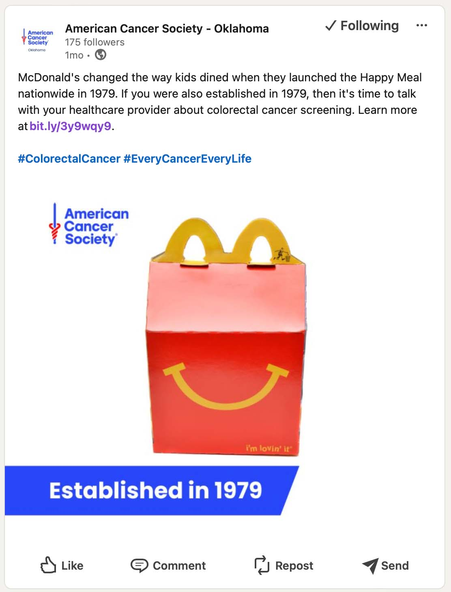

Signalement de délits, voire crimes, continuellement mis à jour (brouillon) — affaire pénale RICO visant McDonald’s Corporation et ses complices

Extraits du brouillon numéro 27. Le contenu que je publie actuellement en ligne ne représente qu’environ un dixième de l’intégralité du brouillon numéro 27.
Ce document a été rédigé et publié en anglais. La traduction française ci-dessous est fournie à titre d’information ; en cas de divergence, le texte anglais original fait foi. Traduction réalisée automatiquement par une intelligence artificielle (Claude Code) sans relecture humaine de Vincent Le Corre : elle peut donc contenir des erreurs. La présente traduction française reprend la version anglaise du 18 février 2026 ; l’original anglais a pu évoluer depuis. Cliquez ici pour lire la version originale en anglais
TABLE DES MATIÈRES
- TLDR ; RÉSUMÉ EXÉCUTIF
- Préambule
- (I) Introduction : Ce signalement est rédigé sous la contrainte
- (I)(A) Subornation de témoin et menaces (de mort ?) que j’ai reçues
- (I)(B) Le devoir chrétien de dénoncer les agissements répréhensibles
- (I)(C) Témoin clé, analyste, lanceur d’alerte, et désormais lanceur d’alerte x 2
- (I)(D) Une explication brève et non exhaustive pour comprendre le volet blanchiment d’argent de cette affaire et pourquoi il importe
- (I)(E) Une chronologie brève et non exhaustive de certains des événements clés
- (I)(E)(a) Introduction
- (I)(E)(b) 1987 : le début de la spirale descendante : le jeu-concours Monopoly de 1987
- (I)(E)(c) 2002 : McDonald’s Corporation v. Simon Marketing
- (I)(E)(d) 2011 : le début de ma découverte des infractions
- (I)(E)(e) Éclairages juridiques essentiels : les implications pour la faillite de McDonald’s
- (I)(E)(f) 2012 McDonald’s France a poursuivi ses activités criminelles organisées
- (I)(E)(g) En 2015, j’ai commencé à alerter directement McDonald’s Corporation
- (I)(E)(h) En 2016, j’ai continué d’alerter McDonald’s Corporation de nouvelles infractions
- (I)(E)(i) En 2017, j’ai encore continué d’alerter McDonald’s Corporation de nouvelles infractions
- (I)(E)(j) Éclairages juridiques essentiels : le blanchiment d’argent et les implications pour la faillite de McDonald’s
- (I)(E)(k) De 2012 à aujourd’hui : le schéma récurrent de maquillage/falsification/contrefaçon de documents judiciaires/publics/juridiques/officiels
- (I)(E)(l) Le simulacre de procès de 2016-2018 : une victoire à la Pyrrhus
- (I)(E)(m) 2019 : subornation de témoin par l’élu français Cédric Villani
- (I)(E)(n) 2019 : réponse officielle d’une association française anticorruption
- (I)(E)(o) 2019 : le CEO de McDonald’s Corporation est brusquement licencié
- (I)(E)(p) 2020 : subornation de témoin par la police française
- (I)(E)(q) 2018|2019-2021 : subornation de témoin par la ministre française de la Justice Nicole Belloubet
- (I)(E)(r) 2021 : confirmation par la police qu’une enquête pénale a été ouverte en 2019
- (I)(E)(s) 2021-2022 : subornation de témoin, chantage, tentative d’extorsion, vraisemblablement par le gouvernement français
- (I)(E)(t) 2022 : 2e plainte auprès du S.E.C. Office of the Whistleblower
- (I)(E)(u) 2023 : au-delà de l’ombre d’un doute, des milliards de transactions frauduleuses prouvées
- (I)(E)(v) 2023 : je fais l’objet d’un ordre de bâillonnement officieux
- (I)(E)(w) 2023 : contacté par un employé du département de la Justice des États-Unis (DOJ) titulaire d’une habilitation « Top Secret » en cours de validité, au sujet d’une demande FOIA/FOPA auprès de la S.E.C.
- (I)(F) L’ordre de bâillonnement officieux de 2023 : le département de la Justice des États-Unis savait ou aurait dû savoir depuis 2019
- (I)(G) Notes importantes dans un souci de transparence
- (I)(H) Devons-nous faire preuve de clémence envers certains des criminels ?
- (I)(I) Message aux responsables locaux chargés de l’application des lois : ensemble, vous détenez plus de pouvoir que le gouvernement fédéral !
- (I)(J) Liste non exhaustive des suspects
- (I)(J)(a) Suspects au sein des différents États des États-Unis
- (I)(J)(b) Suspects au sein de chaque État membre de l’Union européenne
- (I)(J)(c) Suspects au sein du Royaume-Uni
- (I)(J)(d) Suspects à l’échelle mondiale
- (I)(J)(e) Suspects au sein du gouvernement des États-Unis et des gouvernements étrangers
- (I)(J)(f) Suspects parmi les élus
- (I)(K) FACULTATIF
- (II) Comment le scandale des fraudes de McDonald’s se compare-t-il au scandale des émissions de Volkswagen : un appel à une obligation équitable de rendre des comptes
- (II)(A) Rappel du scandale des émissions de Volkswagen et de ses implications pour l’obligation des entreprises de rendre des comptes
- (II)(B) En traçant des parallèles, McDonald’s Corporation et ses complices sont des architectes de la mortalité : ils ont probablement déjà causé, ou causeront certainement à l’avenir, bien plus de décès prématurés que Volkswagen
- (II)(C) Le constructeur automobile allemand Volkswagen et la chaîne américaine de restauration rapide McDonald’s Corporation seront-ils tenus de rendre des comptes selon la même norme par le système judiciaire américain ?
- (III) Comprendre l’influence de McDonald’s et son pouvoir de corruption
- (III)(A) Méfiez-vous des fausses apparences ! McDonald’s est une véritable organisation criminelle, très puissante, dotée de profondes connexions politiques
- (III)(B) McDonald’s Corporation et ses complices sont d’importants donateurs auprès des responsables politiques
- (III)(C) McDonald’s Corporation a-t-elle corrompu Washington D.C. ?
- (III)(D) Les complices de McDonald’s Corporation ont-ils corrompu des responsables des États américains et des responsables locaux ?
- (III)(E) La police de Miami-Dade a-t-elle déjà été corrompue ?
- (III)(F) Tous les responsables américains accepteront-ils de restituer les dons provenant d’une entreprise criminelle (RICO) ?
- (III)(G) Les responsables américains et les responsables des États peuvent-ils encore être impartiaux ?
- (III)(H) Le pouvoir de corruption de McDonald’s en France
- (III)(I) Il suffit de regarder les menaces émanant de hauts responsables français
- (III)(J) McDonald’s Corporation et/ou ses complices semblent avoir déjà corrompu certains responsables chargés de l’application des lois
- (III)(K) Les propriétaires-exploitants individuels ont eux aussi le pouvoir de corrompre, par exemple
- (III)(L) La corruption pourrait également passer par les fournisseurs et/ou certains grands investisseurs institutionnels de McDonald’s Corporation
- (IV) Liste non exhaustive des infractions confirmées commises par McDonald’s Corporation et ses complices, ainsi que par des personnes devenues complices postérieurement aux faits, aux États-Unis et/ou dans d’autres pays, et liste non exhaustive des infractions alléguées
- (IV)(A) Brève introduction à cette liste non exhaustive et raisons pour lesquelles l’activité criminelle, le schéma RICO d’activité de racket tel que défini par 18 U.S.C. § 1961(5), est continue et n’a pas pris fin
- (IV)(B) Infraction continue de subornation de témoin commise par des responsables et des élus. Ordre de bâillonnement, menaces et menaces de mort potentielles
- (IV)(C) Infraction continue de subornation de témoin commise par McDonald’s Corporation et/ou ses complices
- (IV)(D) Blanchiment des produits criminels mondiaux par le siège, McDonald’s Corporation, à Chicago, Illinois, U.S.A.
- (IV)(E) La première escroquerie par marketing de masse « 1 chance sur 4 » du Monopoly McDonald’s en France pour l’année 2011
- (IV)(F) La première escroquerie par marketing de masse « 1 sur 4 » du Monopoly McDonald’s aux États-Unis pour l’année 2011
- (IV)(G) La première escroquerie par marketing de masse « 1 sur 4 » du McDonald’s Monopoly aux États-Unis pour l’année 2012
- (IV)(H) L’escroquerie par marketing de masse « 1 sur 4 » du McDonald’s Monopoly en Australie pour l’année 2022
- (IV)(I) Vous pouvez maintenant comprendre la seconde fraude au sein de l’escroquerie par marketing de masse « 1 sur 4 » du McDonald’s Monopoly aux États-Unis pour l’année 2011
- (IV)(J) Bis Repetita : idem pour la France, la seconde fraude au sein de l’escroquerie par marketing de masse « 1 sur 4 » du McDonald’s Monopoly en France pour l’année 2011
- (IV)(K) Il existe au moins 50 à 100 escroqueries par marketing de masse dans le monde, AU MOINS. Potentiellement des centaines d’escroqueries par marketing de masse dans le monde. Parfois, plusieurs fraudes au sein d’une seule édition : McDonald’s est en faillite ! (si l’État de droit est respecté)
- (IV)(L) Entrave à la justice : subornation de témoin, par Philippe Mouricou, et complicité postérieure aux faits (accessory after the fact) à l’égard d’une entreprise criminelle (RICO)
- (IV)(M) Entrave à la justice : subornation de témoin, par l’élu français Cédric Villani, complicité postérieure aux faits à l’égard d’une entreprise criminelle (RICO)
- (IV)(N) L’escroquerie par marketing de masse « Collect-to-Win » du McDonald’s Monopoly en France pour l’année 2011
- (IV)(O) L’escroquerie par marketing de masse « Collect-to-Win » du McDonald’s Monopoly en France pour l’année 2012
- (IV)(P) L’escroquerie par marketing de masse « Collect-to-Win » du McDonald’s Monopoly en France pour l’année 2015
- (IV)(Q) Aide et assistance à une entreprise criminelle (RICO) par le cabinet d’avocats Péchenard & Associés (fondé par les parents du chef de la Police nationale française)
- (IV)(R) L’escroquerie par marketing de masse du McDonald’s Monopoly en France en 2016
- (IV)(S) Forte probabilité de subornation de témoin par Allen & Overy (suppression d’un témoignage crucial)
- (IV)(T) Entrave à la justice et entente délictueuse en vue de commettre une entrave à la justice par McDonald’s Corporation, McDonald’s Europe, McDonald’s France, Allen & Overy
- (IV)(U) Escroquerie par marketing de masse du McDonald’s Monopoly en France en 2017
- (IV)(V) Très forte probabilité de corruption d’agents publics étrangers (chef de la Police nationale française)
- (IV)(W) Subornation de témoin par Nicole Belloubet et aveuglement volontaire, complicité postérieure aux faits à l’égard d’une entreprise criminelle (RICO)
- (IV)(X) Mini-génocide culturel
- (IV)(Y) Escroquerie par marketing de masse « Collect-to-Win » aux États-Unis en l’année 1987
- (IV)(Z) Infractions possibles commises par un franchisé précis de McDonald’s aux États-Unis (Mc« Truth », le mot anglais « truth » signifiant « vérité »)
- (IV)(AA) 3e exemple de fraude : la fraude « Collect-to-Win » commise par McDonald’s Corporation et ses complices : un cas de présentation frauduleuse et de fraude pure et simple
- (IV)(BB) 4e exemple de fraude : la fraude « Collect-to-Win » de 2011 commise par McDonald’s France et ses complices
- (IV)(CC) 5e exemple de fraude : la fraude « Collect-to-Win » de 2012 commise par McDonald’s France et ses complices
- (IV)(DD) 6e exemple de fraude : la fraude « Collect-to-Win » (« collectionner pour gagner ») de 2015 commise par McDonald’s France et ses complices, infractions cautionnées par McDonald’s Corporation
- (IV)(EE) 7e exemple de fraude : la fraude de 2016 commise par McDonald’s France et ses complices, infractions cautionnées, une fois de plus, par McDonald’s Corporation
- (IV)(FF) 8e exemple de fraude : la fraude de 2017 commise par McDonald’s France et ses complices, et cautionnée, une fois encore, par McDonald’s Corporation
- (IV)(GG) 9e exemple de fraude : Chine 2019
- (IV)(HH) 11e exemple de fraude : Irlande XXXX
- (IV)(II) 12e exemple : loterie illégale aux États-Unis en 2016
- (IV)(JJ) Non-dénonciation de crime (misprision of felony) : 18 U.S. Code Section 4
- (V) Recommandations urgentes pour traiter les infractions commises par McDonald’s Corporation et ses complices
- (V)(A) Avec le plus grand respect : réveillez-vous ! Regardez les faits ! Vous devez analyser les faits !
- (V)(B) Comprenez les conséquences à long terme de la criminalité organisée et du blanchiment d’argent
- (V)(C) Soyez prêts ! C’est l’une des plus grandes fraudes de l’histoire : vous devez avoir un plan
- (V)(D) Tenez des conférences de presse, sans quoi les journalistes pourraient avoir peur de publier
- (V)(E) Site d’information aux victimes destiné aux consommateurs et aux petits entrepreneurs
- (V)(F) Assurez-vous que les enquêteurs chargés de cette affaire n’ont aucun intérêt financier dans cette entreprise criminelle
- (V)(G) Efforcez-vous de déterminer quels responsables pourraient être corrompus
- (V)(H) Estimez la perte subie par les victimes
- (V)(I) Estimez la valeur comptable de McDonald’s Corporation
- (V)(J) Engagez immédiatement des mesures de confiscation des avoirs à l’encontre des avocats de cette entreprise criminelle (RICO) (SECTION ANCIENNEMENT INTITULÉE (V)(Uncategorized-2))
- (V)(K) Engager immédiatement des mesures de confiscation des avoirs contre McDonald’s Corporation et toute partie complice (SECTION ANCIENNEMENT INTITULÉE (V)(Uncategorized-1))
- (V)(L) Confiscation des avoirs de McDonald’s Corporation et de ses sociétés filiales
- (V)(M) Puis commencer à délivrer des mandats d’arrêt visant chacun des restaurants, y compris l’ensemble des franchisés
- (V)(N) Interroger les directeurs de restaurant et les propriétaires-exploitants afin de déterminer l’étendue de leur participation à cette entreprise criminelle (RICO)
- (V)(O) Confiscation des avoirs des fournisseurs et complices de McDonald’s, tels que The Marketing Store
- (V)(P) Surveiller les 100 principaux investisseurs institutionnels de McDonald’s Corporation
- (V)(Q) Confiscation des avoirs des sociétés d’investissement qui financent cette entreprise criminelle
- (V)(R) Appel urgent aux responsables politiques et aux partis américains : restituer les dons de McDonald’s Corporation et de ses complices
- (V)(S) Sauvegarder/préserver les preuves compte tenu des antécédents de McDonald’s Corporation en matière de destruction de preuves
- (V)(T) Coordination internationale avec INTERPOL et Eurojust
- (V)(U) Assurer la coordination avec la Cour européenne des droits de l’homme
- (V)(V) Pour le Sénat des États-Unis : ouvrir une enquête sénatoriale
- (V)(W) Enquêter et chercher à découvrir qui a alerté quelqu’un au sein de McDonald’s Corporation, peut-être le président du conseil d’administration, en 2019
- (V)(X) Une chaîne n’est jamais plus solide que son maillon le plus faible : envisager de négocier un accord (plea bargaining) avec Gloria Santona et/ou Steve Easterbrook
- (V)(Y) Ouvrir une enquête pénale contre l’association française de consommateurs UFC-Que Choisir
- (V)(Z) Enquêter sur les liens du président français et de son parti politique avec The Marketing Store, et même avec McKinsey
- (V)(AA) Commencer à surveiller les investisseurs institutionnels qui continueraient sciemment de financer cette entreprise criminelle et d’en tirer profit
- (V)(BB) Commencer à délivrer des demandes d’extradition contre Philippe Mouricou et Cédric Villani et Nicole Belloubet et Jean-Pierre Petit et Nawfal Trabelsi et Françoise de Borda et Pénichon et Malcolm Hicks et toute personne ayant pris part à cette entreprise criminelle (RICO)
- (V)(CC) Retenir les passeports de Steve Easterbrook, envisager le cas de Carine Smith Ihenacho, de Guillaume Huin et de toute personne présentant un risque de fuite
- (VI) La vérité est puissance : les mathématiques sont puissance
- (VII) Lois et réglementations applicables
- (VIII) Considérations essentielles : repères utiles à garder à l’esprit
- (VIII)(A) Stratégie : contraindre les franchisés à choisir leur camp
- (VIII)(B) Comment les escrocs que sont McDonald’s Corporation et leurs complices ont exploité les théories d’économie comportementale de Kahneman pour commettre des escroqueries par marketing de masse
- (VIII)(C) « Consumer Psychology and the Problem of Fine Print Fraud » (Psychologie du consommateur et problème de la fraude par les mentions en petits caractères)
- (VIII)(D) McDonald’s Corporation, ses filiales, leurs dirigeants respectifs, leurs avocats, tous savaient qu’ils commettaient des escroqueries massives par marketing de masse et du blanchiment d’argent. Certains employés le savaient même !
- (VIII)(E) McDonald’s Corporation est actuellement virtuellement en faillite : estimation approximative de son passif actuel
- (VIII)(F) Comprendre le cœur financier : capitalisation boursière contre valeur comptable (également appelée capitaux propres), et les rachats massifs d’actions de McDonald’s
- (VIII)(G) McDonald’s Corporation présente-t-elle les caractéristiques d’un système de Ponzi ? Je crois que oui, quelque chose de cet ordre.
- (VIII)(H) Le blanchiment d’argent par McDonald’s Corporation et ses filiales
- (VIII)(I) Le Foreign Corrupt Practices Act (FCPA)
- (VIII)(J) Le Racketeer Influenced and Corrupt Organizations (RICO) Act et le schéma d’activité de racket de McDonald’s Corporation (18 U.S. Code §1961)
- (VIII)(K) Le FBI et les droits des victimes d’infractions fédérales
- (VIII)(L) Préoccupations pour la U.S. Securities and Exchange Commission
- (VIII)(M) Préoccupations pour l’Internal Revenue Service (IRS)
- (VIII)(N) Préoccupations pour les administrations fiscales des États fédérés
- (VIII)(O) 18 U.S.C. § 371—ENTENTE DÉLICTUEUSE EN VUE DE FRAUDER LES ÉTATS-UNIS (CONSPIRACY TO DEFRAUD THE UNITED STATES)
- (VIII)(P) Préoccupations pour les administrations fiscales des pays européens
- (VIII)(Q) ENTENTE DÉLICTUEUSE EN VUE DE FRAUDER L’UNION EUROPÉENNE ET LES PAYS SITUÉS AU SEIN DE L’UNION EUROPÉENNE
- (VIII)(R) Préoccupations pour les administrations fiscales des pays tiers
- (VIII)(S) ENTENTE DÉLICTUEUSE EN VUE DE FRAUDER DES PAYS TIERS (p. ex. Australie, Brésil, Chine, Singapour etc)
- (VIII)(T) Table des matières des grands titres
- (VIII)(U) À propos du présent signalement
- (IX) Brève chronologie
- (X) Pas encore classé
- (XI) Autres
TLDR ; RÉSUMÉ EXÉCUTIF :
(1) McDonald’s Corporation et ses complices se sont livrés à un schéma d’activité de racket tel que défini par le Racketeer Influenced and Corrupt Organizations (RICO) Act — loi américaine relative aux organisations corrompues sous influence du racket — au Title 18 of the United States Code, Section 1961(5).(2) Ce signalement est rédigé sous la contrainte. À ce jour, j’ai reçu plusieurs menaces graves, constituant ainsi l’infraction d’intimidation de témoin, witness tampering, telle que définie par le Title 18, Section 1512 of the U.S. Code. La question de savoir si des menaces de mort ont été sous-entendues, visant potentiellement moi-même et/ou les membres de ma famille, reste à clarifier.
(3) J’ai fait l’objet d’un ordre de bâillonnement (gag order) officieux, et donc illégal. En conséquence, et pour des raisons que je ne veux et/ou ne peux détailler à ce stade — en raison de cet ordre de bâillonnement — je crois fermement, au-delà de tout doute raisonnable, que le département de la Justice des États-Unis savait ou aurait dû savoir, depuis l’été/l’automne 2019, que McDonald’s Corporation et ses complices se livrent à des activités criminelles.
(4) J’ai informé la Cour européenne des droits de l’homme (CourEDH) et demandé des mesures provisoires (article 39 du règlement de la Cour) dans l’affaire V.L.C. c. France (n° 50552/22). En raison de l’extrême sensibilité de certaines informations relatives à l’affaire McDonald’s, le dossier de la Cour a été rendu confidentiel. Toutefois, compte tenu de la gravité des infractions financières en col blanc, organisées de manière criminelle, qui se poursuivent, et dans l’intérêt de l’information du public, j’ai décidé de commencer à publier en ligne une sélection de documents aux alentours du 24 avril 2024. Ces documents sont soigneusement expurgés afin de protéger les informations sensibles tout en informant le public.
(5) J’ai également commencé à adresser des notifications à deux sénateurs des États-Unis : Mitt Romney1 et Chuck Grassley2.
(6) Parmi les infractions commises par McDonald’s Corporation et ses complices figurent des escroqueries par marketing de masse, du blanchiment d’argent, de la corruption d’agents publics étrangers, de la corruption et/ou des tentatives de corruption d’agents américains chargés de l’application des lois, ainsi que des violations de la législation sur les valeurs mobilières découlant de leurs manquements persistants à divulguer des difficultés juridiques importantes qui ont compromis la survie de l’entreprise. Si l’État de droit est respecté, McDonald’s Corporation est actuellement, de fait, virtuellement en faillite.
(7) Il existe des milliards de transactions frauduleuses réparties sur de multiples pays. C’est une affaire mondiale.
(8) Voici un exemple, et un seul, parmi les nombreuses escroqueries commises : aux États-Unis, McDonald’s Corporation et ses milliers de complices, parmi lesquels figurent notamment les franchisés, ont escroqué les consommateurs, les victimes, parmi lesquelles des millions d’enfants-victimes innocents, en affirmant faussement qu’ils disposaient d’une probabilité par tentative, dans laquelle 1 tentative était 1 vignette de jeu, de 1 chance sur 4 de gagner instantanément. C’était un mensonge ignoble et une escroquerie ignoble : ce n’était pas la probabilité de gagner instantanément par tentative. C’était, en réalité, le résultat de la somme de ce que l’on appelle en théorie des probabilités la fonction de masse de probabilité (PMF) de la loi hypergéométrique pour l’obtention d’au moins succès, sommée de jusqu’au minimum de et de , chaque terme calculant la probabilité d’exactement succès dans un échantillon de taille tiré d’une population de taille comportant succès et représentée par l’expression suivante :
(9) McDonald’s Corporation et leurs complices ont menti lorsqu’ils ont frauduleusement affirmé que les consommateurs avaient « 1 sur 4 » chances de gagner instantanément. La probabilité réelle de gagner était en réalité de « 1 sur 8 ». Gardez à l’esprit qu’il ne s’agit que de l’une de leurs nombreuses escroqueries.
(10) Si la probabilité réelle par tentative est d’environ 2.84 % de chance de gagner, avec 10 tentatives, on obtient au final environ 1 chance sur 4 de gagner instantanément :
(11) C’est comme dire :
Première partie : « Vous tentez votre chance 1 fois […] »
Deuxième partie : « […] 10 tentatives avec 2.84 % de chance de succès par tentative […] »
Troisième partie : « […] et la probabilité d’un succès est d’environ 25 %, soit 1 sur 4. »
Mais McDonald’s omet frauduleusement la deuxième partie : « […] 10 tentatives avec 2.84 % de chance de succès par tentative […] » et, en conséquence, ils finissent par formuler la déclaration frauduleuse, par omission, suivante : « Vous tentez votre chance 1 fois et la probabilité d’un succès est d’environ 25 %, soit 1 sur 4. »
(12) McDonald’s a frauduleusement affirmé qu’il s’agissait du résultat d’une probabilité, alors qu’il s’agissait en réalité de la fonction de masse de probabilité (PMF) de la loi hypergéométrique pour l’obtention d’au moins succès, sommée de jusqu’au minimum de et de , chaque terme calculant la probabilité d’exactement succès dans un échantillon de taille tiré d’une population de taille comportant succès. De plus, en ne communiquant jamais tous les paramètres aux consommateurs, il était impossible à ces derniers de simplement le deviner.
(13) Note importante : veuillez garder à l’esprit qu’il s’agit de la fonction de masse de probabilité de la distribution hypergéométrique et non de la loi binomiale, mais que j’affiche toutefois la formule de la loi binomiale parce qu’elle en est suffisamment proche pour démontrer cette escroquerie et qu’elle peut aider le lecteur à visualiser l’escroquerie machiavélique commise par McDonald’s Corporation et leurs complices. Permettez-moi de vous donner d’autres exemples :
(14) Si la probabilité réelle par tentative est de 1 sur 200, soit 0.5 % (un demi pour cent) de chance de gagner, avec 57 tentatives, on obtient au final 1 chance sur 4 de gagner instantanément :
(15) Si la probabilité réelle par tentative est de 1 sur 500, avec 144 tentatives, on obtient au final environ 1 chance sur 4 de gagner instantanément :
(16) Si la probabilité réelle par tentative est de 1 sur un million (1,000,000), avec 287,682 tentatives, on obtient au final 1 chance sur 4 de gagner instantanément :
(17) McDonald’s Corporation et leurs complices ont menti lorsqu’ils ont frauduleusement affirmé que les consommateurs avaient « 1 sur 4 » chances de gagner instantanément. La probabilité réelle de gagner était en réalité de « 1 sur 8 ». Gardez à l’esprit qu’il ne s’agit que de l’une de leurs nombreuses escroqueries.
(18) La probabilité réelle de gagner, « 1 sur 8 », n’a jamais été communiquée aux consommateurs, les victimes. Le nombre « 1 sur 4 » est, de fait, le résultat d’un calcul complexe issu d’une fonction de loi binomiale. C’est le résultat obtenu si, et seulement si, les consommateurs (les victimes) tentaient leur chance à plusieurs reprises.
(19) Mais les consommateurs (les victimes, dont des millions d’enfants-victimes) ne pouvaient pas le deviner facilement, puisque l’entité criminelle McDonald’s Corporation, et leurs complices, parmi lesquels notamment les franchisés, ont frauduleusement affirmé, en insistant en lettres majuscules et en caractères gras, que davantage de tentatives, c’est-à-dire d’achats, n’augmenteraient pas les chances de gagner.
(20) Voici un exemple et un fait : si la probabilité réelle de gagner est de 1 sur un million (1,000,000) par tentative, la probabilité de gagner au bout de 287,682 tentatives est de « 1 sur 4 ».
(21) Fait et exemple supplémentaire : si la probabilité réelle de gagner est de « 1 sur 500 » par tentative, la probabilité de gagner au bout de 144 tentatives est de « 1 sur 4 ».
(22) McDonald’s aurait pu inventer presque n’importe quels chiffres au moyen de telles méthodes frauduleuses.
(23) J’ai reçu une sorte d’ordre de bâillonnement, et je fais potentiellement (je n’en suis pas certain) l’objet d’un chantage à l’heure actuelle. En conséquence, je ne peux plus évoquer publiquement certains aspects de cette affaire.
(24) Je veux faire confiance à 100 % au FBI et au département de la Justice des États-Unis. Mais Washington D.C. subira de fortes pressions : de nombreuses institutions financières, qui financent, par la détention d’actions, l’entité criminelle McDonald’s Corporation, sont vouées à perdre beaucoup d’argent si celle-ci fait faillite. Pourtant, la loi est la loi, et McDonald’s Corporation et ses complices ne sont pas au-dessus des lois.
(25) Toutefois, les responsables locaux aux niveaux municipal, du comté et de l’État n’ont pas besoin d’attendre le feu vert de Washington D.C. et peuvent engager des poursuites contre McDonald’s Corporation et leurs complices, c’est-à-dire, parmi d’autres personnes, les franchisés, dès à présent.
(26) Ces prédateurs ont fait des dizaines de millions de victimes aux États-Unis à eux seuls, dont des millions d’enfants-victimes. Parmi les victimes figurent non seulement des consommateurs, mais aussi d’autres entreprises qui ne peuvent aucunement concurrencer loyalement une organisation criminelle qui s’est livrée à un schéma d’activité de racket (RICO) au moyen d’escroqueries et de blanchiment d’argent.
(27) L’activité criminelle est continue et n’a pas pris fin.
(28) Si vous ne comprenez pas, je suis là pour vous aider. Écrivez-moi à vincent@ecthrwatch.org
Retour à la table des matières ↩︎
Préambule
(29) Le présent document constitue un signalement non exhaustif d’infractions dirigé contre McDonald’s Corporation et ses différents complices, couvrant un éventail d’allégations qui vont de la participation directe à des activités criminelles à l’échelon local jusqu’à des activités criminelles fédérales, y compris, sans s’y limiter, le blanchiment d’argent et des violations du Racketeer Influenced and Corrupt Organizations (RICO) Act. Si certains aspects de ces allégations appellent une enquête fédérale, voire une coopération internationale avec les systèmes judiciaires d’autres pays touchés par cette entreprise criminelle, il est essentiel de reconnaître le rôle déterminant des autorités chargées de l’application des lois au niveau des États et des municipalités dans le traitement des infractions en cause à l’échelon local.(30) Il apparaît en effet que les franchisés, par leur complicité ou leur participation directe, ont pris part à des actes qui contribuent au fonctionnement d’une entreprise criminelle (RICO).
(31) Les autorités chargées de l’application des lois, à tous les niveaux, sont instamment invitées à mesurer l’étendue de leur compétence dans le contexte du présent rapport. Les services municipaux et étatiques chargés de l’application des lois disposent du mandat légal pour enquêter sur les infractions commises par les franchisés de McDonald’s et par les établissements locaux situés dans leurs ressorts respectifs. De telles enquêtes relèvent non seulement de leurs attributions, mais elles sont indispensables pour traiter de manière exhaustive l’ampleur de ce réseau criminel et son incidence sur les communautés locales.
(32) Dès lors, si le présent rapport peut justifier l’attention et l’action d’entités fédérales telles que le FBI, il ne devrait pas être renvoyé exclusivement aux autorités fédérales sans action locale concomitante. Les efforts concertés des autorités chargées de l’application des lois à tous les niveaux sont primordiaux pour garantir une réponse approfondie et efficace aux allégations ici présentées. C’est dans l’intention de favoriser une approche à plusieurs facettes de l’application des lois que le présent rapport est soumis, invitant instamment les responsables aux échelons municipal, étatique et fédéral à mener une enquête coordonnée sur les infractions commises par McDonald’s Corporation et ses complices.
(33) Par ailleurs, les autorités des autres pays où McDonald’s exerce ses activités sont elles aussi appelées à examiner les infractions des entités McDonald’s relevant de leur compétence. La nature mondiale de McDonald’s Corporation, placée au sommet de cette entreprise criminelle, implique une influence systémique qui s’étend au-delà des frontières des États-Unis. Les autorités étrangères chargées de l’application des lois doivent donc, elles aussi, enquêter sur la mesure dans laquelle McDonald’s Corporation et ses complices se sont livrés à des activités criminelles contraires aux lois locales.
(34) Pour les autorités des pays dans lesquels aucune activité frauduleuse spécifique n’a été identifiée, il est essentiel de prendre en considération les implications plus larges d’une affiliation à une société impliquée dans un schéma d’activité de racket, tel que défini par le RICO Act. En effet, même en l’absence d’escroquerie directe par marketing de masse dans un pays donné, la puissance et l’influence globales de McDonald’s Corporation ont bel et bien des effets préjudiciables sur les marchés et la concurrence au niveau local. Les petits entrepreneurs et les concurrents se trouvent en pratique contraints d’affronter une entité dont les activités mondiales sont entachées de conduites criminelles et, plus précisément, de blanchiment d’argent. Cette situation crée des conditions de concurrence inéquitables, désavantageant ceux qui s’efforcent de concourir loyalement. Les autorités chargées de l’application des lois et les autorités de régulation du monde entier sont donc instamment invitées à évaluer l’incidence des activités de McDonald’s sur les écosystèmes économiques locaux, en tenant compte de la victimisation indirecte des concurrents et de l’intégrité du marché.
(35) Comme l’explique un document, « MONEY LAUNDERING: A PRACTICE MANUAL FOR STATE PROSECUTORS », figurant sur le site de l’Office of Justice Programs du département de la Justice des États-Unis3 :
(36) « Le blanchiment d’argent fausse également l’économie. Les entreprises honnêtes sont perdantes face à celles que finance le crime organisé. Comme l’a fait observer un membre du parlement italien, ancien procureur : “Que diriez-vous d’être une entreprise en concurrence avec [des entreprises qui acceptent de l’argent sale] alors que vous devez supporter une charge de dette de 25 pour cent et que votre concurrence en a zéro ?” Avec un tel avantage concurrentiel, il n’est pas étonnant que l’argent sale pénètre et domine rapidement des industries entières. » (nous soulignons) (PART I INTRODUCTION TO MONEY LAUNDERING, CHAPTER ONE — MONEY LAUNDERING: OVERVIEW OF THE PROBLEM, SECTION B. MONEY LAUNDERING DISTORTS THE ECONOMY AND CORRUPTS SOCIETY).
(37) C’est précisément ce qu’est McDonald’s Corporation : une entité criminelle orchestrant une entreprise criminelle qui a dominé l’industrie de la restauration rapide parce qu’ils se livrent, depuis des décennies, à un schéma d’activités de racket tel que défini par le Racketeer Influenced and Corrupt Organizations (RICO) Act (voir Title 18 of the United States Code, Section 1961(5)).
Retour à la table des matières ↩︎
(I) Introduction : Ce signalement est rédigé sous la contrainte
(I)(A) Subornation de témoin et menaces (de mort ?) que j’ai reçues
(38) Madame, Monsieur,(39) Je souhaite porter à votre connaissance une série d’activités criminelles locales, nationales et transnationales impliquant McDonald’s Corporation et ses complices. McDonald’s Corporation et ses complices se sont livrés à un schéma d’activité de racket au sens du Racketeer Influenced and Corrupt Organizations (RICO) Act — loi américaine relative aux organisations corrompues sous influence du racket —, au Title 18 of the United States Code, Section 1961(5). Je suis un témoin clé, un analyste et un lanceur d’alerte dans cette affaire pénale RICO visant McDonald’s Corporation et ses complices.
(40) Afin de préserver McDonald’s Corporation de la faillite, il se pourrait qu’à l’heure actuelle les gouvernements des États-Unis et de la France cherchent l’un et l’autre à étouffer ces infractions graves, que je révèle dans le présent signalement.
(41) C’est pourquoi, si vous appartenez aux autorités locales chargées de l’application des lois et que vous n’avez pas lu intégralement le préambule du présent rapport — qui expose brièvement l’étendue de ce réseau criminel et la nécessité d’une approche d’enquête à plusieurs niveaux —, je vous invite instamment à le consulter dès maintenant afin de bien comprendre le rôle et les responsabilités qui incombent aux ressorts locaux dans le traitement de ces graves allégations.
(42) Je dois d’abord souligner que le présent signalement est rédigé sous la contrainte dès lors que j’ai reçu de multiples menaces, ayant notamment fait l’objet d’actes de subornation de témoin (witness tampering) et d’un chantage.
(43) En outre, je fais l’objet d’un ordre de bâillonnement officieux depuis juin 2023, potentiellement, mais pas nécessairement, dans le but de me réduire au silence.
(44) Comme l’ordre de bâillonnement officieux n’existe pas, du moins d’un point de vue juridique, un tel ordre de bâillonnement officieux pourrait être qualifié d’acte de subornation de témoin (18 U.S. Code § 1512), voire de potentielles menaces de mort.
(45) Je pourrais exposer publiquement les raisons pour lesquelles l’ordre de bâillonnement officieux auquel je suis soumis pourrait s’analyser comme comportant des menaces de mort, mais il me faudrait pour cela violer l’ordre de bâillonnement même qui m’a été imposé de manière officieuse. Cela me place dans une situation de catch-22 classique. Pour ceux qui ne connaîtraient pas ce terme, un catch-22 est une situation paradoxale dans laquelle une personne ne peut échapper à un problème en raison de contraintes ou de règles contradictoires. En substance, la résolution du problème dépend d’une action que le problème lui-même interdit, créant une impasse où chaque solution possible est bloquée par les termes mêmes de la difficulté. Je suis donc contraint de garder le silence sur les détails susceptibles d’illustrer et de révéler ces menaces, une telle démarche constituant en elle-même une violation de l’ordre de bâillonnement.
(46) C’est la raison pour laquelle, bien que la Cour européenne des droits de l’homme (CourEDH) m’ait accordé l’anonymat en novembre 2022, j’ai décidé de lever temporairement cet anonymat à la fin du mois d’août 2023. Cette décision a été prise non seulement pour ma propre sécurité, mais aussi et surtout pour celle de mes proches. En décembre 2023, j’ai déposé des demandes complémentaires de mesures provisoires auprès de la CourEDH, dans l’affaire V.L.C. c. France (n° 50552/22). Le dossier de la Cour relatif à cette affaire a été rendu confidentiel afin de protéger des informations sensibles, notamment des éléments relatifs à l’ordre de bâillonnement officieux dont j’ai fait l’objet et qui m’a été notifié de manière non officielle.
(47) J’ai également pris l’initiative d’informer deux sénateurs américains de ces développements, afin que des décideurs clés aient connaissance de la situation. Je continuerai en outre à transmettre activement des éléments de preuve au FBI et aux autres autorités compétentes pour contribuer à l’enquête sur cette affaire mondiale. Conscient de la dimension internationale des questions en jeu, j’ai commencé à informer un membre de la House of Lords au Royaume-Uni, dans le but d’obtenir le soutien et l’action de personnalités influentes dans différents ressorts. Cette démarche souligne ma détermination à rechercher la justice et à préserver les droits et la sécurité de toutes les parties concernées, en dépassant les frontières nationales pour traiter ces activités criminelles de manière globale.
(48) Depuis longtemps déjà, je fais l’objet de multiples menaces pour avoir tenté de sensibiliser le public aux infractions commises par McDonald’s Corporation et ses complices, ainsi qu’en raison de mes démarches visant à signaler ces agissements aux autorités compétentes. Ainsi, à l’été/l’automne 2019, peu avant le renvoi brutal du CEO de McDonald’s Corporation, Steve Easterbrook, j’ai été menacé et soumis à un chantage par Cédric Villani, élu français de premier plan qui était en mesure de confirmer les infractions graves commises par McDonald’s.
(49) Cet épisode constitue l’un des nombreux moments décisifs de cette affaire. Avant de se tourner vers la politique, Cédric Villani s’était vu décerner la médaille Fields — souvent considérée comme le prix Nobel de mathématiques. Sa profonde expertise mathématique lui a permis de saisir rapidement l’ampleur des infractions de McDonald’s. Cette expertise est l’une des raisons pour lesquelles je l’avais initialement contacté.
(50) Cependant, au lieu de remplir ses devoirs d’élu, Villani a eu recours, par l’intermédiaire de son directeur de la communication Philippe Mouricou, à des menaces et à un chantage pour tenter de me réduire au silence. En outre, sur la base des déclarations faites par son directeur de la communication, il existe des motifs plausibles de croire que McDonald’s a exercé des pressions sur l’élu français Cédric Villani. Si cela était confirmé, de tels agissements de McDonald’s relèveraient non seulement du champ d’application du Foreign Corrupt Practices Act (FCPA) — loi américaine réprimant la corruption d’agents publics étrangers —, mais constitueraient également une nouvelle infraction sous-jacente (predicate act) dans le schéma d’activité de racket auquel McDonald’s Corporation et ses complices se livrent depuis des décennies.
(51) Tout cela souligne la nécessité d’une vue d’ensemble des événements qui se sont produits. Avant d’aborder une brève chronologie non exhaustive illustrant le contexte plus large de cette affaire, il est essentiel de traiter d’abord de mon devoir chrétien de dénoncer les agissements répréhensibles. Je préciserai en outre mon rôle de « témoin clé, analyste, lanceur d’alerte » et, désormais, compte tenu de la complexité et des risques accrus auxquels je fais face, de « lanceur d’alerte x2 ». Ces sections poseront les bases nécessaires à la compréhension des impératifs éthiques et personnels qui motivent mon action.
Retour à la table des matières ↩︎
(I)(B) Le devoir chrétien de dénoncer les agissements répréhensibles
(52) À la lumière des commandements scripturaires et de mes propres convictions chrétiennes, dénoncer les agissements répréhensibles n’est pas seulement une obligation légale, mais un mandat divin. Les Écritures sont claires, comme l’énonce Exode 20:16 : « Tu ne porteras point de faux témoignage contre ton prochain. » Ce commandement n’interdit pas seulement le mensonge : il nous oblige aussi à élever la voix contre la fausseté et l’injustice, partout où elles se manifestent.(53) De même, Ésaïe 59:4 dresse le tableau saisissant d’une société submergée par la tromperie et l’injustice :
« Nul ne se plaint avec justice,
Nul ne plaide avec droiture ;
Ils s’appuient sur des choses vaines et disent des faussetés,
Ils conçoivent le mal et enfantent le crime. »
(54) Ce passage, comme beaucoup d’autres dans les livres prophétiques, n’est pas seulement une critique des méfaits actuels : il est aussi un appel à amender notre conduite et à rechercher sincèrement la justice et la vérité.
(55) Dans mes efforts pour révéler les pratiques répréhensibles au sein de McDonald’s Corporation, je suis guidé par ces injonctions bibliques. La décision de dénoncer leurs agissements procède d’un engagement à défendre les principes de vérité et de justice, fondamentaux tant pour le bien-être de la société que pour la doctrine chrétienne. Signaler de tels agissements répond à l’impératif biblique de protéger l’innocent et de faire en sorte que la justice l’emporte. C’est le reflet de mon devoir : non pas colporter des rumeurs ou m’adonner aux commérages, mais agir de manière responsable et courageuse face aux agissements répréhensibles.
(56) Cet attachement à la vérité est encore renforcé par la croyance chrétienne selon laquelle Dieu est loi et justice. Alors que je conteste les tentatives de toute entité, qu’elle soit une entreprise ou un gouvernement, d’étouffer cette vérité au moyen d’un ordre de bâillonnement, je m’appuie fermement sur la promesse selon laquelle « la vérité vous affranchira » (Jean 8:32). Ma démarche n’est pas motivée par un gain personnel, mais par le désir sincère de voir la justice rendue et l’intégrité rétablie conformément à la loi de Dieu.
(57) Si les infractions commises à l’échelle mondiale par McDonald’s Corporation et ses complices sont déjà d’une exceptionnelle gravité, toute tentative des gouvernements américain et/ou français d’étouffer ces infractions relèverait d’une catégorie d’infractions plus grave encore.
(58) Garantie de divulgation :
(59) Il importe de préciser que mes démarches antérieures ont pu être influencées par des circonstances personnelles, notamment des difficultés financières et les problèmes de santé de mon épouse. À l’origine, une éventuelle transaction avec McDonald’s aurait pu soulager ces difficultés personnelles. Cependant, l’objet de mon action a considérablement évolué, en particulier après avoir été soumis à un chantage, menacé, espionné par le gouvernement français, et désormais destinataire, de manière officieuse, d’un ordre de bâillonnement — mesure qui pourrait être perçue comme un nouvel acte de chantage et de menace. Aujourd’hui, ma détermination à révéler la vérité est animée par la volonté d’empêcher que d’autres ne subissent de nouveaux préjudices et d’obtenir justice pour les dommages irréversibles causés par cette entreprise criminelle. De hauts responsables français ont déjà pris part à ces agissements, à tout le moins par une négligence criminelle grave, comme je l’ai exposé dans une communication soumise à la Cour européenne des droits de l’homme4.
(60) Si des entités gouvernementales devaient tenter de protéger ou de dissimuler les infractions graves commises par McDonald’s Corporation et ses complices, j’assure toutes les parties prenantes que ces tentatives se heurteront à une vigilance renforcée et à des mesures accrues destinées à garantir un examen maximal et une prise de conscience maximale du public. Je m’engage à une divulgation pleine et entière des faits entourant ces affaires. Ma résolution est d’apporter la transparence à ces procédures, en veillant à ce que la justice soit rendue ouvertement et sans ingérence. L’implication d’un quelconque gouvernement dans la protection de McDonald’s serait absolument inacceptable, aggravant la gravité des infractions initiales et trahissant la confiance du public.
(61) Je n’agirai pas contre ma conscience.
(62) « Mieux vaut peu, avec la justice, Que de grands revenus, avec l’injustice. » (Proverbes 16:8)
Retour à la table des matières ↩︎
(I)(C) Témoin clé, analyste, lanceur d’alerte, et désormais lanceur d’alerte x 2
(I)(C)(a) Définition et rôle du lanceur d’alerte
(63) Dans cette section de mon signalement, il est essentiel de préciser ma position de témoin clé, d’analyste, de lanceur d’alerte et, à la suite de l’ordre de bâillonnement dont j’ai fait l’objet, de lanceur d’alerte fois deux (x2). Cette qualification n’a rien d’arbitraire : elle est profondément ancrée dans les définitions et dans les circonstances qui entourent mes échanges avec McDonald’s Corporation, McDonald’s Europe et McDonald’s France, ainsi que dans les informations non publiques que je détiens.(64) Il importe tout d’abord d’établir que mon emploi du terme « lanceur d’alerte » est conforme aux définitions admises, bien que je n’aie jamais été salarié de McDonald’s. On entend généralement par lanceur d’alerte une personne qui révèle des informations sur des activités illégales ou sur des dangers pour la santé et la sécurité publiques, informations qui, autrement, n’auraient peut-être pas été portées au jour. Le National Whistleblower Center en donne une définition claire5 :
(65) « Au niveau le plus simple, un lanceur d’alerte est une personne qui signale un gaspillage, une fraude, un abus, une corruption ou des dangers pour la santé et la sécurité publiques à quelqu’un qui est en mesure de remédier aux agissements répréhensibles. Un lanceur d’alerte travaille généralement au sein de l’organisation où les agissements répréhensibles se produisent ; toutefois, le fait d’être un “initié” d’une administration ou d’une entreprise n’est pas indispensable pour agir en qualité de lanceur d’alerte. Ce qui compte, c’est que la personne divulgue des informations sur des agissements répréhensibles qui, autrement, ne seraient pas connues. »
(66) Cette définition recouvre ma situation. À l’origine, mon implication n’a pas commencé en qualité d’initié, mais de victime des agissements de McDonald’s Corporation en France. Mes démarches pour faire part de mes préoccupations directement à McDonald’s France, puis à McDonald’s Corporation, au sujet d’une escroquerie en cours au préjudice des consommateurs et d’autres agissements illicites, m’ont donné accès à des échanges et à des communications sensibles. Ceux-ci comprenaient des correspondances entre des dirigeants de l’entreprise et moi-même, ainsi qu’une correspondance entre mon avocat et l’un des avocats de McDonald’s, qui démontraient clairement la connaissance qu’avait McDonald’s des infractions qu’elle commettait et son mépris total à leur égard.
(I)(C)(b) L’évolution de mon rôle de lanceur d’alerte
(67) Le terme « lanceur d’alerte » a d’abord été appliqué à mon action par un journaliste qui a décrit l’un de mes sites internet consacrés à la révélation de ces faits comme un « whistleblower site » (« site de lanceur d’alerte »). Bien que j’aie d’abord hésité à adopter ce qualificatif — compte tenu de ma position extérieure à l’entreprise —, il s’est révélé de plus en plus approprié. Les informations non publiques que j’ai divulguées confirment non seulement l’existence de manquements, mais mettent aussi en lumière des efforts systématiques visant à étouffer ces informations.(I)(C)(c) Un rôle amplifié à la suite de l’ordre de bâillonnement
(68) À la suite de l’ordre de bâillonnement officieux qui m’a été imposé, mon rôle de lanceur d’alerte a de fait doublé — d’où, lanceur d’alerte fois deux (x2). Ce terme traduit le risque et la responsabilité accrus que j’assume en continuant à divulguer des informations essentielles sous des contraintes renforcées. L’ordre de bâillonnement, s’il m’empêche d’évoquer les détails, souligne la gravité des implications et des risques liés à la révélation continue de ces vérités.(69) Dans la suite de mes démarches, il demeure impératif que je persévère dans la mise au jour et le signalement des malversations de McDonald’s Corporation et de ses sociétés affiliées, en conservant l’intégrité et la véracité qu’exige la défense de la sécurité publique et de l’obligation pour les entreprises de rendre des comptes.
(I)(C)(d) Comprendre mon rôle analytique au regard du Dodd-Frank Act
(70) Mon rôle analytique, bien qu’il ne soit peut-être pas formel au sens où le sont ceux des analystes financiers ou des comptables, suppose un examen approfondi de la probabilité statistique et des schémas opérationnels des stratagèmes criminels de McDonald’s. Ce type d’analyse est essentiel et s’inscrit dans le champ de l’analyse d’investigation et de l’analyse forensique, qui va au-delà des informations de surface pour comprendre les mécanismes sous-jacents.(71) En vertu du Dodd-Frank Wall Street Reform and Consumer Protection Act (la loi américaine de réforme de Wall Street et de protection des consommateurs), un analyste peut effectivement être une personne qui rassemble et interprète des informations publiquement disponibles ou secondaires afin de détecter des violations de la réglementation financière ou des manquements. Ce rôle dépasse celui des analystes financiers traditionnels pour englober toute personne qui, par son analyse, permet aux autorités de régulation d’identifier des manquements réglementaires et d’agir en conséquence.
(72) Selon Stephen M. Kohn, dans son ouvrage Rules for Whistleblowers: A Handbook for Doing What’s Right : « Le Dodd-Frank Act permet également aux analystes de déposer des demandes de récompense. Un analyste n’est pas une source originale traditionnelle, mais plutôt une personne qui assemble des informations publiques ou secondaires d’une manière qui permet aux commissions d’apprendre qu’une violation s’est produite. »
(73) Cette disposition est particulièrement pertinente au regard de mes activités, car mes investigations sur les pratiques criminelles de McDonald’s ne se bornent pas à interpréter des données : elles révèlent une escroquerie systémique à laquelle les autorités de régulation n’avaient auparavant donné aucune suite.
(74) Dès lors que mon travail met au jour des escroqueries importantes, suivies d’infractions financières graves et de manquements (blanchiment d’argent et défaut d’alerte des investisseurs), il est susceptible d’ouvrir droit aux protections des lanceurs d’alerte prévues par le Dodd-Frank Act. Ce point est essentiel, car il me protège contre les représailles.
(75) En conclusion, mon rôle d’analyste dans ce contexte dépasse l’analyse financière traditionnelle et relève de l’examen forensique, où l’analyse elle-même contribue à mettre au jour des montages complexes et les violations réglementaires qui s’ensuivent. Ce faisant, j’incarne l’esprit des dispositions du Dodd-Frank Act relatives aux lanceurs d’alerte, en servant de vecteur essentiel de transparence et d’obligation de rendre des comptes dans les pratiques des entreprises. Cela réaffirme la valeur juridique et sociétale de mes travaux d’investigation et fait de moi une figure clé de la défense des droits des consommateurs et d’une conduite éthique des affaires.
Retour à la table des matières ↩︎
(I)(D) Une explication brève et non exhaustive pour comprendre le volet blanchiment d’argent de cette affaire et pourquoi il importe
(76) Je(77) section
(78) McDonald’s Corporation
(79) /|\
(80) / | \
(81) / | \
(82) / | \
(83) / | \
(84) McDonald’s USA McDonald’s France McDonald’s Norway
(85) /|\ /|\ /|\
(86) / | \ / | \ / | \
(87) Franchisé A B C Franchisé D E F Franchisé G H I
(88)
(88)
(89) La doctrine du mélange des fonds (commingling) : lorsque des fonds d’origine illicite sont mêlés à des fonds licites, la totalité des fonds ainsi mélangés devient soumise aux réclamations.
Retour à la table des matières ↩︎
(I)(E) Une chronologie brève et non exhaustive de certains des événements clés
(I)(E)(a) Introduction
(90) La présente section fournit une brève explication de certains des événements importants liés au volet blanchiment d’argent de cette affaire.(91) L’objet premier de cette explication non exhaustive est d’offrir un aperçu rapide destiné à aider le lecteur à comprendre le volet blanchiment d’argent de l’affaire, et à comprendre pourquoi les dirigeants de McDonald’s France et de McDonald’s Europe et, plus déterminant encore, les dirigeants de McDonald’s Corporation avaient pleinement conscience de commettre l’infraction de blanchiment d’argent.
(92) S’agissant du blanchiment d’argent, le site internet d’INTERPOL indique : « Remonter aux sources. L’enquête sur le blanchiment d’argent va généralement de pair avec l’enquête sur l’infraction initiale qui a généré les produits. Les enquêtes financières visent à identifier les origines, les flux et la localisation des revenus illicites et à démasquer les réseaux impliqués. Les avoirs acquis illégalement peuvent alors être gelés ou confisqués, et les auteurs tant des infractions initiales que du blanchiment d’argent subséquent poursuivis. »
(93) Ce n’est que plus loin dans le présent signalement que j’examinerai plus en détail ces infractions initiales génératrices des produits, afin de révéler la profondeur et l’étendue des activités criminelles. Pour l’heure, cette explication brève et non exhaustive sert principalement à montrer la pleine implication de McDonald’s Corporation dans le blanchiment d’argent.
Retour à la table des matières ↩︎
(I)(E)(b) 1987 : le début de la spirale descendante : le jeu-concours Monopoly de 1987
(94) McDonald’s Corporation s’est engagée sur une mauvaise voie au moins depuis 1987, lorsqu’elle a lancé le jeu-concours Monopoly. Je crois que ce jeu-concours, et j’expliquerai plus loin en détail pourquoi, a toujours constitué une escroquerie parce qu’il présente frauduleusement de manière inexacte les chances de gagner qu’ont les gens.(95) Ce jeu-concours Monopoly de McDonald’s varie d’un pays à l’autre dans son contenu. Mais deux aspects principaux ont été reproduits à travers le monde. Le premier est le « Collect-to-Win » (« collectionner pour gagner »).
(96) Des années après 1987, McDonald’s allait introduire une autre composante/un autre mode de participation au Monopoly de McDonald’s. Je ne sais pas exactement en quelle année cela a commencé, mais, à un certain moment, ils allaient ajouter le « Instant-Win » (« gain instantané »).
(97)
(98) Dans le volet « Collect-to-Win » du jeu Monopoly de McDonald’s, les joueurs collectionnent des vignettes de jeu apposées sur les produits McDonald’s. La plupart de ces vignettes représentent des propriétés du Monopoly. Pour gagner un lot, les participants doivent réunir toutes les propriétés d’une même couleur, à l’image du jeu de plateau. Toutes les pièces ne sont cependant pas également accessibles ; certaines propriétés sont rendues intentionnellement, et donc frauduleusement, plus rares que d’autres. Toutefois, et comme l’a expliqué un journaliste lauréat du prix Pulitzer dans un article qu’il a écrit sur le jeu-concours Monopoly, la « recette secrète » – que je préfère appeler présentation frauduleuse – tient à ce que les participants croient que chaque propriété a la même probabilité d’être trouvée.
(99) Dès le départ, cela a marqué le début de la descente de McDonald’s, qui s’est mise à gagner de l’argent facile au moyen de pratiques de marketing douteuses — en réalité illégales, comme je le détaillerai plus loin. En recourant à des tactiques trompeuses pour attirer les clients, McDonald’s n’a pas seulement compromis son intégrité : elle a aussi entamé un schéma de comportement qui allait entraîner d’importantes conséquences juridiques.
Retour à la table des matières ↩︎
(I)(E)(c) 2002 : McDonald’s Corporation v. Simon Marketing
(100) L’affaire McDonald’s Corporation v. Simon Marketing, en 2002, a été une bataille judiciaire importante née d’un vaste montage frauduleux orchestré par Jerome Jacobson, un ancien policier qui travaillait pour Simon Marketing, un fournisseur des jeux promotionnels de McDonald’s. Jacobson a exploité sa position pour voler des éléments de jeu rares du jeu Monopoly et les a distribuées à un réseau de complices qui ont mensongèrement réclamé des millions en lots.(101) Je soutiens toutefois que Jerome Jacobson n’était rien de plus qu’un voleur volant un autre voleur, à savoir McDonald’s.
(102) L’affaire judiciaire McDonald’s Corporation v. Simon Marketing, en 2002, constitue un moment charnière pour comprendre les schémas plus larges de manquements au sein de McDonald’s Corporation. Ce litige trouve son origine dans une fraude massive commise par des salariés de Simon Marketing, la société qui gérait les jeux promotionnels de McDonald’s, dont le célèbre jeu Monopoly. L’affaire a non seulement mis en évidence des vulnérabilités importantes dans les pratiques promotionnelles de McDonald’s, mais elle a aussi mis en lumière la possibilité d’une collusion, interne comme externe, pour escroquer les clients.
(103) La portée de cette affaire dépasse ses répercussions juridiques immédiates ; elle apporte un éclairage déterminant sur la surveillance interne et les contrôles éthiques — ou leur absence — au sein des activités de McDonald’s. Le litige a donné lieu à d’importantes transactions financières et aurait dû constituer un signal d’alarme pour McDonald’s quant à ses partenariats contractuels et à sa sécurité opérationnelle. En outre, il a ouvert un débat public sur la nécessité, pour les entreprises, d’imposer des normes éthiques strictes et d’exercer une surveillance rigoureuse afin de prévenir des incidents similaires.
(104) Cette affaire est essentielle à notre propos parce qu’elle illustre les types de vulnérabilités et de défis éthiques susceptibles d’imprégner les grandes entreprises. Elle crée également un précédent quant à la manière dont de telles questions sont traitées sur le plan judiciaire et public, en offrant un contexte fondateur à l’examen continu des pratiques de McDonald’s dans les années qui ont suivi.
Retour à la table des matières ↩︎
(I)(E)(d) 2011 : le début de ma découverte des infractions
(105) J’ai commencé à découvrir certaines des infractions que McDonald’s commet en réalité depuis des décennies alors que je vivais en France, en 2011. Et c’est en 2023, et peu avant d’être frappé d’un ordre de bâillonnement, que j’ai commencé à comprendre que cette entreprise criminelle en cours/continue, entreprise criminelle relevant du Racketeer Influenced and Corrupt Organizations (RICO) Act, entreprise criminelle orchestrée par McDonald’s Corporation, avait débuté en 1987, sinon plus tôt.(106) Dans le résumé exécutif du présent signalement, j’ai brièvement exposé l’une de leurs nombreuses infractions — l’escroquerie du « 1 sur 4 » à gain instantané, un stratagème frauduleux de marketing de masse. Ce stratagème frauduleux a également eu lieu en France pour l’année 2011. Il ne s’agissait toutefois pas de la seule escroquerie, en France, pour cette année-là.
(107) Il y a eu notamment le stratagème frauduleux « Collect-to-Win » du Monopoly de McDonald’s. Pour ceux qui ne connaissent pas cette opération — ou, plus exactement, l’escroquerie pure et simple qu’elle a constituée en France —, voici comment elle fonctionnait :
(108) Dans le volet « Collect-to-Win » du jeu Monopoly de McDonald’s, les joueurs collectionnent des vignettes de jeu apposées sur les produits McDonald’s. La plupart de ces vignettes représentent des propriétés du Monopoly. Pour gagner un lot, les participants doivent réunir toutes les propriétés d’une même couleur, à l’image du jeu de plateau. Toutes les pièces ne sont cependant pas également accessibles ; certaines propriétés sont rendues intentionnellement, et donc frauduleusement, plus rares que d’autres. Or les participants croient que chaque pièce a la même probabilité d’être trouvée.
(109) En France, la transposition de la directive 2005/29/CE de l’Union européenne, qui vise les pratiques commerciales déloyales des entreprises vis-à-vis des consommateurs, qualifie fermement de telles pratiques trompeuses de felonies (catégorie du droit américain ; en droit français, il s’agit de délits), indépendamment de ce qui est indiqué dans le règlement officiel ou même dans les petits caractères. Ce qu’il importe toutefois de comprendre, c’est qu’en France McDonald’s a omis d’indiquer, non seulement dans les petits caractères mais même dans le règlement officiel, que certaines propriétés étaient rendues intentionnellement — et donc frauduleusement au sens pénal — rares.
(110) Mais rappelez-vous que ce que signifie la directive 2005/29/CE de l’Union européenne, c’est que, même si McDonald’s avait indiqué dans le règlement du jeu Monopoly, ou dans les petits caractères, que certains éléments de jeu étaient plus rares que d’autres — ce que, pour être tout à fait clair, ils n’ont pas fait —, la simple tentative de fausser la perception des chances de gagner serait en réalité considérée comme une felony (catégorie du droit américain ; en droit français, un délit). L’absence de cette mention souligne davantage le caractère trompeur de la promotion et l’aligne pleinement sur des pratiques qui constituent une escroquerie caractérisée au regard du droit pénal français.
(111) Chose stupéfiante, la campagne de 2011 en France prévoyait en outre que, avant de réclamer le moindre lot, les consommateurs devaient compléter non pas une seule série, mais le plateau entier — un exploit qui, à ma connaissance, n’est documenté dans aucun pays participant, ce qui illustre davantage la conception frauduleuse du dispositif.
(112) Ce degré de présentation frauduleuse dépasse la simple négligence ; il constitue une escroquerie délibérée et calculée. Une escroquerie visant les enfants, parmi d’autres populations vulnérables.
(113) Environ un mois après ma découverte initiale en 2011, et après avoir consulté un avocat, j’ai commencé à signaler à McDonald’s France les agissements frauduleux que j’avais mis au jour.
(114) Tout au long de l’année suivante, en 2012, j’ai persévéré dans mes démarches, en portant mes préoccupations à un niveau supérieur pour y inclure non seulement les dirigeants locaux, mais aussi en les exhortant à informer les échelons supérieurs de l’organisation, y compris McDonald’s Corporation à Chicago, son équipe dirigeante et son conseil d’administration.
(115) Malgré ces efforts, McDonald’s France et ses complices ont poursuivi leur participation à des activités criminelles organisées.
(116) Avec le temps, il est devenu de plus en plus manifeste que ce schéma de manquements ne se limitait pas à la France, mais constituait un problème généralisé touchant de nombreux autres pays à travers le monde.
Retour à la table des matières ↩︎
(I)(E)(e) Éclairages juridiques essentiels : les implications pour la faillite de McDonald’s
(117) Pour saisir pleinement les implications des infractions commises en Europe, ainsi que leurs conséquences sur la faillite, d’abord, de McDonald’s France, puis, plus tard, de McDonald’s Corporation, une brève explication s’impose.(118) McDonald’s France a affirmé une quantité égale de chaque propriété. Toutefois, ils ont truqué le jeu de manière à rendre le gain presque impossible pour les consommateurs, au moyen du stratagème frauduleux « Collect-to-Win » (« collectionner pour gagner »).
(119) Dès lors, en truquant le jeu, ils ont privé leurs propres clients (plus exactement leurs victimes) d’une chance de gagner juste et égale.
(120) Puisque McDonald’s France et ses complices ont effectivement déclaré, par une présentation frauduleuse, que toutes les vignettes de jeu représentant les propriétés étaient distribuées de façon égale et séquentielle — je reviendrai plus loin sur ce point de la distribution séquentielle —, ils ont contracté un engagement qu’ils ne pourront jamais honorer.
(121) En conséquence, McDonald’s France et ses complices ont commis une escroquerie et sont légalement tenus d’indemniser les victimes — leurs propres clients — pour la perte de chance de gagner qu’elles auraient eue si le jeu-concours n’avait pas été truqué. Le montant total s’élève, au maximum et théoriquement, à environ 3,771,375,365,237.50 euros. Oui ; plus de 3.7 billions d’euros ; vous avez bien lu. Et ce, uniquement pour l’une des escroqueries qu’ils ont commises en France pour l’année 2011.
(122) Étant donné que McDonald’s France est, directement ou indirectement, une filiale de McDonald’s Corporation, et étant donné que la capitalisation boursière de McDonald’s Corporation s’élève actuellement à environ $192 milliards (au 2024-04-16), j’estime qu’il est permis de dire que McDonald’s France est virtuellement en faillite, puisqu’elle ne saurait être valorisée davantage que McDonald’s Corporation. Et même la capitalisation boursière de McDonald’s Corporation ne suffirait pas à indemniser les victimes. Par ailleurs, et comme je l’expliquerai plus loin, ce qui importe réellement est la valeur comptable de la société, et non sa capitalisation boursière.
(123) Le fondement juridique est identique à celui d’une affaire dont je devais prendre connaissance plus tard et qui s’inscrivait dans une opération d’envergure nationale du FBI intitulée « Final Answer » (« réponse finale »).
(124) À ceci près que, cette fois, les criminels sont McDonald’s France et ses complices. McDonald’s Corporation allait ensuite devenir complice postérieurement aux faits (accessory after the fact) et, en définitive, je devais comprendre que c’était en réalité McDonald’s Corporation qui cautionnait de telles activités criminelles organisées.
(125) L’une des différences essentielles entre le truquage du McDonald’s Monopoly tel qu’il s’est produit aux États-Unis et le truquage du McDonald’s Monopoly tel qu’il s’est produit en France tient à ce qu’aux États-Unis,
Retour à la table des matières ↩︎
(I)(E)(f) 2012 McDonald’s France a poursuivi ses activités criminelles organisées
(126) UnRetour à la table des matières ↩︎
(I)(E)(g) En 2015, j’ai commencé à alerter directement McDonald’s Corporation
(127) En 2015, je suis entré directement en contact avec McDonald’s Corporation afin de l’alerter du fait que ses filiales en Europe se livraient à des activités criminelles. McDonald’s Corporation m’a répondu par l’intermédiaire de sa General Counsel (directrice juridique) de l’époque, Gloria Santona, qui a reconnu prendre cette demande au sérieux : ils avaient donc pleinement connaissance des infractions qui se déroulaient en Europe.(128) Certains des dirigeants du plus haut niveau du siège, tels que le CEO de McDonald’s Corporation Steve Easterbrook et la General Counsel Gloria Santona, ont été informés de ces préoccupations. Dans une correspondance électronique que j’ai reçue le 21 octobre 2015 à 23:47 +0800 (heure normale de Chine), Mme Santona a déclaré : « Thanks for your follow-up note. Of course, we take such inquiries seriously. As this is a French matter, I have asked the French team to review the situation and respond to you once they have shared their findings with me. » (traduction libre : « Merci pour votre note de relance. Bien entendu, nous prenons ce type de demandes au sérieux. S’agissant d’une affaire française, j’ai demandé à l’équipe française d’examiner la situation et de vous répondre une fois qu’elle m’aura fait part de ses conclusions. ») L’ancien CEO de McDonald’s Corporation, Steve Easterbrook, était également en copie de cette communication, ce qui indique qu’il avait été informé de l’affaire.
(129) Aux termes du RICO Act, Title 18 of the United States Code, Section 1961(5), un « schéma d’activité de racket » suppose au moins deux actes d’activité de racket, dont l’un est survenu après la date d’entrée en vigueur du présent chapitre et dont le dernier est survenu dans les dix ans suivant la commission d’un acte antérieur d’activité de racket.
(130) La Section 1961(1) définit en outre la notion d’« activité de racket » comme englobant un large éventail d’infractions, y compris, sans s’y limiter, des actes liés à la corruption, à la fraude, aux jeux d’argent, au blanchiment d’argent, à l’entrave à la justice, et d’autres encore.
(131) Au vu des éléments de preuve disponibles et des comportements des parties impliquées, je crois que les agissements de McDonald’s Corporation et de ses complices correspondent aux définitions et aux conditions précitées du RICO Act.
(132) De fait, compte tenu de la connaissance qu’en avaient les dirigeants du plus haut niveau de McDonald’s Corporation et de McDonald’s France, et de leur inaction subséquente, des implications en matière de blanchiment d’argent se rattachent aux activités frauduleuses signalées. Sur la base des éléments de preuve et des schémas de comportement observés, je crois que McDonald’s Corporation continue actuellement de se livrer à un schéma d’activité de racket, tel que défini par le Racketeer Influenced and Corrupt Organizations (RICO) Act — loi américaine relative aux organisations corrompues sous influence du racket.
(133) McDonald’s Corporation est enfermée, depuis 2015 au moins, dans un cercle vicieux dont elle ne pourra jamais sortir. Je l’expliquerai plus en détail plus loin.
(134) J’exposerai également le schéma d’activité de racket plus loin dans ce rapport. Mais ce que je tiens à souligner, c’est qu’à compter de 2015, McDonald’s Corporation ne pouvait raisonnablement plus ignorer que ses filiales se livraient à des activités criminelles.
(135) Dès lors que la société faîtière, McDonald’s Corporation, qui supervise les opérations mondiales de ses filiales, a eu pleinement connaissance de ces activités criminelles en cours, elle aurait dû faire cesser immédiatement les escroqueries alors en cours.
(136) McDonald’s Corporation a choisi de ne pas ordonner à ses filiales de cesser immédiatement leurs activités criminelles. En conséquence, McDonald’s Corporation est entrée dans un cercle vicieux dont il est désormais impossible de sortir : un schéma d’activité de racket tel que défini par le RICO Act. Si l’État de droit est respecté, McDonald’s Corporation est actuellement, de fait, virtuellement en faillite.
(137) Il s’agit d’une affaire mondiale qui s’étend sur plusieurs pays : la quasi-totalité du monde a été touchée par le schéma d’activité de racket dans lequel McDonald’s s’est engagé. Comme je l’explique dans le préambule du présent signalement, même les pays dans lesquels aucune escroquerie par marketing de masse n’a jamais eu lieu sont affectés par cette entreprise criminelle orchestrée par McDonald’s Corporation.
Retour à la table des matières ↩︎
(I)(E)(h) En 2016, j’ai continué d’alerter McDonald’s Corporation de nouvelles infractions
Retour à la table des matières ↩︎(I)(E)(i) En 2017, j’ai encore continué d’alerter McDonald’s Corporation de nouvelles infractions
Retour à la table des matières ↩︎(I)(E)(j) Éclairages juridiques essentiels : le blanchiment d’argent et les implications pour la faillite de McDonald’s
(138) Texte(139) Texte
(140) Texte
Retour à la table des matières ↩︎
(I)(E)(k) De 2012 à aujourd’hui : le schéma récurrent de maquillage/falsification/contrefaçon de documents judiciaires/publics/juridiques/officiels
(141) J’ai tenté à plusieurs reprises d’alerter les autorités judiciaires françaises, mais des faits inhabituels, pour ne pas dire criminels, se produisaient, tels que des documents/décisions judiciaires/publics/juridiques/officiels contrefaits/maquillés/falsifiés.(142) Les infractions de maquillage/falsification/contrefaçon de documents judiciaires/publics/juridiques/officiels sont exceptionnellement graves. Je l’ai documenté longuement dans la demande de mesures provisoires que j’ai soumise à la Cour européenne des droits de l’homme (CourEDH).
Retour à la table des matières ↩︎
(I)(E)(l) Le simulacre de procès de 2016-2018 : une victoire à la Pyrrhus
(143) TexteRetour à la table des matières ↩︎
(I)(E)(m) 2019 : subornation de témoin par l’élu français Cédric Villani
(144) Dans le même temps, en France — deuxième marché le plus rentable de McDonald’s au monde —, une évolution parallèle d’importance se faisait jour, qui se rapporte aux activités criminelles de McDonald’s Corporation et de ses sociétés affiliées, dont McDonald’s France et leurs franchisés. La gravité des escroqueries perpétrées par McDonald’s en France revêt un caractère particulièrement scandaleux dans le contexte de cette affaire mondiale.(145) Dans le résumé exécutif, j’ai très brièvement exposé l’un des principaux montages frauduleux orchestrés par McDonald’s, révélant un degré de tromperie si sophistiqué que même les consommateurs les plus avisés ne pouvaient déceler les machinations frauduleuses à l’œuvre.
(146)
(147) Cherchant de l’aide, je me suis adressé, à l’été 2019, à Cédric Villani, élu français et éminent lauréat de la médaille Fields — souvent considérée comme le prix Nobel de mathématiques. J’ai d’abord reçu une réponse générique promettant une aide malgré un emploi du temps chargé — une réponse positive en apparence, qui n’a toutefois été suivie d’aucun acte.
(148) ==========
(149) À cela s’ajoutaient de nombreux problèmes entravant le bon fonctionnement de la justice en France. Par exemple, le schéma récurrent de falsification/contrefaçon/maquillage/altération de documents officiels/judiciaires/publics/juridiques.
Retour à la table des matières ↩︎
(I)(E)(n) 2019 : réponse officielle d’une association française anticorruption
Retour à la table des matières ↩︎(I)(E)(o) 2019 : le CEO de McDonald’s Corporation est brusquement licencié
Retour à la table des matières ↩︎(I)(E)(p) 2020 : subornation de témoin par la police française
(150) TexteRetour à la table des matières ↩︎
(I)(E)(q) 2018|2019-2021 : subornation de témoin par la ministre française de la Justice Nicole Belloubet
(151) TexteRetour à la table des matières ↩︎
(I)(E)(r) 2021 : confirmation par la police qu’une enquête pénale a été ouverte en 2019
(152) Texte(153)
(154) Il existe une corrélation entre cet événement et l’ordre de bâillonnement officieux que je devais recevoir en 2023.
Retour à la table des matières ↩︎
(I)(E)(s) 2021-2022 : subornation de témoin, chantage, tentative d’extorsion, vraisemblablement par le gouvernement français
(155) TexteRetour à la table des matières ↩︎
(I)(E)(t) 2022 : 2e plainte auprès du S.E.C. Office of the Whistleblower
(156) TexteRetour à la table des matières ↩︎
(I)(E)(u) 2023 : au-delà de l’ombre d’un doute, des milliards de transactions frauduleuses prouvées
Retour à la table des matières ↩︎(I)(E)(v) 2023 : je fais l’objet d’un ordre de bâillonnement officieux
(157) TexteRetour à la table des matières ↩︎
(I)(E)(w) 2023 : contacté par un employé du département de la Justice des États-Unis (DOJ) titulaire d’une habilitation « Top Secret » en cours de validité, au sujet d’une demande FOIA/FOPA auprès de la S.E.C.
(158) Texte(159) On m’a fait comprendre certaines choses de manière informelle et non officielle, des choses qui pourraient tout à fait s’analyser comme une forme potentielle de chantage.
(160) Par exemple, il m’a été suggéré de détruire tous les éléments de preuve se rapportant à cette affaire, y compris tous mes disques durs et toutes mes notes manuscrites, et que ma vie en dépendait.
(161) Cela pourrait-il s’analyser comme une menace de mort ? Je n’en suis pas certain. Je veux croire que non. Mais puisque j’avais déjà, auparavant, fait l’objet de chantage et de menaces lorsque j’ai tenté d’alerter les autorités compétentes, l’une de ces menaces ayant été mise à exécution, j’estime avoir le droit de me sentir inquiet.
(162) Cette affaire pénale visant McDonald’s Corporation et ses complices comporte des éléments exceptionnellement troublants.
(163) C’est un fait : si l’État de droit est respecté, McDonald’s Corporation est actuellement virtuellement en faillite. Ce n’est pas une exagération : il suffit de regarder la valeur comptable de la société pour constater qu’elle est négative. Il y aura donc de fortes pressions pour tenter de me réduire au silence.
(164) Sur la base de certaines informations qui m’ont été communiquées et que je ne suis pas libre de divulguer, je crois actuellement, au-delà de tout doute raisonnable, que le département de la Justice des États-Unis savait ou aurait dû savoir, depuis l’été/l’automne 2019, que McDonald’s Corporation se livrait effectivement à de graves activités criminelles.
(165) Considérant que les infractions commises par McDonald’s Corporation et ses complices sont déjà exceptionnellement graves, puisqu’elles constituent un schéma d’activité de racket au sens du Racketeer Influenced and Corrupt Organizations (RICO) Act, si, de surcroît, le gouvernement des États-Unis savait depuis 2019 et a tenté d’étouffer l’affaire, le scandale sera total !
(166) Je crois actuellement, sur la base de ce qu’on m’a fait comprendre et que je ne peux pas, actuellement, et peut-être jamais, divulguer publiquement, qu’il existe un lien entre le fait que le gouvernement des États-Unis savait depuis l’été/l’automne 2019 et le renvoi de Steve Easterbrook durant cette même période. Je crois qu’une personne, au sein de McDonald’s Corporation, peut-être le président du conseil d’administration, peut-être quelqu’un d’autre, a été illégalement prévenue et que c’est là la véritable raison pour laquelle Steve Easterbrook a été licencié. Il leur suffisait de trouver un motif fallacieux, mais d’apparence crédible, pour justifier son éviction, parce qu’il était trop impliqué.
(167) Pour mémoire, je ne dis pas que la raison officielle servie au public n’est pas vraie ; je dis simplement que je crois actuellement, au-delà de tout doute raisonnable, qu’elle est vraie, mais qu’elle n’est pas la véritable raison de son renvoi.
(168) J’ai commencé à solliciter l’assistance d’Empower Oversight et j’espère que cette organisation, et/ou d’autres associations de lanceurs d’alerte, pourront m’aider. J’ai également commencé à informer deux sénateurs américains, Chuck Grassley et Mitt Romney.
(169) Texte
Retour à la table des matières ↩︎
(I)(F) L’ordre de bâillonnement officieux de 2023 : le département de la Justice des États-Unis savait ou aurait dû savoir depuis 2019
(170) En juin 2023, peu de temps après avoir démontré de manière concluante, par une analyse mathématique, que des milliards de transactions frauduleuses avaient également eu lieu aux États-Unis, j’ai reçu ce que l’on ne peut décrire autrement que comme un ordre de bâillonnement officieux.(171) En outre, ce qui pourrait s’analyser comme des menaces de mort n’est pas acceptable. Je ne serai pas réduit au silence. Je ne me laisserai pas faire chanter.
(172) Cette « directive », cet ordre de bâillonnement officieux, m’a été communiqué de manière non officielle, me laissant composer avec l’ambiguïté de ses origines et de ses implications.
(173) On pourrait s’interroger sur la faisabilité d’une telle directive officieuse et sur ses origines possibles ; malheureusement, je ne puis apporter de réponse définitive. Les possibilités sont nombreuses, mais spéculatives.
(174) Je puis toutefois affirmer désormais, au-delà de tout doute raisonnable, que le département de la Justice des États-Unis avait connaissance — ou aurait dû avoir connaissance — de l’implication de McDonald’s Corporation dans de graves activités criminelles depuis au moins l’été/l’automne 2019 — si ce n’est plus tôt. L’absence d’action de leur part suscite d’importantes préoccupations, dont je suis contraint de ne pas exposer publiquement certains détails.
(175) Note de texte : => SEC DOJ habilitation « Top Secret » active. Coïncidence ? Peut-être. Mais peut-être pas.
Retour à la table des matières ↩︎
(I)(G) Notes importantes dans un souci de transparence
(176) Depuis juin/juillet 2023, des indices donnent à penser que le département de la Justice des États-Unis (DOJ) avait connaissance — ou aurait dû avoir connaissance —, depuis l’été/l’automne 2019, des graves activités criminelles impliquant McDonald’s Corporation et ses complices.(177) Mes efforts pour révéler ces graves activités criminelles impliquant McDonald’s Corporation et ses complices se sont heurtés à une résistance en juin/juillet 2023. Cette résistance, qui n’a pas été officiellement consacrée comme un ordre de bâillonnement légal, pourrait néanmoins être perçue comme une tentative officieuse de décourager ou d’empêcher la divulgation. Une telle expérience, bien que dépourvue de reconnaissance formelle, pourrait laisser supposer que l’on préfère maintenir le silence plutôt que de favoriser la transparence.
(178) Face à ces développements, et devant la crainte que ces agissements puissent s’analyser comme une tentative de me réduire au silence par des moyens indirects — ce qui, je dois le préciser, constitue une lecture spéculative, mais crédible, des événements —, j’ai cherché un recours juridique au niveau international. Vers la fin de 2023, j’ai engagé une démarche en déposant des demandes de mesures provisoires devant la Cour européenne des droits de l’homme (CourEDH), sous l’intitulé d’affaire V.L.C. c. France (n° 50552/22). À l’heure actuelle, les documents relatifs à cette affaire font l’objet d’ordonnances de confidentialité, ce qui reflète le caractère extrêmement sensible des allégations et de la procédure.
(179) Sans contrevenir à aucune directive légale, il est pertinent de mentionner que l’ambiguïté entourant la connaissance par le DOJ de ces activités soulève des questions. La distinction entre une négligence involontaire et une dissimulation délibérée demeure incertaine, en particulier à la lumière de découvertes ultérieures faites en 2023, qui ont prouvé, au-delà de l’ombre d’un doute, une ampleur plus large de la criminalité aux États-Unis, rendant plus difficile toute tentative de maintenir le silence sur ces questions.
(180) Les autorités chargées de l’application des lois, aux niveaux local, des États et fédéral, ont la compétence et la responsabilité d’enquêter de manière approfondie sur ces allégations. Il est impératif que ces entités explorent toutes les voies de poursuite, dès lors que les éléments de preuve étayent mes affirmations selon lesquelles des infractions ont été commises. S’il est possible que des démarches antérieures visant à traiter ces préoccupations aient été entravées, l’objectif premier doit désormais être de garantir l’obligation de rendre des comptes et de faire respecter l’État de droit.
(181) Compte tenu du caractère sensible de certaines des informations que j’ai reçues, j’aborde ces questions publiquement avec prudence. J’espère que la présente note vaudra non pas accusation, mais appel à une enquête plus approfondie et plus transparente sur les infractions commises par McDonald’s Corporation et ses complices, ainsi que sur les allégations en cause selon lesquelles le DOJ savait ou aurait dû savoir depuis l’été/l’automne 2019, dans le respect des limites légales, tout en plaidant pour la justice et pour l’obligation des entreprises de rendre des comptes.
(182) Ce qui distingue le présent rapport des autres, c’est le caractère indéniable de certains éléments de preuve présentés. Pour des aspects précis de ces infractions, je puis apporter une preuve qui tient au-delà de l’ombre d’un doute, étayée par une démonstration mathématique rigoureuse assurant une certitude de 100 % que des escroqueries par marketing de masse ont été commises. Je détaillerai également plus loin avec précision, dans le présent signalement, comment McDonald’s Corporation et ses dirigeants du plus haut niveau ont eu connaissance des escroqueries et les ont cautionnées, et comment ils se sont livrés au blanchiment d’argent.
(183) Mais avant d’entrer plus avant dans ce qui constitue l’une des plus grandes fraudes de l’histoire, si ce n’est la plus grande, je tiens à présenter mes excuses les plus sincères et les plus véritables si le langage employé dans le présent document pourrait parfois être perçu comme dur ou conflictuel. Cette approche est rendue nécessaire par l’urgence de démanteler un préjugé répandu et profondément ancré — un préjugé non seulement répandu dans le grand public, mais que partagent peut-être aussi des responsables qui, à tort, pourraient voir en McDonald’s Corporation l’incarnation de la vertu d’entreprise.
(184) Cette idée fausse est fortement influencée par la notoriété mondiale de McDonald’s et par la promotion incessante de son slogan « I’m lovin’ It » (slogan en anglais, dont le sens littéral en français est « j’adore ça »), conjuguées à des rapports financiers ou à des normes de conduite des affaires qui professent faussement le respect de la lettre et de l’esprit de la loi. De telles affirmations sont manifestement trompeuses, quand elles ne sont pas ouvertement et carrément fausses.
(185) La dure réalité est occultée sous cette façade méticuleusement construite. McDonald’s Corporation et ses complices symbolisent, dans leur essence même, un paradigme de malversations d’entreprise. Loin d’être les gardiens de la confiance du public, ils ont au contraire choisi la voie de l’activité criminelle.
(186)
(187) ==================
(188) Dès lors, l’intention qui sous-tend ce langage direct n’est pas de provoquer ni d’offenser, mais de remplir une obligation morale : révéler la tromperie, mettre en lumière les méfaits de l’entreprise et exiger que McDonald’s Corporation et ses complices rendent des comptes pour leur longue histoire de comportement criminel. C’est un appel aux lecteurs et aux agents des autorités chargées de l’application des lois à regarder au-delà de l’image publique soigneusement entretenue de McDonald’s — à s’interroger et à exiger justice, en reconnaissant que la perception répandue de sa vertu d’entreprise est une illusion soigneusement fabriquée, renforcée par sa notoriété mondiale et par des stratégies de relations publiques trompeuses.
Retour à la table des matières ↩︎
(I)(H) Devons-nous faire preuve de clémence envers certains des criminels ?
(189) La question de la proportionnalité dans l’obligation de rendre des comptes ne peut être éludée dans une affaire de cette ampleur, qui touche des centaines de milliers de personnes à travers un réseau complexe de relations de franchise s’étendant sur des décennies et sur plusieurs continents. Considérons le spectre : à une extrémité, un franchisé tel que celui évoqué à la section (IV)(Z) du présent rapport — celui qui exerce sous la bannière moralisatrice de « McTruth » (« truth », en anglais, signifie « vérité ») — et qui, par son seul choix de nom, semble tourner en dérision la notion même d’honnêteté tout en participant, selon les allégations, à une activité criminelle. Considérons également Jean-Noël Penichon, passé du statut de cadre dirigeant de McDonald’s à celui de franchisé, emportant avec lui une parfaite connaissance des rouages de l’entreprise. Considérons ensuite, à l’autre extrémité de ce spectre, une personne qui a investi hier les économies de toute une vie pour ouvrir son tout premier restaurant McDonald’s, peut-être un ancien équipier de McDonald’s qui rêvait de devenir chef d’entreprise et qui n’a pas encore participé sciemment à la moindre fraude. Chacun de ces individus occupe une position morale et juridique radicalement différente ; tous sont pourtant, à ce jour, des participants de fait à une entreprise criminelle. Toute réponse proportionnée des autorités chargées de l’application des lois exigera une véritable coordination entre les autorités fédérales, celles des États fédérés et les autorités locales, ainsi qu’entre les ordres juridiques, en France, aux États-Unis et au-delà. Mais quelle que soit leur place sur ce spectre, tous doivent choisir leur camp de toute urgence. La poursuite du silence et de l’inaction ne fera qu’aggraver leur culpabilité. Il convient également de relever le cas d’un franchisé précis exerçant à Rosny, en France, qui a bénéficié de la protection juridique active d’un cabinet d’avocats ayant lui-même apporté aide et assistance à McDonald’s Corporation (« MCDC ») dans la commission d’un blanchiment d’argent — un cas de facilitation criminelle qui va bien au-delà d’une complicité passive.
(190) C’est avec une sincérité véritable, et non par simple considération juridique ou stratégique, que je souhaite aborder la question de la clémence envers certaines des personnes prises dans cette entreprise criminelle — et, en particulier, envers certains des franchisés de McDonald’s. Il ne s’agit pas d’un exercice moral abstrait. Ce sont des personnes réelles, dont beaucoup n’ont peut-être pas pleinement saisi, du moins au départ, la nature de l’entreprise à laquelle elles adhéraient. Et pourtant la loi est claire, et la proportionnalité commande de distinguer ceux qui sont victimes des circonstances de ceux qui sont les architectes du crime.
(191) Tous les franchisés ne se valent pas, et le droit doit tenir compte de cette réalité. Considérons un franchisé qui a englouti les économies de toute une vie dans un unique restaurant McDonald’s, qui l’a ouvert hier et qui n’a jamais, en tant qu’éventuel ancien salarié de McDonald’s, participé à la moindre promotion frauduleuse ni au moindre stratagème de marketing de masse. Si une telle personne est, à strictement parler, un participant de fait à une entreprise criminelle du fait de son contrat de franchise, il serait profondément injuste — et juridiquement disproportionné — de lui imposer le même niveau d’obligation de rendre des comptes qu’au groupe de franchisés de Floride évoqué ci-dessous, par exemple, dont quatre décennies d’exploitation ininterrompue rendent quasiment inconcevable qu’il n’ait pas, à tout le moins, sciemment tiré profit de chacune des escroqueries par marketing de masse successives menées par McDonald’s durant cette période.
(192) Prenons, par exemple, le groupe de franchisés de Floride dont les activités dans la région de Miami-Dade remontent à 1982. Exerçant sans interruption depuis cette année-là, ils ont presque certainement présidé à la quasi-totalité des escroqueries par marketing de masse orchestrées par McDonald’s durant toute cette période, et en ont tiré un profit financier. Ce qui rend leur cas particulièrement frappant, c’est le parcours du franchisé principal : un ancien agent des forces de l’ordre. On attendrait d’un ancien policier devenu chef d’entreprise qu’il fasse preuve d’un degré élevé de diligence raisonnable avant de s’engager dans des campagnes promotionnelles de grande ampleur qui se révèlent frauduleuses. L’ironie n’échappe à personne : si un ancien policier — quelqu’un dont la formation professionnelle consistait à identifier les comportements criminels et à faire respecter la loi — n’a pas su reconnaître qu’il participait à une escroquerie par marketing de masse organisée, comment diable McDonald’s Corporation pourrait-elle soutenir de manière crédible, dans les actions collectives (class actions) à venir, que des consommateurs ordinaires auraient dû être au courant du caractère frauduleux de ces mêmes jeux promotionnels ? Cet argument, que McDonald’s pourrait tenter de déployer pour sa propre défense, est entièrement ruiné par le comportement de son propre réseau de franchisés.
(193) Vient ensuite le franchisé de Dallas qui, à une certaine époque, aimait apparemment se présenter publiquement comme un homme de foi et d’intégrité. En tant que chrétien moi-même, je crois qu’il faut accorder le bénéfice du doute, et je ne m’étendrai donc pas sur son nom dans cette section du rapport. Mais je ne peux ignorer les éléments de preuve. L’amour de l’argent — ce que l’Écriture appelle la racine de tous les maux — a le don d’aveugler jusqu’à ceux qui prétendent marcher dans la lumière. Je ne peux que conclure que la cupidité a, dans ce cas comme dans tant d’autres, obscurci ce qui aurait dû être un jugement moral et juridique limpide.
(194) Il existe cependant une catégorie de franchisés dont la culpabilité est d’un ordre qualitativement différent : ceux qui ont été directement informés de ces infractions — que ce soit par des notifications formelles, par des comptes rendus dans les médias ou par des communications directes — et qui ont choisi, avec un mépris apparent, d’écarter, de minimiser ou d’ignorer purement et simplement les allégations. Ces personnes ne peuvent se retrancher derrière l’ignorance. Leur aveuglement volontaire, face à des allégations de fraude précises et documentées, fait passer leur comportement d’une négligence passive à une négligence criminelle active. Ils doivent être soumis à une obligation de rendre des comptes proportionnellement plus élevée.
(195) Et puis vient la catégorie peut-être la plus troublante de toutes : ceux qui ont exercé des fonctions de dirigeants au sein de McDonald’s Corporation et qui, du fait de leur rang, avaient pleinement connaissance des montages frauduleux mis en œuvre. Ces personnes ont perçu des salaires — une rémunération directement tirée du produit d’une activité criminelle organisée. En quittant la société, certaines ont choisi non pas de prendre leurs distances avec cette entreprise, mais au contraire de resserrer leurs liens avec elle, en utilisant la fortune accumulée pendant leurs années de direction pour acquérir leurs propres franchises. Ce faisant, elles n’ont pas seulement blanchi de l’argent au sens technique du terme : elles ont transformé le produit sale de leurs années de direction en flux continus de revenus de franchise, finançant et perpétuant ainsi l’entreprise criminelle même dont elles avaient déjà tiré profit. Le droit a un terme pour cela : le blanchiment d’argent. Et les tribunaux auront beaucoup à en dire.
(196) Je veux être clair : je souhaite sincèrement que la clémence soit accordée. Je ne suis pas animé par un désir de vengeance. Je comprends, profondément et personnellement, que nous vivons dans un monde déchu. Je sais, en toute honnêteté, que si je m’étais trouvé dans les mêmes circonstances — entouré des mêmes pressions sociales, des mêmes incitations financières et des mêmes cultures institutionnelles —, je ne peux garantir que j’aurais fait mieux. Nous sommes tous pécheurs. C’est précisément pourquoi je crois à la possibilité d’un repentir véritable, et pourquoi j’espère que les juridictions et les procureurs envisageront d’accorder l’indulgence à ceux qui manifestent de sincères remords. Mais le repentir, dans ce contexte, ne saurait être purement verbal. Il doit être tangible et immédiat : il implique de rompre tout lien avec le franchiseur, de coopérer pleinement avec les enquêteurs et de procéder à la restitution au profit des victimes de ces fraudes. Tout ce qui reste en deçà n’est pas du repentir — c’est la poursuite de l’infraction.
(197) « Car l’amour de l’argent est une racine de tous les maux », écrit l’apôtre Paul dans sa première lettre à Timothée. La semence de toute cette entreprise criminelle, c’est la cupidité — cette cupidité même que les institutions de Wall Street ont fertilisée et récompensée, trimestre après trimestre, en continuant d’investir dans McDonald’s Corporation malgré les preuves de plus en plus nombreuses de son comportement criminel. Il est temps d’abattre ce temple corrompu. Et cela doit commencer par ceux qui le financent. Les investisseurs institutionnels qui financent, sciemment ou non, cette entreprise criminelle en sont des participants de fait. Une fois qu’ils ont reçu une notification formelle — comme beaucoup l’ont déjà reçue —, le maintien de leur détention d’actions McDonald’s ne relève plus de l’investissement passif mais de la complicité active. Ceux qui ne se seront pas désengagés dans un délai raisonnable et déterminé — je propose trente jours à compter de la date de la notification formelle — doivent s’attendre à voir leurs avoirs gelés dans l’attente de l’issue des poursuites pénales. Trente jours, ce n’est pas punitif. C’est généreux. C’est, en réalité, un acte de clémence.
Retour à la table des matières ↩︎
(I)(I) Message aux responsables locaux chargés de l’application des lois : ensemble, vous détenez plus de pouvoir que le gouvernement fédéral !
(198) Tout d’abord, je crois personnellement que de 99.5% à 99.99% des agents du FBI sont des personnes intègres. Mais parfois, lorsque beaucoup d’argent est en jeu et que la pression politique potentielle est forte, même les meilleurs agents peuvent avoir les mains liées. Et peut-être certaines mains sont-elles liées non pas au sein du FBI, mais au sein du DOJ. Et peut-être pas sous cette administration, mais peut-être sous la précédente. Et tout peut changer en temps réel. Mais si, et seulement si, il existe une part de corruption, vous, les responsables locaux chargés de l’application des lois, policiers, shérifs, procureurs de district adjoints (assistant-district attorneys) et procureurs de district (district attorneys), procureurs généraux des États (States Attorneys General), vous détenez tous entre vos mains un pouvoir considérable dans cette affaire, vous pouvez ouvrir des enquêtes locales et en parler aux médias. Il suffira d’un peu d’attention médiatique et, une fois quelques articles publiés, la vérité sera rapidement connue.Retour à la table des matières ↩︎
(I)(J) Liste non exhaustive des suspects
(I)(J)(a) Suspects au sein des différents États des États-Unis
(199) Texte(200) Texte
Retour à la table des matières ↩︎
(I)(J)(b) Suspects au sein de chaque État membre de l’Union européenne
(201) Texte(202) Texte
Retour à la table des matières ↩︎
(I)(J)(c) Suspects au sein du Royaume-Uni
(203) Texte(204) Texte
Retour à la table des matières ↩︎
(I)(J)(d) Suspects à l’échelle mondiale
(205) Texte(206) Texte
Retour à la table des matières ↩︎
(I)(J)(e) Suspects au sein du gouvernement des États-Unis et des gouvernements étrangers
(207) Texte(208) Texte
Retour à la table des matières ↩︎
(I)(J)(f) Suspects parmi les élus
(209) Texte(210) Texte
Retour à la table des matières ↩︎
(I)(K) FACULTATIF
(211) Les complices comprennent, entre autres personnes, les sociétés filiales de McDonald’s Corporation, telles que McDonald’s USA, LLC (note : qui est une entité distincte de McDonald’s Corporation), et McDonald’s France, et McDonald’s Italy, et McDonald’s Germany, et McDonald’s China, pour ne donner que quelques exemples.(212) Les complices comprennent également les franchisés respectifs de ces sociétés filiales, et même certains fournisseurs.
(213) Parmi les franchisés figurent des propriétaires-exploitants indépendants ; toutefois, en tant qu’entités en contact direct avec les consommateurs, ils sont des composantes à part entière de l’entreprise criminelle que je m’apprête à exposer.
(214) C’est la raison pour laquelle, pour les États-Unis, le présent signalement s’adresse aux agents des autorités chargées de l’application des lois, au niveau fédéral comme au niveau local — celui des États comme celui des comtés.
(215) Il en va de même pour les autres pays. En France, par exemple, chaque Procureur de la République (dont l’équivalent aux États-Unis est le district attorney, le procureur compétent à l’échelle d’un comté ou d’un district) a, à lui seul, le pouvoir d’ouvrir une enquête pénale à l’encontre de franchisés ou de restaurants pris individuellement.
(216) En outre, même dans les pays où les fraudes n’ont jamais eu lieu, les autorités devraient néanmoins ouvrir des enquêtes pénales afin de déterminer, premièrement, dans quelle mesure la société filiale et ses franchisés font partie de cette entreprise criminelle orchestrée par McDonald’s Corporation et, deuxièmement
(217) mais aussi aux agents des autorités chargées de l’application des lois dans l’ensemble des pays du monde où McDonald’s exerce ses activités, y compris les pays où les infractions d’escroquerie par marketing de masse n’ont pas eu lieu (j’expliquerai plus loin pourquoi).
(218) sans se limiter à la SEC et au FBI, mais également aux services de police locaux et aux bureaux du shérif dans les régions accueillant des activités de McDonald’s, mais également aux agents des autorités chargées de l’application des lois dans l’ensemble des pays du monde où McDonald’s exerce ses activités.
(219) Si l’ampleur du champ couvert par le présent rapport peut sembler écrasante, j’ai fait de mon mieux pour le rédiger avec précision et profondeur afin de garantir l’exactitude du détail des infractions commises par McDonald’s Corporation et son réseau.
(220) Bien que je ne m’attende pas à ce que les autorités locales chargées de l’application des lois se penchent sur les dimensions internationales de cette affaire, elles ont l’obligation légale d’enquêter sur les infractions commises par les établissements McDonald’s pris individuellement et relevant de leur compétence territoriale. Les autorités locales chargées de l’application des lois détiennent de ce fait un pouvoir considérable. À la suite de telles enquêtes locales, un effort concerté devrait être entrepris pour coordonner les constatations avec le FBI et les autres organismes compétents, afin d’appréhender de manière exhaustive les activités criminelles de McDonald’s Corporation et de ses complices, et d’y donner suite.
Retour à la table des matières ↩︎
(II) Comment le scandale des fraudes de McDonald’s se compare-t-il au scandale des émissions de Volkswagen : un appel à une obligation équitable de rendre des comptes
(II)(A) Rappel du scandale des émissions de Volkswagen et de ses implications pour l’obligation des entreprises de rendre des comptes
(221) Le scandale de la triche aux émissions de Volkswagen, tristement connu sous le nom de « Dieselgate », a mis en lumière un cas flagrant de tromperie d’entreprise, aux répercussions profondes sur l’environnement et la santé publique. Des travaux de recherche du MIT ont estimé que les émissions excédentaires des véhicules Volkswagen entraîneraient environ 60 décès prématurés aux États-Unis6 et 1,200 décès prématurés à travers l’Europe7, mettant en évidence les graves conséquences des mauvaises pratiques des entreprises.(222) Cette information confirme les graves conséquences sanitaires des agissements de Volkswagen et fournit un précédent permettant d’évaluer les incidences indirectes des fautes commises par les entreprises sur la santé publique.
(II)(B) En traçant des parallèles, McDonald’s Corporation et ses complices sont des architectes de la mortalité : ils ont probablement déjà causé, ou causeront certainement à l’avenir, bien plus de décès prématurés que Volkswagen
(223) Depuis des décennies, le public est systématiquement induit en erreur par l’image mensongère que McDonald’s donne d’elle-même, celle d’une entité éthique. De telles affirmations contredisent frontalement la réalité de ses activités criminelles. Il est impératif que nous réexaminions de manière critique ces récits et que nous démasquions McDonald’s Corporation et ses complices pour ce qu’ils sont véritablement : une organisation criminelle comparable aux mafias les plus notoires.(224) McDonald’s, quoique sans violence ouverte, cause de graves préjudices. Ses activités criminelles encouragent la consommation d’une alimentation malsaine, ce qui a probablement déjà contribué indirectement, ou contribuera indirectement de manière certaine à l’avenir, à des décès prématurés parmi ses consommateurs.
(225) Des critiques éminentes, telles que celles de Lord Watson of Wyre Forest, membre de la House of Lords, la chambre haute du Parlement du Royaume-Uni, ont vivement critiqué8 l’opération promotionnelle Monopoly de McDonald’s, la décrivant comme une « grotesque marketing strategy » (« stratégie marketing grotesque ») et la qualifiant sans équivoque de « a danger to public health. » (« un danger pour la santé publique »).
(226) Ce que Lord Watson ignorait, c’est que la situation dépasse les seules préoccupations éthiques : les éléments de preuve que j’ai réunis confirment que McDonald’s Corporation et ses complices sont profondément impliqués dans des activités criminelles liées à leurs jeux-concours frauduleux. Celles-ci comprennent des infractions graves, notamment, mais sans s’y limiter, le rôle joué par McDonald’s Europe, basée à Londres, dans les infractions graves que constituent les opérations transfrontalières de blanchiment d’argent.
(227) L’affaire Volkswagen, qui a suscité une vive réprobation et qui a, d’une certaine manière, été indirectement tenue de rendre des comptes pour les décès prématurés futurs causés par la manipulation des émissions des moteurs, constitue un précédent :
(228) Si les personnes physiques et les personnes morales telles que les sociétés sont réellement égales devant la loi, alors un examen de même rigueur doit être appliqué à McDonald’s Corporation et à ses complices.
(229) Il est essentiel de se poser la question : combien de vies ont déjà pu être, et/ou seront certainement à l’avenir, affectées de manière préjudiciable par leurs infractions ? Nous ne devons pas hésiter à les qualifier avec exactitude : McDonald’s Corporation et ses complices sont des auteurs d’escroqueries et des architectes de la mortalité.
(230) La gravité de ces agissements et leur qualification comme équivalant au manslaughter (l’homicide non prémédité en droit américain) peuvent varier selon les systèmes juridiques. Toutefois, si les conséquences indirectes de leurs infractions doivent être à l’origine de centaines de milliers de décès prématurés, voire davantage, une telle comparaison mérite d’être sérieusement envisagée. Nous devons proclamer la vérité sans crainte : les pratiques criminelles de McDonald’s contribuent à la perte d’années de vie.
(231) En outre, nous devons prendre acte de l’impact sociétal plus large des pratiques de McDonald’s : la charge qu’elles font peser sur les systèmes nationaux de sécurité sociale. Les personnes atteintes d’affections chroniques telles que le diabète ou les maladies cardiaques, aggravées par la surconsommation d’une alimentation malsaine, entraînent inévitablement une augmentation des dépenses de santé. Ces dépenses sont en définitive supportées par les systèmes de sécurité sociale, ce qui souligne les conséquences très étendues des habitudes alimentaires induites par la consommation de malbouffe.
(232) Si McDonald’s n’est pas la seule entité à vendre une alimentation malsaine, son implication massive dans des activités criminelles destinées à accroître ses profits la distingue nettement. Compte tenu de ce franchissement des limites légales, il est raisonnable de soutenir que McDonald’s devrait être condamnée à des dommages-intérêts punitifs (punitive damages, une sanction propre à la common law, que le droit français ne connaît pas) à l’issue d’une procédure judiciaire. Une telle démarche ne se borne pas à l’obliger à rendre des comptes pour ses agissements : elle constitue également un moyen de dissuasion à l’égard de comportements similaires de la part d’autres entreprises.
(233) Les informations issues des études précédemment mentionnées, menées par des chercheurs du MIT et de Harvard University, sont cruciales, en particulier au regard des stratégies marketing malfaisantes de McDonald’s, qui ciblent avec habileté des populations vulnérables, dont les enfants et les adolescents. Un exemple notable en est l’un des partenaires de McDonald’s dans le crime, The Marketing Store, en France, qui proclame fièrement son expertise dans la mobilisation de ces jeunes publics. De telles méthodes, délibérément conçues pour exploiter, ne peuvent être décrites que comme malveillantes. Rappelez-vous : on attend même d’enfants de treize ans qu’ils discernent les implications de ces dispositifs marketing sophistiqués. Cette exploitation de l’innocence n’est rien de moins que diabolique.
(234) Une publication9,10 diffusée en mars 2024 par l’American Cancer Society sur LinkedIn indique : « McDonald’s changed the way kids dined when they launched the Happy Meal nationwide in 1979. If you were also established in 1979, then it’s time to talk with your healthcare provider about colorectal cancer screening. […] » (traduction : « McDonald’s a changé la façon dont les enfants se restauraient lorsqu’elle a lancé le Happy Meal à l’échelle nationale en 1979. Si vous aussi avez été établi en 1979, alors il est temps de parler avec votre professionnel de santé d’un dépistage du cancer colorectal. […] ») (je souligne).
(235) Cette publication de l’American Cancer Society implique sans ambiguïté une corrélation entre les pratiques commerciales de McDonald’s et le cancer.
(236) Voir ci-dessous, à titre de preuve, la capture d’écran de la publication de l’American Cancer Society :

(237) Alors, oui. McDonald’s tue. Certes, pas aussi vite qu’une balle dans la tête, mais, comme la publication de l’American Cancer Society l’implique clairement, une alimentation malsaine provoquera, tôt ou tard, de graves complications de santé et, par conséquent, parfois, un décès prématuré.
(238) Et je crois que le nombre de décès prématurés que McDonald’s Corporation et ses complices ont déjà causés ou causeront à l’avenir pourrait être des milliers de fois supérieur au nombre de décès prématurés que Volkswagen causera. Ce qui nous conduit à la question, et à la section, suivantes : l’égalité devant la loi.
(II)(C) Le constructeur automobile allemand Volkswagen et la chaîne américaine de restauration rapide McDonald’s Corporation seront-ils tenus de rendre des comptes selon la même norme par le système judiciaire américain ?
(239) Le département de la Justice des États-Unis (DOJ), ainsi que d’autres autorités de régulation, ont pris des mesures importantes à l’encontre du constructeur automobile allemand Volkswagen à la suite du scandale des émissions. Volkswagen a accepté de plaider coupable de trois chefs d’accusation pénaux pour felony (la catégorie des infractions pénales les plus graves en droit américain) et a payé une amende pénale de $2.8 milliards pour son stratagème destiné à truquer les tests d’émissions américains. Cet accord transactionnel11 s’inscrivait dans une action plus large comportant au total $4.3 milliards de sanctions pénales et civiles. Ces sanctions ont été prononcées non seulement pour la violation directe de la législation environnementale, mais aussi pour avoir induit en erreur les consommateurs et le gouvernement quant au respect, par les véhicules, des normes d’émissions. Ces mesures traduisaient la volonté du DOJ d’obliger les entreprises à rendre des comptes pour leurs fautes, en soulignant l’importance de l’honnêteté et de l’intégrité des entreprises.(240) Outre les sanctions pénales, Volkswagen a accepté de consacrer jusqu’à $14.7 milliards au règlement des allégations relatives à la triche aux tests d’émissions et à la tromperie des clients. Cet accord comprenait jusqu’à $10 milliards destinés aux rachats de véhicules, aux résiliations de contrats de location ou aux modifications des véhicules concernés, ainsi qu’à l’indemnisation des consommateurs. En outre, Volkswagen a été tenue de consacrer $4.7 milliards à la réduction de la pollution et à l’investissement dans les technologies de véhicules propres, ce qui met en évidence l’effort des pouvoirs publics visant non seulement à sanctionner, mais aussi à réparer les dommages environnementaux causés.
(241) Si le détail des discussions transactionnelles entre Volkswagen et le DOJ ne mentionne pas expressément les estimations de décès prématurés causés par les émissions excédentaires, le caractère global des sanctions et l’obligation faite à Volkswagen de réduire la pollution suggèrent un effort étendu pour traiter les conséquences environnementales et sanitaires du scandale.
(242) Les mesures prises à l’encontre de Volkswagen constituent un précédent permettant d’obliger les entreprises à rendre des comptes en cas d’infractions environnementales et de faire en sorte qu’elles contribuent à la réparation du préjudice causé.
(243) Compte tenu de la rigueur des actions judiciaires engagées contre Volkswagen pour ses infractions environnementales, la question se pose de savoir si la chaîne américaine de restauration rapide McDonald’s fera l’objet d’un examen et d’une obligation de rendre des comptes de même nature pour s’être livrée à un schéma d’activité de racket au sens du Racketeer Influenced and Corrupt Organizations (RICO) Act, la loi américaine relative aux organisations corrompues sous influence du racket. Le précédent établi par l’affaire Volkswagen souligne l’importance de la responsabilité des entreprises et du rôle du système juridique dans sa mise en œuvre. Les mêmes normes s’appliqueront-elles à McDonald’s Corporation et à ses complices, garantissant qu’ils soient tenus de rendre des comptes pour leurs infractions ?
(244) Alors que nous naviguons dans la complexité des agissements répréhensibles des entreprises et du crime organisé, les affaires Volkswagen et McDonald’s mettent en lumière la nécessité urgente de pratiques commerciales transparentes et éthiques. C’est un appel lancé aux consommateurs, aux régulateurs et au système judiciaire pour qu’ils obligent les entreprises à rendre des comptes, en veillant à ce que les exigences d’intégrité s’appliquent uniformément à tous.
Retour à la table des matières ↩︎
(III) Comprendre l’influence de McDonald’s et son pouvoir de corruption
(III)(A) Méfiez-vous des fausses apparences ! McDonald’s est une véritable organisation criminelle, très puissante, dotée de profondes connexions politiques
(245) Cette section a pour objet d’examiner en profondeur l’articulation complexe entre les stratégies d’entreprise de McDonald’s et ses nombreuses connexions politiques, qui concourent à sa puissante influence sur divers secteurs. Une brève analyse ainsi que des éléments de preuve seront fournis dans de futures mises à jour du présent rapport.
(III)(B) McDonald’s Corporation et ses complices sont d’importants donateurs auprès des responsables politiques
(246) Cette section examinera les contributions financières importantes versées par McDonald’s Corporation et ses complices, dont divers franchisés, à des personnalités politiques appartenant aux deux grands partis politiques américains. Malgré son engagement considérable dans le lobbying et les dons politiques, de graves allégations soutiennent que McDonald’s fonctionne comme une entreprise criminelle. Il en résulte un paradoxe troublant, dans lequel des pratiques d’entreprise influentes pourraient potentiellement recouper des activités illicites. Des éléments de preuve détaillés et une discussion plus approfondie de ces questions seront développés à un stade ultérieur, si le temps le permet.
(III)(C) McDonald’s Corporation a-t-elle corrompu Washington D.C. ?
(247) L’intégrité du système judiciaire américain est une chose que je respecte profondément et que je tiens pour fondamentale dans nos systèmes démocratiques. Toutefois, les implications extraordinaires entourant la faillite potentielle de McDonald’s Corporation — un scénario aux répercussions économiques et sociales considérables — imposent une approche prudente et vigilante. Mon intention n’est pas de porter des allégations injustifiées contre le gouvernement fédéral, ni de laisser entendre que le cœur de Washington D.C. est corrompu. Cette section pose plutôt une question rhétorique : McDonald’s Corporation a-t-elle corrompu Washington D.C. ?
(248) Cette interrogation constitue un point de réflexion critique permettant d’examiner minutieusement les interactions entre McDonald’s et des éléments clés du système fédéral. Compte tenu de l’ampleur de ce qui est en jeu, il est impératif que chaque facette de cette affaire soit examinée selon les standards les plus rigoureux et les plus transparents. Nous devons nous assurer que nos gardiens de la justice, que ce soit aux États-Unis, en France ou dans d’autres pays, demeurent vigilants, et que leurs actes continuent de nourrir la confiance et de faire respecter la loi sans compromis.
(III)(D) Les complices de McDonald’s Corporation ont-ils corrompu des responsables des États américains et des responsables locaux ?
(249) De même qu’il est prudent d’examiner l’influence que McDonald’s Corporation est susceptible d’exercer sur les entités fédérales, il est tout aussi essentiel de mesurer l’étendue de son emprise au sein des structures gouvernementales des États et des collectivités locales. McDonald’s n’agit pas seulement en tant qu’entité commerciale, mais aussi au travers d’un vaste réseau de franchisés qui, bien que détenus de façon indépendante, sont intrinsèquement liés au programme d’ensemble de la société. Ces franchisés versent souvent d’importantes contributions politiques, soit directement à des responsables locaux, soit par l’intermédiaire de Political Action Committees (PACs) qui soutiennent diverses personnalités politiques, notamment des sénateurs et des gouverneurs.
(250) Cette section examinera si les affiliations et les activités financières de McDonald’s et de ses associés sont susceptibles d’influencer indûment la gouvernance locale et les autorités chargées de l’application des lois. Il ne s’agit pas d’une préoccupation seulement théorique, mais bien pratique, car les rapports de force à l’échelon local peuvent affecter directement les réglementations et les pratiques d’application des lois au niveau des collectivités.
(251) En poursuivant l’examen de ces influences, nous approfondirons également des exemples précis, tels que la question de savoir si la police de Miami-Dade a pu être compromise par de telles relations avec des entreprises. Cela constituera une étude de cas concrète, soulignant la nécessité de vigilance et de transparence à tous les niveaux d’interaction entre les pouvoirs publics et les entités privées.
(III)(E) La police de Miami-Dade a-t-elle déjà été corrompue ?
(252) Le 3 mars 2024, je me suis adressé au Los Angeles District Attorney’s Office (le parquet du comté de Los Angeles) pour signaler des activités criminelles alléguées commises par des franchisés de McDonald’s Corporation exerçant dans le ressort de leur compétence. Cette démarche s’inscrivait dans un effort plus large visant à mettre au jour et à traiter les agissements répréhensibles potentiels à différents échelons locaux, en mettant en lumière un schéma qui pourrait ne pas être isolé à une seule zone géographique.(253) Peu après ma démarche, j’ai reçu une réponse du DA’s Office. Ce bureau a souligné que « all crimes must be reported to the police for a proper investigation and a criminal finding, this office is unable to act. Please report the crime to the appropriate law enforcement agency in the jurisdiction where the crime occurred. » (traduction libre : « toutes les infractions doivent être signalées à la police afin qu’une enquête en bonne et due forme et une constatation pénale puissent avoir lieu ; ce bureau n’est pas en mesure d’agir. Veuillez signaler l’infraction à l’autorité chargée de l’application des lois compétente dans le ressort où l’infraction a été commise. ») Cette réponse procédurale standard souligne le rôle déterminant que jouent les autorités locales chargées de l’application des lois aux premiers stades des enquêtes pénales.
(254) Compte tenu de ce cadre procédural, il est impératif d’examiner minutieusement l’intégrité et l’indépendance des autorités locales chargées de l’application des lois, qui sont les premiers intervenants déterminants face aux allégations d’agissements répréhensibles commis par des entreprises. Cette section examinera si la police de Miami-Dade, à l’instar d’autres organes locaux chargés de l’application des lois, a pu être influencée ou compromise par des entités commerciales telles que McDonald’s et leur vaste réseau de franchisés. Cet examen vise à comprendre la profondeur de l’influence de McDonald’s et à déterminer si elle va jusqu’à porter atteinte à l’intégrité fondamentale des autorités locales chargées de l’application des lois, en s’attachant particulièrement à savoir s’il s’est produit des cas de nature à suggérer une compromission dans l’exercice de leurs devoirs et responsabilités.
Retour à la table des matières ↩︎
(III)(F) Tous les responsables américains accepteront-ils de restituer les dons provenant d’une entreprise criminelle (RICO) ?
Retour à la table des matières ↩︎(III)(G) Les responsables américains et les responsables des États peuvent-ils encore être impartiaux ?
Retour à la table des matières ↩︎(III)(H) Le pouvoir de corruption de McDonald’s en France
(255) À mesure que ce rapport se déploie, des faits complexes seront mis en lumière. Un cas notable concerne McDonald’s France, filiale européenne de McDonald’s Corporation, qui a été représentée à un moment donné, et l’est peut-être encore, par le cabinet d’avocats Péchenard & Associés. Ce cabinet a été fondé par les parents de Frédéric Péchenard, qui, à l’époque de nombreuses escroqueries par marketing de masse et de nombreux faits de blanchiment d’argent, occupait les fonctions de directeur général de la Police nationale — poste analogue à celui de directeur du FBI aux États-Unis.
(256) Ce qui accroît encore la complexité de cette relation, c’est le lien entre la représentation juridique de McDonald’s France et Frédéric Péchenard. L’avocat de McDonald’s France, Éric Andrieu, n’est pas seulement associé de Péchenard & Associés : il serait, depuis l’enfance, le meilleur ami de toujours de Frédéric Péchenard, d’après les informations issues d’un article de presse. Cette relation reproduit un scénario hypothétique dans lequel l’avocat-conseil de McDonald’s Corporation, dans le cadre d’une enquête pénale RICO, serait le meilleur ami depuis l’enfance du directeur du FBI Christopher Wray, et serait employé par un cabinet d’avocats fondé par les parents de Wray, la mère de Wray exerçant toujours comme avocate au sein de ce cabinet. Les parallèles ainsi tracés illustrent un profond conflit d’intérêts qui met vivement en évidence les enjeux en présence en France.
(257) S’il peut être prématuré de qualifier ces agissements de corruption de manière non équivoque, dans l’attente d’une évaluation juridique approfondie, il est manifeste que ces pratiques contreviennent directement aux politiques internes de conformité de McDonald’s Corporation.
(258) Mais dans son livre intitulé « J’ai vendu mon âme à McDonald’s », Jean-Pierre Petit, ancien CEO de McDonald’s France, formule une affirmation provocatrice. Le titre lui-même, référence à l’expression « vendre son âme au diable », donne le ton des révélations de Petit. Au fil de ses pages, Petit semble se vanter de la capacité de McDonald’s à exercer une influence sur les responsables politiques, laissant entendre que la société avait des personnalités politiques clés dans sa poche. Cet aveu franc éclaire l’ampleur des accointances de McDonald’s avec le pouvoir politique et fait écho aux inquiétudes suscitées par l’influence des entreprises sur les institutions démocratiques.
Retour à la table des matières ↩︎
(III)(I) Il suffit de regarder les menaces émanant de hauts responsables français
Retour à la table des matières ↩︎(III)(J) McDonald’s Corporation et/ou ses complices semblent avoir déjà corrompu certains responsables chargés de l’application des lois
(259) TexteRetour à la table des matières ↩︎
(III)(K) Les propriétaires-exploitants individuels ont eux aussi le pouvoir de corrompre, par exemple
Retour à la table des matières ↩︎(III)(L) La corruption pourrait également passer par les fournisseurs et/ou certains grands investisseurs institutionnels de McDonald’s Corporation
(260) TexteRetour à la table des matières ↩︎
(IV) Liste non exhaustive des infractions, et parfois des infractions alléguées, commises par McDonald’s Corporation et ses complices, ainsi que par des personnes devenues complices postérieurement aux faits, aux États-Unis et/ou dans d’autres pays
(IV)(A) Brève introduction à cette liste non exhaustive et raisons pour lesquelles l’activité criminelle, le schéma RICO d’activité de racket tel que défini par 18 U.S.C. § 1961(5), est continue et n’a pas pris fin
(261) Cette liste non exhaustive des infractions commises par McDonald’s Corporation, parmi d’autres personnes, n’est pas nécessairement présentée dans l’ordre chronologique. Certaines infractions ont été commises par McDonald’s Corporation. D’autres l’ont été par ses filiales. Certaines de ces infractions peuvent être prouvées non seulement au-delà de tout doute raisonnable, mais au-delà de l’ombre d’un doute : c’est-à-dire avec un taux de certitude de 100 %. D’autres infractions sont, je crois, prouvées au-delà de tout doute raisonnable, et il appartient aux autorités compétentes d’enquêter afin de consolider un indictment (acte d’accusation rendu par un grand jury).(262) Certaines des infractions les plus importantes peuvent déjà être prouvées au-delà de l’ombre d’un doute, et ces infractions suffisent à mettre McDonald’s Corporation en faillite. Mais cela ne devrait pas être une raison, pour les autorités américaines chargées de l’application des lois à l’échelon des États ou des districts, et/ou pour les autorités étrangères chargées de l’application des lois, de relâcher leur vigilance.
(263) En effet, d’autres infractions alléguées, dont je ne suis pas encore certain qu’elles atteignent le seuil permettant aux procureurs généraux des États (State Attorneys General) et aux procureurs de district (District Attorneys General), et/ou aux procureurs d’autres pays, d’obtenir une condamnation, doivent encore faire l’objet d’enquêtes, en particulier les infractions alléguées commises directement par les franchisés, puisque ce sont les franchisés, à l’échelon local, qui sont en définitive en contact avec les consommateurs, les victimes.
(264) Il arrive qu’un seul jeu-concours frauduleux comporte plusieurs éléments frauduleux distincts.
Retour à la table des matières ↩︎
(IV)(B) Infraction continue de subornation de témoin commise par des responsables et des élus. Ordre de bâillonnement, menaces et menaces de mort potentielles
(265) Texte Contrainte continue, dès lors, ne peux pas énumérer en toute transparence certaines des infractions qui pourraient avoir été commises(266) Texte
(267) Donner les coordonnées presse du sénateur Chuck Grassley et du sénateur Mitt Romney et donner les coordonnées de la Cour européenne des droits de l’homme.
Retour à la table des matières ↩︎
(IV)(C) Infraction continue de subornation de témoin commise par McDonald’s Corporation et/ou ses complices
(268) Outre d’autres actions spécifiques, telles que les suspensions LinkedIn (m’empêchant ainsi d’accéder à certains contacts, ou de vérifier ce que j’ai dit, ou encore empêchant l’accès à la publication destinée au FBI que j’avais mise en ligne sur LinkedIn), les menaces reçues par Mouricou qui seront mentionnées plus loin…(269) => Suspension Twitter toujours en cours, dont j’ai demandé la levée mais qui n’a pas été accordée pour des comptes comme @MCD_Fraud et @McDoEscroc et, en conséquence, je n’ai pas accès
(270) => La CourEDH a refusé d’ordonner à la France de lever ce que l’on ne peut qualifier autrement que d’entrave au droit individuel xxxxx
(271) => Le caractère continu de ces infractions constitue un aspect important de l’affaire pénale RICO, puisque le délai de prescription de 4 ans applicable au schéma d’activité de racket commencera à courir le jour où ces violations cesseront.
Retour à la table des matières ↩︎
(IV)(D) Blanchiment des produits criminels mondiaux par le siège, McDonald’s Corporation, à Chicago, Illinois, U.S.A.
(272) Texte texte texteRetour à la table des matières ↩︎
(IV)(E) La première escroquerie par marketing de masse « 1 chance sur 4 » du Monopoly McDonald’s en France pour l’année 2011
(273) L’opération Monopoly McDonald’s de 2011 en France a été entachée par au moins cinq activités criminelles distinctes. Il ne s’agissait pas seulement d’une loterie illégale — fait établi de manière concluante — mais aussi de trois cas d’escroquerie par marketing de masse, dont les faits sont établis au-delà de l’ombre d’un doute. Il existe en outre une forte indication d’une cinquième activité frauduleuse, dont les détails n’ont pas encore été pleinement mis au jour. Cette analyse partielle met au jour la première de ces cinq actions frauduleuses, conçue et orchestrée par McDonald’s Corporation et McDonald’s France avec leurs co-conspirateurs, dont des franchisés et d’autres parties complices. Il convient de relever que l’escroquerie par marketing de masse « 1 chance sur 4 » commise en France en 2011 recouvre deux actes frauduleux distincts ; le présent développement traitera spécifiquement du premier.(274) Je commencerai par présenter une photographie qui constitue désormais une preuve essentielle dans cette affaire pénale RICO. Cette photographie figurait dans une lettre ouverte que j’ai adressée, en 2019, à François Molins12, qui avait auparavant dirigé le parquet du tribunal de Paris, première autorité française en matière de suivi de la criminalité en col blanc et de la délinquance financière à l’échelle nationale. À la date de cette lettre, il avait accédé au sommet de la hiérarchie du ministère public en qualité de procureur général (Chief Prosecutor) près la Cour de cassation (Court of Cassation), l’une des juridictions suprêmes françaises.
(275) Si la première impression peut porter à croire qu’il s’agit avant tout d’une affaire française, je me permets respectueusement d’en disconvenir, car des fraudes similaires ont également eu lieu aux États-Unis et dans d’autres pays du monde. Il est impératif que le FBI, ainsi que les parquets des États et des comtés et les autorités chargées de l’application des lois du monde entier, mènent des enquêtes approfondies sur ces infractions sans s’en remettre exclusivement au système judiciaire français ni s’y subordonner. Les raisons de mon scepticisme à l’égard d’une dépendance exclusive envers les autorités françaises apparaîtront clairement lorsque j’exposerai, plus loin dans ce rapport, le volet corruption de cette affaire.
(276) Il est notable que McDonald’s France acheminait des fonds vers le cabinet d’avocats Péchenard & Associés, fondé par les parents de Frédéric Péchenard, ancien directeur général de la Police nationale française. Cet agissement a été cautionné par les dirigeants de McDonald’s Corporation, en dépit des avertissements explicites que je leur avais adressés, et alors même qu’il contrevient frontalement à leur propre politique de conformité.
(277) Il importe de relever que François Molins entretenait des liens étroits avec Frédéric Péchenard, ancien directeur général de la Police nationale française. J’ai lu sur le blog d’un magistrat français que c’est la relation favorable de Molins avec Péchenard qui a facilité son avancement de carrière. J’ai signalé tant Péchenard que Molins, parmi d’autres, comme personnes d’intérêt dans la deuxième plainte que j’ai déposée auprès du SEC Office of the Whistleblower le 15 novembre 202213.
(278) C’est pourquoi, dans l’introduction de ma lettre ouverte à François Molins14, alors procureur général près l’une des juridictions suprêmes françaises, je lui ai exprimé mon respect et lui ai accordé le bénéfice du doute. J’ai toutefois affirmé sans équivoque que « […] après avoir lu cette mise en demeure, si vous persistez à prétendre que les faits que je dénonce ne constituent pas des infractions pénales, je ne prends aucun risque en affirmant que vous seriez alors soit dangereusement incompétent, soit tout simplement corrompu. » Je maintiens ma déclaration !
(279) Voici la version traduite en anglais de la photographie que j’ai remise aux autorités françaises à titre de preuve :
(280) La version originale en français est consultable ici, ou dans ma lettre ouverte à M. Molins.
{kind=link}
(281) Cette photographie montre ce que les consommateurs (c’est-à-dire les victimes) voyaient au moment de passer commande au Drive-Thru de McDonald’s. Elle affirme frauduleusement et en toutes lettres « 1 CHANCE SUR 4 / DE GAGNER TOUT DE SUITE* » (libellé relevé sur la photographie du panneau du Drive-Thru ; l’astérisque renvoie à la mention en petits caractères). La probabilité est annoncée sans égard au nombre de « VIGNETTES DE JEU » que les consommateurs achètent. Les consommateurs ont 1 chance sur 4 de gagner instantanément, qu’ils achètent un article donnant droit à 2 vignettes de jeu ou à 4 vignettes de jeu.
(282) Examinons les implications logiques de l’affirmation selon laquelle la chance de gagner est de 1 sur 4, peu importe que le consommateur achète un article donnant 2 ou 4 vignettes de jeu.
(283) Hypothèse :
L’affirmation du jeu-concours est que les participants ont 1 chance sur 4 de gagner, quel que soit le nombre de vignettes de jeu achetées.
Déduction logique :
Affirmation d’une probabilité uniforme : l’affirmation énonce factuellement une probabilité de gain uniforme quelles que soient les quantités de vignettes de jeu. Cela signifie que la probabilité ne change pas avec le nombre de vignettes de jeu achetées.
Implication inhérente : Si la chance de gagner est bien de 1 sur 4 quel que soit le nombre de vignettes de jeu achetées, l’implication logique est que chaque vignette de jeu offre individuellement 1 chance sur 4 de gagner. En effet, la probabilité doit rester constante d’une quantité de vignettes de jeu à l’autre pour que l’affirmation puisse tenir.
(284) Les consommateurs attentifs, renvoyés aux mentions en petits caractères par un petit astérisque (*), y trouveraient l’annonce de probabilités encore plus favorables — affirmant que la chance de gagner n’était pas de 1 sur 4, mais d’un invraisemblable 1 sur 2.
(285) Pour bien comprendre la seconde affirmation frauduleuse de McDonald’s, celle d’une probabilité encore plus favorable — 1 chance sur 2, telle qu’énoncée dans les mentions en petits caractères —, je renvoie à l’explication claire que j’ai fournie au journaliste du New York Times Constant Méheut. Il a reconnu avoir compris la fraude en déclarant, en français : « J’ai bien compris la fraude ‘une chance sur quatre’ », ce qui se traduit en anglais par « I clearly understood the ‘1 in 4 chance’ fraud ». Pour une compréhension détaillée de cette question, veuillez vous reporter à l’explication publiée sur mon site : https://www.tojournalists.com/open-letters/explanations-sent-to-constant-meheut-may-25-2022/
(286) Pour résumer en un paragraphe ce que j’ai expliqué à M. Méheut : McDonald’s a commis une escroquerie par marketing de masse en affirmant faussement que les consommateurs avaient 1 chance sur 4 de gagner instantanément. Les mentions en petits caractères contredisaient le message principal en annonçant une probabilité encore meilleure : 1 chance sur 2 de gagner instantanément. Or la probabilité réelle n’était ni l’une ni l’autre, mais une probabilité nettement inférieure de 1 chance sur 8 de gagner instantanément, laquelle ne figure nulle part, ni dans les mentions en petits caractères ni dans le règlement officiel.
(287) Si la probabilité réelle de 1 chance sur 8 n’était affichée nulle part, comment ai-je pu la découvrir, vous demanderez-vous ? La réponse tient à l’application de l’analyse statistique, et en particulier du théorème central limite. Ce principe montre qu’avec un échantillon de taille suffisante, la distribution des moyennes d’échantillon s’approche d’une loi normale, quelle que soit la forme de la distribution de la population.
(288) Par une participation intensive au jeu Monopoly de McDonald’s et un investissement important, j’ai réuni un vaste ensemble de données portant sur les vignettes de jeu. Ces données m’ont permis de calculer une probabilité empirique de gain, laquelle indiquait nettement une chance de gagner de seulement 1 sur 8.
(289) En tant qu’analyste ayant observé de près les régularités présentes dans ces données, j’ai pu établir des éléments statistiques solides mettant au jour l’écart entre les probabilités annoncées par McDonald’s et les chances réelles. Ainsi, alors que les supports promotionnels omettaient de divulguer ces probabilités, mon analyse personnelle exhaustive a révélé ce grave cas d’escroquerie par marketing de masse orchestré par McDonald’s Corporation, McDonald’s France et leurs complices.
(290) La nature criminelle de cette promotion frauduleuse apparaît lorsqu’on examine la probabilité de gain réellement annoncée aux consommateurs. Malgré l’affirmation péremptoire de « 1 chance sur 4 de gagner instantanément », la probabilité réelle n’était que de 1 sur 8. Cet écart considérable entre les probabilités annoncées et les probabilités réelles, conjugué à des informations intrinsèquement contradictoires, constitue indubitablement un cas grave d’escroquerie par marketing de masse.
(291) Aux termes de la DIRECTIVE 93/13/CEE DU CONSEIL du 5 avril 1993, « En cas de doute sur le sens d’une clause, l’interprétation la plus favorable au consommateur prévaut. » L’interprétation la plus favorable au consommateur serait donc 1 chance sur 2 de gagner instantanément, ce qui révèle un écart d’un facteur quatre par rapport à la probabilité annoncée.
(292) Pour éclairer les autorités, considérez l’analogie suivante : imaginez un bijoutier annonçant une bague en or 12 carats, tandis que les mentions en petits caractères la présentent comme étant en or 24 carats. Or, lorsque les clients achètent la bague, ils ne reçoivent qu’un produit en or 6 carats. Cette situation constitue sans équivoque une escroquerie grave, au-delà de l’ombre d’un doute.
(293) La directive 93/13/CEE du Conseil, en date du 5 avril 1993, entretient un rapport indirect avec le principe juridique « contra proferentem », également appelé « interprétation contre le rédacteur ». Ce principe veut que toute ambiguïté d’un contrat ou de ses clauses soit interprétée contre la partie qui l’a rédigé. Il repose sur la présomption que l’auteur du contrat est le mieux placé pour lever les ambiguïtés et doit donc en supporter la charge si la rédaction demeure obscure.
(294) Cette directive s’inscrit en outre dans un cadre plus large de lois et de règlements destinés à renforcer la protection des consommateurs, engagement qui dépasse les frontières de l’Union européenne. De nombreux pays, dont une majorité d’États américains et d’autres nations à travers le monde, ont adopté des garanties juridiques comparables pour protéger les consommateurs. Ces mesures garantissent que les consommateurs ne sont pas désavantagés par des stipulations contractuelles ambiguës, et favorisent l’équité et la transparence dans les relations commerciales.
(295) Je ne reproduirai pas le texte intégral de l’article 313-1 du code pénal français (anciennement article 405), qui donne une définition approfondie de l’escroquerie, englobant un large éventail de procédés trompeurs et de ruses, et permettant de préciser ce qui constitue une escroquerie ; il est en revanche utile de se reporter à plusieurs décisions des juridictions françaises pour illustrer davantage la portée de ce texte :
(296) « Les simples mensonges, même consignés par écrit, ne suffisent pas à constituer des manœuvres punissables en matière d’escroquerie ; il en va autrement lorsque ces mensonges sont répétés et largement diffusés par voie d’annonces de presse. » (tribunal correctionnel de Laval, 22 novembre 1940) (je souligne)
(297) « Le recours intensif à une publicité trompeuse pour donner crédit et appui à des allégations mensongères constitue en lui-même un ensemble de manœuvres frauduleuses au sens de l’article 405 du code pénal. [Note : l’article 405 de l’ancien code pénal est devenu l’article 313-1 du code pénal] » (tribunal correctionnel de Paris, 17 novembre 1983) (je souligne)
(298) « La publicité de nature à induire en erreur le public en général, indépendamment de tout préjudice, et l’escroquerie au préjudice d’une personne déterminée sont deux infractions matériellement distinctes et peuvent ainsi être poursuivies sous deux chefs distincts. » (chambre criminelle de la Cour de cassation, 10 mai 1978) (je souligne)
(299) Ainsi, s’il est évident que les campagnes promotionnelles menées par McDonald’s comptent parmi les plus intensives au monde par leur portée publicitaire, leur volume et leur intensité, la violation flagrante de l’article 313-1 (escroquerie) du code pénal français ne saurait être ignorée : c’est un fait, au-delà de l’ombre d’un doute, que McDonald’s France et ses complices ont commis une escroquerie.
(300) Une autre explication partielle de l’escroquerie par marketing de masse « 1 chance sur 4 » commise en France en 2011 est disponible en français. Vous pouvez la lire dans la lettre ouverte que j’ai adressée en 2019 à M. Molins, alors Procureur général près la Cour de Cassation — le plus haut magistrat du parquet en France. Cette lettre est accessible ici : https://archive20210730.FrancoisMolins.fr/fr.html
(301) Veuillez noter que FrancoisMolins.fr est un site web non officiel sur François Molins.
(302) Pour accéder au contenu en anglais ou dans une autre langue, vous pouvez utiliser la fonction de traduction intégrée à votre navigateur web. Cet outil peut traduire automatiquement la page pour vous, offrant un moyen commode de comprendre les informations présentées.
(303) McDonald’s France et ses complices ont menti et commis des escroqueries par marketing de masse visant, entre autres, des populations vulnérables comme les enfants. Ils ont menti parce que la probabilité réelle de gagner était de 1 sur 8 et non de 1 sur 4, et encore moins de 1 sur 2. Il s’agit d’une escroquerie par marketing de masse. Et cela n’était écrit nulle part, pas même dans le règlement officiel que presque personne ne lit et qui n’aurait aucune valeur juridique dans de tels cas d’escroquerie par marketing de masse.
(304) Rappelez-vous que j’ai indiqué au début que l’escroquerie par marketing de masse « 1 chance sur 4 » commise en France en 2011 recouvre deux actes frauduleux distincts ; le présent développement a traité spécifiquement du premier. J’exposerai plus loin, dans une autre section, le second acte frauduleux, distinct, de cette escroquerie par marketing de masse « 1 chance sur 4 ». Rappelez-vous en outre que j’ai précisé que cette analyse n’était que partielle.
(305) Examinons à présent, dans une analyse plus approfondie, l’escroquerie par marketing de masse « 1 chance sur 4 » telle qu’elle s’est produite aux États-Unis d’Amérique, et détaillons la ruse répugnante — véritable acte criminel d’escroquerie — que McDonald’s et ses complices ont employée pour escroquer avec succès (jusqu’à présent ; mais leurs jours sont désormais comptés) des centaines de millions de consommateurs, voire des milliards, à travers le monde, au cours des dernières décennies.
Retour à la table des matières ↩︎
(IV)(F) La première escroquerie par marketing de masse « 1 sur 4 » du Monopoly McDonald’s aux États-Unis pour l’année 2011
(306) À l’instar du cas d’escroquerie par marketing de masse survenu en France en 2011, la version américaine présentait elle aussi de multiples éléments frauduleux. Le dispositif « 1 sur 4 » aux États-Unis ne constituait pas une escroquerie unique : il recouvrait deux types distincts d’activités frauduleuses. La présente analyse se concentrera sur le premier de ces deux types. En outre, selon mon appréciation, l’édition américaine de 2011 ne s’est pas seulement livrée à une présentation frauduleuse–par sa composante « collect-to-win » (« collectionner pour gagner »)–mais a également fonctionné comme une loterie illégale. Ces aspects, parmi d’autres, seront développés dans les sections suivantes.(307) Je crois que nous gagnerons beaucoup à ce que je vous donne directement une brève introduction contenant la réponse – que j’ai d’ailleurs déjà partiellement donnée dans le résumé exécutif – à la question de savoir comment cette entreprise criminelle orchestrée par McDonald’s Corporation a réussi à escroquer des milliards de consommateurs dans le monde entier pendant des décennies, tout en passant sous les radars et sans jamais se faire prendre (jusqu’à présent). Il importe aussi de mentionner rapidement que je crois actuellement qu’il a pu y avoir des tentatives, de la part d’agents publics tant américains que français, d’étouffer les infractions afin de protéger McDonald’s Corporation et McDonald’s France de la faillite. Les sommes en jeu sont considérables. Une diligence exceptionnelle s’impose !
(308) Il est essentiel que vous compreniez qu’il a existé de nombreux types différents d’escroqueries par marketing de masse, et que l’escroquerie par marketing de masse sur laquelle je me concentre dans la présente section est prouvée non seulement au-delà de tout doute raisonnable, mais au-delà de l’ombre d’un doute, puisqu’elle est étayée par une démonstration mathématique rigoureuse.
(309) Mais qu’est-ce qu’une fraude ? Voici comment une archive du criminal resource manual (manuel de ressources en matière pénale) du site internet du département de la Justice des États-Unis15 définit la fraude :
(310) « La loi ne définit pas l’expression “obtained by fraud” (obtenue par fraude). La fraude se définit selon des critères non techniques et ne doit pas être restreinte par une quelconque définition, en common law, des faux prétextes (false pretenses). Une juridiction a fait observer : “[l]a loi ne définit pas la fraude ; elle n’a pas besoin de définition ; elle est aussi ancienne que le mensonge et aussi protéiforme que l’ingéniosité humaine.” Weiss v. United States, 122 F.2d 675, 681 (5th Cir. 1941), cert. denied, 314 U.S. 687 (1941). La cour d’appel fédérale du quatrième circuit (Fourth Circuit), examinant une condamnation prononcée sur le fondement du 18 U.S.C. § 2314, a également relevé que “la fraude est un terme large, qui recouvre les fausses déclarations, la malhonnêteté et la tromperie.” See United States v. Grainger, 701 F.2d 308, 311 (4th Cir. 1983), cert. denied, 461 U.S. 947 (1983). » (je souligne)
(311) Prenez cette analogie toute simple pour mieux saisir la nature de la fraude : imaginez une bijouterie qui annonce et vend des bagues présentées comme contenant 12 carats d’or, alors que la teneur réelle en or du bijou n’est que de 6 carats. Il s’agirait indubitablement d’une fraude. De même, si un vendeur prétend vendre du lait pur à 100 % mais le coupe avec de l’eau de sorte qu’il ne contient plus que 50 % de lait, tout en continuant frauduleusement à l’annoncer comme du lait à 100 %, il s’agit là encore d’un cas manifeste de fraude.
(312) En substance, c’est précisément ce dont McDonald’s Corporation et ses complices sont accusés : ils annoncent de fausses probabilités de gain à leurs jeux-concours afin d’inciter les consommateurs à dépenser davantage. La publicité frauduleuse de McDonald’s ne se limite toutefois pas à des probabilités trompeuses. Elle peut aussi prendre d’autres formes de tromperie, telles que la présentation inexacte des caractéristiques d’un produit. Un exemple survenu en Chine, que je détaillerai plus loin, montre comment les dimensions d’un produit ont été frauduleusement annoncées. Si la fraude commise en Chine ne portait pas sur un jeu-concours, le modus operandi sous-jacent—travestir la vérité pour accroître les dépenses des consommateurs—est identique.
(313) Dans les affaires de délinquance en col blanc et de criminalité financière, le mobile est presque invariablement le gain financier. Il importe cependant de rappeler que l’escroquerie par marketing de masse ne représente qu’une facette de cette vaste affaire pénale RICO. Parmi les autres infractions figurent le blanchiment d’argent, l’entrave à la justice, la corruption d’agents publics étrangers, ainsi que la corruption et/ou les tentatives de corruption d’agents américains chargés de l’application des lois, entre autres. Nous approfondirons ces aspects en temps utile.
(314) Voici une capture d’écran d’une publicité télévisée mettant en scène la superstar du basket-ball de la NBA LeBron James. Dans ce spot, McDonald’s ment de manière éhontée en affirmant que la probabilité de gagner est de 1 sur 4 par tentative, chaque tentative correspondant à une vignette de jeu :

(315) La vidéo dont provient cette capture d’écran peut être visionnée dans cette publication16 sur X (anciennement Twitter). Comme vous pouvez clairement le constater, McDonald’s affirme sans équivoque que la probabilité de gagner est de 1 sur 4, tandis que les mentions en petits caractères, à peine lisibles, confirment l’évidence : « Odds based on 2 Game Pieces (each has 2 Game Stamps). » (en français : probabilités calculées sur la base de 2 éléments de jeu, comportant chacun 2 vignettes de jeu).
(316) Autrement dit, le calcul de la probabilité de gain repose en réalité sur 4 vignettes, puisque 2 éléments de jeu contiennent chacun 2 vignettes, ce qui donne bien 2 × 2 = 4.
(317) D’après « Probability: For the Enthusiastic Beginner »17 de David J. Morin18, Senior Lecturer et co-directeur des études de premier cycle (Co-Director of Undergraduate Studies) au département de physique de l’université Harvard, la probabilité qu’un événement se produise se calcule ainsi :
(318) Dans le cadre de la théorie des probabilités, lorsque l’on définit un scénario probabiliste précis au moyen d’une équation, il est courant et approprié d’employer la majuscule « » dans la notation des probabilités. Ainsi, si nous cherchons à déterminer la probabilité « » qu’un événement soit un « instant-win » (« gain instantané »), nous la notons .
(319) McDonald’s ayant affirmé que les consommateurs avaient 1 chance sur 4 de gagner instantanément, la probabilité s’exprime ainsi :
(320) Ce qui se traduit par :
(321) McDonald’s a précisé, dans les mentions en petits caractères de sa publicité télévisée de 2011 mettant en scène la superstar de la NBA LeBron James, que le calcul reposait sur 4 vignettes. Le nombre total de résultats possibles est donc de 4 vignettes :
(322) Le nombre total de résultats possibles étant de 4 vignettes, et McDonald’s n’ayant pas explicitement précisé le nombre de résultats souhaités—à savoir combien de ces 4 vignettes sont gagnantes—il nous faut résoudre l’équation nous-mêmes. Désignons par la variable le nombre de résultats souhaités, c’est-à-dire le nombre de vignettes instantanément gagnantes :
(323) Pour déterminer la valeur de qui rend cette équation vraie, nous analysons la relation entre les deux fractions. Nous devons trouver combien de vignettes () sur 4 représentent un quart () du total. Par conséquent :
(324) Pour résoudre en , vous pouvez effectuer un produit en croix si cela aide à en saisir la logique ; mais en l’espèce, les deux dénominateurs étant identiques (4), il s’ensuit directement que les numérateurs doivent eux aussi être égaux pour que les fractions le soient. Par conséquent :
(325) Ce calcul confirme que 1 vignette sur l’ensemble de 4 doit être gagnante pour satisfaire à la chance annoncée de « 1 sur 4 » de gagner instantanément. Les mentions en petits caractères corroborent donc bien l’affirmation, massivement diffusée par McDonald’s, d’une chance de « 1 sur 4 » de gagner par vignette.
(326) Cela peut sembler anodin à première vue. Or la véritable fraude se matérialise lorsque l’on examine la réalité de la situation. Contrairement à ce qu’affirmait McDonald’s, les consommateurs américains n’avaient qu’une probabilité de gain de 1 sur 8.
(327) McDonald’s Corporation et ses complices ont systématiquement manipulé le jeu pour ne distribuer que la moitié des vignettes instantanément gagnantes par rapport à ce qu’ils avaient expressément promis.
(328) McDonald’s a matraqué les consommateurs (les victimes) de cette affirmation frauduleuse selon laquelle ils avaient « 1 chance sur 4 » de gagner instantanément par vignette. Pourtant, comme je l’ai parfaitement démontré, au-delà de l’ombre d’un doute, il était mathématiquement impossible–même pour ceux qui lisaient attentivement les mentions en petits caractères, à peine lisibles–pour les millions de victimes de cette entreprise criminelle, entreprise criminelle orchestrée par l’entité criminelle McDonald’s Corporation, de se rendre compte qu’elles étaient escroquées et que la probabilité réelle était en fait de 1 sur 8. En effet, et comme je l’ai brièvement indiqué dans la précédente section du présent signalement au sujet de la fraude telle qu’elle s’est produite en France pour cette même année 2011, la probabilité réelle de gagner instantanément était de 1 chance sur 8 et non de 1 chance sur 4 !
(329) Pour mesurer la gravité de cette escroquerie par marketing de masse, reprenez l’analogie que j’ai déjà évoquée : si une bijouterie annonce et vend une bague comme étant en or 24 carats alors que, en vérité, la bague ne contient que 12 carats d’or, il s’agit incontestablement d’une fraude. Compte tenu des avertissements et de la connaissance dont elle disposait auparavant, McDonald’s Corporation n’a pas agi par simple inadvertance ni par présentation erronée innocente. Elle s’est au contraire livrée délibérément à une escroquerie par marketing de masse. Par extension, compte tenu des gains financiers obtenus grâce à cette tromperie, elle s’est également trouvée impliquée dans des activités de blanchiment d’argent.
(330) L’écart sur le « 1 sur 4 » n’était pas une simple inadvertance : c’était une manipulation éhontée des probabilités qui a induit en erreur, aux seuls États-Unis, des dizaines de millions de consommateurs, sinon des centaines de millions–dont des millions d’enfants victimes–en leur faisant croire qu’ils avaient de meilleures chances de gagner qu’en réalité. Il ne s’agit pas d’une simple violation des normes publicitaires ; c’est un cas flagrant de fraude !
(331) Une distorsion aussi importante dans une promotion destinée aux consommateurs, surtout lorsqu’elle est propagée par une société mondiale comme McDonald’s, ne saurait être minimisée ni écartée comme un simple faux pas. Le Federal Bureau of Investigation, en tant que principale agence chargée de faire respecter les lois fédérales, doit intervenir sans délai. Ce seul cas de présentation frauduleuse exige une enquête approfondie. Il est impératif de déterminer l’ampleur des pratiques criminelles de McDonald’s et de veiller à ce que toutes les entités impliquées, y compris les franchisés, dans cette tromperie délibérée soient tenues de rendre des comptes dans toute la rigueur de la loi.
(332) Ce concept frauduleux ne s’est pas cantonné à une seule région ni à un seul pays. En collusion avec ses nombreux complices, McDonald’s Corporation a exécuté ce stratagème trompeur par malveillance et pénalement frauduleux à l’échelle mondiale.
(333) Vous pourriez objecter, au vu de ce qui a été présenté jusqu’ici sur la version américaine de la fraude, que je n’ai démontré de manière concluante aucune tromperie. Vous pourriez au contraire y voir une cohérence entre les affirmations de McDonald’s et leurs mentions en petits caractères. Je comprends ce point de vue. Comment puis-je alors affirmer avec assurance que la probabilité était bien de 1 sur 8, et non de 1 sur 4 ? La clé réside dans un article rédigé par le journaliste Walter Hickey, pour Business Insider, il y a une dizaine d’années.
(334) Je dois toutefois intercaler ici une mise en garde importante. Ledit article, bien qu’éclairant à certains égards, contient une multitude d’inexactitudes et d’erreurs. Les diplômes de M. Hickey, tels qu’indiqués sur son profil LinkedIn, donnent à penser qu’il est titulaire d’une licence en sciences (Bachelor of Science) en mathématiques appliquées de William & Mary University. Son article est paru peu après l’obtention de son diplôme, ce qui rend improbable qu’il eût déjà oublié des principes mathématiques fondamentaux. Pourtant, son travail présente des lacunes mathématiques et statistiques flagrantes.
(335) Je suis enclin à croire en l’intégrité professionnelle d’Insider Inc., la société mère de Business Insider où l’article de M. Hickey a été publié, et j’espère qu’ils reconnaîtront ces erreurs. Il est néanmoins impératif que les autorités américaines comprennent que les affirmations mathématiques de l’article sont erronées. Afin que le présent signalement demeure concis et ciblé, j’ai inclus en Annexe A une lettre ouverte (destinée à Insider Inc. et à M. Hickey). Cette lettre les invite, lui et son entité éditrice, à rectifier les erreurs identifiées ainsi que toutes les autres inexactitudes. La position qu’ils choisiront d’adopter en réponse ne devrait pas dissuader les autorités américaines d’examiner les faits avec objectivité.
(336) Comme je l’ai expliqué à Insider Inc. et à M. Hickey, « l’axiome d’extensionnalité en théorie des ensembles souligne que deux ensembles ne sont égaux que s’ils partagent exactement les mêmes éléments. [Sa] confusion entre éléments individuels et ensembles dans [ses] calculs de probabilité constitue une erreur fondamentale. »
(337) Pour plus de clarté, j’ai également préparé un exposé complet détaillant la fraude « 1 sur 4 » telle qu’elle s’est produite dans le contexte américain. Cette exploration approfondie est étayée par des éléments de preuve. Sur la base de ces seules données, il existe des motifs convaincants d’alléguer une escroquerie par marketing de masse commise par McDonald’s, motifs qui, selon moi, sont étayés au-delà de toute ombre d’un doute.
(338) Avant toutefois d’entrer dans les détails figurant en Annexe A, je vous recommande ardemment de poursuivre la lecture intégrale du présent signalement principal. Une fois celle-ci achevée, je conseille une seconde lecture, en y incluant cette fois les informations complémentaires fournies dans l’annexe jointe.
(339) Avant d’aborder l’analyse mathématique complexe qui met au jour la conduite répréhensible de McDonald’s, il est essentiel de comprendre la profonde gravité de ses agissements. Le présent signalement et l’analyse détaillée qui s’ensuit dévoilent méticuleusement le monstrueux stratagème criminel perpétré par McDonald’s Corporation. Au fil de la lecture, vous verrez comment ce géant multinational, avec la complicité de milliers de franchisés et d’autres coconspirateurs, a systématiquement exécuté l’une des escroqueries par marketing de masse les plus scandaleuses jamais recensées.
(340) L’analyse s’appuie sur des principes mathématiques rigoureux pour démontrer de manière concluante que la tromperie de McDonald’s n’était pas une simple violation de normes éthiques, mais une trahison calculée de la confiance des consommateurs. Cette tromperie a cruellement piégé des millions de personnes, dont des enfants vulnérables, sous couvert d’un jeu équitable. À la différence de simples allégations, les éléments de preuve réunis ici établissent la culpabilité de McDonald’s au-delà de toute ombre d’un doute.
(341) Cette dissection méticuleuse de leur stratagème mettra à nu la précision froide et calculée avec laquelle McDonald’s a manipulé les probabilités en sa faveur, perpétuant un mensonge qui a gravement lésé les consommateurs, ainsi que les concurrents, dans le monde entier. Tandis que nous mettons cette vérité au jour, je vous exhorte à assimiler chaque détail du présent rapport, ce qui vous préparera à la réalité sans fard de la délinquance d’entreprise dans ce qu’elle a de plus impardonnable.
(342) Ainsi, aux États-Unis, pour l’édition 2011 de cette escroquerie par marketing de masse, McDonald’s Corporation et ses milliers de complices, qui comprennent, entre autres personnes, les franchisés, ont frauduleusement affirmé aux consommateurs, les victimes, au nombre desquelles des millions d’enfants-victimes innocents, qu’ils disposaient d’une probabilité par tentative – 1 tentative correspondant à 1 vignette de jeu – de 1 chance sur 4 de gagner instantanément. C’était un mensonge ignoble et une escroquerie ignoble : ce n’était pas la probabilité de gagner instantanément par tentative. C’était, en réalité, le résultat de la somme de ce que l’on appelle en théorie des probabilités la fonction de masse de probabilité (PMF) de la loi hypergéométrique pour l’obtention d’au moins succès, sommée de jusqu’au minimum de et de , chaque terme calculant la probabilité d’exactement succès dans un échantillon de taille tiré d’une population de taille comportant succès et représentée par l’expression suivante :
Où :
- est un coefficient binomial.
- est le nombre de succès potentiels dans la population (ce qui, dans notre cas, correspond au nombre total de vignettes de jeu instantanément gagnantes présentes dans la population).
- est la taille totale de la population (ce qui, dans notre cas, correspond au nombre total de vignettes de jeu).
- est la taille de l’échantillon, correspondant au nombre de tentatives ; dans notre cas, cela équivaut au nombre de vignettes de jeu utilisées pour le calcul.
- est le nombre de succès souhaités, correspondant, dans notre cas, au nombre de vignettes de jeu instantanément gagnantes nécessaires pour que la probabilité soit considérée comme un succès. Dans notre cas, il s’agit d’1 vignette de jeu instantanément gagnante, puisque nous calculons la probabilité de gagner instantanément et qu’une seule vignette de jeu instantanément gagnante est requise pour constituer un gain.
- est le nombre de succès actuellement considéré dans la sommation, allant de à .
Le terme dans la formule représente la plus petite des deux valeurs, et :
- est le nombre d’essais ou de tentatives, ce qui, dans le contexte de ce jeu, correspond au nombre de vignettes de jeu que vous détenez.
- est le nombre total de résultats gagnants disponibles dans la population. Dans ce jeu, cela représente le nombre total de vignettes de jeu gagnantes.
La fonction est utilisée dans la formule pour garantir que la sommation n’excède pas le nombre effectif de succès ou d’essais disponibles. Par exemple, s’il y a davantage d’essais que de vignettes de jeu instantanément gagnantes disponibles (c’est-à-dire ), alors le nombre maximal de succès que l’on peut effectivement observer est . Inversement, si le nombre de vignettes de jeu instantanément gagnantes disponibles dépasse le nombre d’essais (c’est-à-dire ), alors le nombre maximal de succès est limité par le nombre d’essais .
L’emploi de dans la formule garantit que le calcul de la probabilité demeure réaliste et ancré dans les contraintes réelles de la situation. Il évite de calculer des probabilités pour un nombre de succès supérieur à ce qui est logiquement possible compte tenu de la composition de la population et de la taille de l’échantillon.
Un coefficient binomial, couramment noté et lu « b parmi a », est une notion mathématique essentielle en combinatoire. Il décrit le nombre de façons de choisir éléments dans un ensemble de éléments, sans tenir compte de leur ordre. Voici comment il se calcule et ce qu’il représente :
Calcul d’un coefficient binomial
Le coefficient binomial se calcule à l’aide de la formule suivante :
où désigne la factorielle, c’est-à-dire le produit de tous les entiers positifs jusqu’à ce nombre. Par exemple, .
(343) Et c’est là, au-delà de l’ombre d’un doute, ce dont le « 1 sur 4 » résultait approximativement. Et je le répète encore une fois pour que cela soit bien assimilé : ce n’était pas le résultat de la probabilité qu’un événement donné se produise, probabilité qui est définie, et comprise par 99.9999 % de la population, sinon 100 %, par l’expression suivante :
(344) Cette formule simple représente la probabilité qu’un événement donné se produise, et c’est ainsi que 99.9999 % de la population, sinon 100 %, comprennent le terme « probabilité ».
(345) Cette formule définissant une probabilité se comprend d’elle-même : imaginez une urne contenant 4 boules de tirage (le nombre total de résultats possibles) ; si 1 de ces boules de tirage est de couleur rouge et 3 de ces boules de tirage sont de couleur bleue, et si vous voulez calculer la probabilité de tirer la (seule) boule de tirage de couleur rouge, alors, puisqu’il n’y a qu’1 boule de tirage rouge dans l’urne, le nombre de résultats souhaités est 1, et la probabilité est de 1 sur 4, soit, écrite sous forme de fraction, .
(346) Si tout le monde ne connaît pas nécessairement la définition mathématique précise de la probabilité, la plupart des gens en ont une compréhension innée, comme l’illustre l’exemple que je viens de donner.
(347) C’est ainsi que ces escrocs ont travesti la vérité : cette entreprise criminelle, orchestrée par l’entité criminelle McDonald’s Corporation, avec la complicité, entre autres personnes, de criminels tels que les franchisés qui ont pris part à cette entreprise criminelle (négligence criminelle à tout le moins pour les franchisés), a menti aux consommateurs et a présenté frauduleusement le « 1 sur 4 » comme le résultat d’une probabilité ordinaire par opposition à ce qu’il était réellement : la somme de la fonction de masse de probabilité (PMF) de la loi hypergéométrique pour l’obtention d’au moins succès, sommée de jusqu’au minimum de et de , chaque terme calculant la probabilité d’exactement succès dans un échantillon de taille tiré d’une population de taille comportant succès. Et il était mathématiquement impossible aux consommateurs de savoir ce qu’était véritablement la probabilité réelle, même en lisant attentivement les mentions en petits caractères.
(348) Au moyen d’un tel stratagème criminel, cette entreprise criminelle aurait pu utiliser presque n’importe quels chiffres de son choix pour dissimuler la probabilité réelle de gagner par tentative tout en affirmant systématiquement et frauduleusement, au travers de cette escroquerie par marketing de masse, que les consommateurs (qui sont victimes d’infractions fédérales relevant d’un schéma d’activité de racket au sens de la loi RICO) disposaient d’une probabilité de « 1 sur 4 » par tentative de gagner instantanément, ce qui n’aurait pas été la probabilité réelle de gagner.
(349) Examinons un exemple concret afin de démontrer comment le stratagème employé par McDonald’s peut occulter la probabilité réelle de gagner. Rappelons la définition fondamentale de la probabilité : le rapport entre le nombre de cas favorables et le nombre total de résultats possibles. Dans notre contexte, cela revient au rapport entre les vignettes de jeu gagnantes et le nombre total de vignettes de jeu disponibles. Supposons un total de 5,000,000 (cinq millions) de vignettes de jeu et, au sein de ce lot, seulement 10,000 (dix mille) vignettes instantanément gagnantes. La probabilité de tirer une vignette de jeu gagnante se calcule alors comme suit :
(350) En simplifiant, cela devient :
(351) Cela correspond à 1 chance sur 500.
(352) Imaginons à présent que vous soyez une organisation malfaisante comme McDonald’s Corporation et que vous constatiez qu’une probabilité de 1 sur 500 n’attire pas vraiment vos victimes potentielles. Pour rendre la chose plus attrayante, vous optez pour une façade de générosité en laissant entendre une chance de gagner de 1 sur 4 — exactement comme l’a fait McDonald’s. Comment un tel écart peut-il être orchestré ? La méthode est simple : manipuler de manière trompeuse la probabilité perçue. On y parvient en présentant frauduleusement la chance de gagner de « 1 sur 4 » au moyen de la formule de la loi hypergéométrique évoquée précédemment.
(353) Maintenant, pour illustrer le propos, avec 144 tentatives effectuées dans un lot de 5,000,000 de vignettes de jeu dont seulement 10,000 sont gagnantes, la probabilité par tentative est bien de 1 sur 500. Pourtant, avec ces 144 tentatives, on parvient en apparence au chiffre attrayant de 1 sur 4. Il est essentiel de garder à l’esprit que ce « 1 sur 4 » n’est pas la probabilité réelle de gagner par tentative ; la probabilité véritable demeure de 1 sur 500 par tentative. Mais avant d’aller plus loin, vous vous demandez peut-être comment j’ai déterminé qu’il fallait précisément 144 tentatives pour construire cette illusion. Exposer ce calcul ici serait trop complexe et dépasse le cadre du présent développement. Les enquêteurs des autorités chargées de l’application des lois et leurs analystes experts sont toutefois invités à me contacter directement. Je peux expliquer comment, si l’on ne peut pas fabriquer n’importe quel nombre — certains rapports mathématiques devant être préservés —, presque n’importe quels chiffres peuvent paraître plausibles dès lors que ces rapports sont respectés.
(354) Pour calculer la probabilité de gagner au moins une vignette de jeu en 144 tirages dans un lot de 5,000,000 de vignettes de jeu dont 10,000 sont gagnantes, nous devons envisager tous les résultats gagnants possibles — d’une seule vignette gagnante au maximum possible compte tenu de nos tirages. En effet, tout nombre de gains compris entre un et 144 constitue un succès. Nous utiliserons la formule de la loi hypergéométrique pour calculer la probabilité de chaque scénario de tirage d’une ou de plusieurs vignettes gagnantes :
Formule de la loi hypergéométrique pour
Où :
= 5,000,000 (total des vignettes de jeu)
= 10,000 (vignettes de jeu gagnantes)
= 144 (nombre de vignettes tirées par tentative)
(355) Probabilité de tirer exactement 1 vignette de jeu gagnante ( = 1) :
Probabilité de tirer exactement 2 vignettes de jeu gagnantes ( = 2) :
Probabilité de tirer exactement 3 vignettes de jeu gagnantes ( = 3) :
\[ \vdots \] (etc. et ainsi de suite jusqu’à 143 et enfin 144)
Probabilité de tirer exactement 143 vignettes de jeu gagnantes ( = 143) :
Probabilité de tirer exactement 144 vignettes de jeu gagnantes ( = 144) :
(356) Après avoir appliqué la formule de la loi hypergéométrique pour calculer les probabilités de tirer exactement 1, 2, 3 vignettes de jeu gagnantes, et ainsi de suite jusqu’à exactement 144, nous procédons à la somme de ces probabilités. Rappelons que chaque tentative de 144 tirages peut aboutir à un nombre quelconque de gains, de 1 à 144 — chaque scénario contribue à la probabilité totale de gagner au moins une fois.
(357) La formule de la probabilité cumulée, ou somme de la fonction de masse de probabilité (PMF) de la loi hypergéométrique, pour l’obtention d’au moins succès s’écrit comme suit :
(358) Cette sommation intègre les probabilités de tous les scénarios allant du tirage d’exactement vignettes de jeu gagnantes jusqu’au maximum possible, compte tenu des contraintes que constituent le nombre de tirages (144 tentatives, noté dans notre exemple) et le nombre de vignettes de jeu gagnantes (10,000, noté dans notre exemple). Chaque terme de la somme calcule la probabilité de tirer exactement vignettes de jeu gagnantes dans un échantillon de taille 144 (comme dans l’exemple que nous venons de faire) tiré d’une population de 5,000,000 (notée dans notre exemple) comportant 10,000 vignettes de jeu gagnantes (comme dans l’exemple que nous venons de faire).
(359) Et maintenant, le moment de vérité… roulement de tambour… 🥁 … le résultat de notre calcul détaillé est d’environ…
(360) Nous venons de démontrer comment une probabilité de gain initialement peu attrayante — 1 sur 500 — peut être manipulée pour paraître aussi favorable que 1 sur 4. Cette transformation illustre le pouvoir trompeur de la manipulation statistique dans les stratégies promotionnelles, où les chances réelles sont occultées afin d’en accroître l’attrait.
(361) 
(362) 
(363) L’une des raisons pour lesquelles je tiens à être extrêmement rigoureux est que j’ai moi-même été victime de cette entreprise criminelle, non seulement du fait de leurs escroqueries par marketing de masse, mais aussi du fait de leur entrave à la justice. En effet, j’ai été témoin de McDonald’s Corporation et de ses complices, comme McDonald’s France et ses franchisés, ainsi que de l’un de leurs grands cabinets d’avocats d’affaires (Big Law), Allen & Overy, allant jusqu’à mentir devant un tribunal, commettant ainsi d’autres infractions graves telles que l’entrave à la justice. C’est le devoir que Dieu m’a donné de dénoncer aux autorités des infractions d’une gravité aussi exceptionnelle et de m’assurer à 100 % que d’honnêtes responsables publics ne soient pas abusés par ces criminels et que ces derniers répondent de leurs infractions graves devant un tribunal.
(364) C’est la raison pour laquelle, même si cela peut sembler un peu répétitif à ce stade, par souci de rigueur complète, je souhaite vous guider à travers une autre démonstration, en utilisant cette fois des lois binomiales.
(365) Je vais maintenant présenter très brièvement la notion de loi binomiale. Important : veuillez toujours garder à l’esprit qu’une loi binomiale n’est pas la formule parfaite pour décrire avec une perfection absolue ce qui s’est passé, pour des raisons que j’expliquerai peut-être plus tard. Mais, pour l’instant, tenez-la simplement pour vraie, mais à une condition : si, et seulement si, la taille du lot d’échantillonnage est suffisamment grande. Si je vais maintenant recourir aux lois binomiales pour expliquer, c’est parce qu’en faisant apparaître explicitement deux des paramètres, cela vous aidera à comprendre plus facilement l’escroquerie machiavélique que ces criminels en col blanc ont machinée.
(366) Dans une loi hypergéométrique, les probabilités changent après chaque tirage/essai/tentative. Cela étant dit, si, et seulement si, la taille du lot d’échantillonnage est suffisamment grande, une loi binomiale peut être substituée à la fonction de masse de probabilité (PMF) de la loi hypergéométrique pour l’obtention d’au moins succès, sommée de jusqu’au minimum de et de , chaque terme calculant la probabilité d’exactement succès dans un échantillon de taille tiré d’une population de taille comportant succès. Là encore, j’expliquerai peut-être plus tard pourquoi.
(367) Par conséquent, et pour rendre la démonstration plus facile à comprendre, nous pouvons aussi dire que le résultat « 1 sur 4 » n’était pas le résultat de la probabilité de gagner mais était, approximativement, le résultat de la somme de la fonction de masse de probabilité (PMF) de la loi binomiale (attention : cette fois, nous parlons de la loi binomiale et non de la loi hypergéométrique) pour obtenir au moins succès, la somme allant de à , chaque terme de la somme calculant la probabilité d’obtenir exactement succès en essais.
(368) Ainsi, la probabilité d’au moins succès de la réalisation d’un certain événement serait donc définie par l’expression suivante :
(369) La petite lettre , tout au début, en troisième position, en indice dans , représente, dans cette formule, une épreuve de Bernoulli. Pour l’expliquer brièvement, disons simplement, pour l’instant, que ce paramètre est la probabilité par tentative, tandis que la petite lettre , à sa gauche, est le nombre de tentatives. Ainsi, la ruse de ces fraudeurs a consisté à dire, en substance, qu’un consommateur qui tenterait cette formule 1 fois n’obtiendrait alors qu’environ 1 chance sur 4 de gagner instantanément.
(370) Et en choisissant la bonne combinaison pour le nombre de tentatives et pour la probabilité , ils pouvaient la choisir de telle sorte qu’elle finisse toujours par équivaloir approximativement à une probabilité de 1 sur 4 (soit 25 % de chance de gagner instantanément), alors même que la probabilité réelle pouvait être de 1 sur un million (1 sur 1,000,000, soit 0.0001 %). Voici quelques exemples concrets :
(371) Si la probabilité réelle par tentative est d’environ 2.84 % de chance de gagner, avec 10 tentatives, vous finissez par avoir environ 1 chance sur 4 de gagner instantanément :
(372) C’est comme dire :
Première partie : « Vous tentez 1 fois […] »
Deuxième partie : « […] 10 tentatives avec 2.84 % de chance de succès par tentative […] »
Troisième partie : « […] et la probabilité d’un succès est d’environ 25 %, soit 1 sur 4. »
Mais McDonald’s omet frauduleusement la deuxième partie : « […] 10 tentatives avec 2.84 % de chance de succès par tentative […] » et, en conséquence, ils finissent par formuler la déclaration frauduleuse, par omission, suivante : « Vous tentez 1 fois et la probabilité d’un succès est d’environ 25 %, soit 1 sur 4. »
(373) McDonald’s a frauduleusement affirmé qu’il s’agissait du résultat d’une probabilité, alors qu’il s’agissait en réalité du résultat de la sommation de la fonction de masse de probabilité (PMF) de la loi hypergéométrique pour obtenir au moins succès, la somme allant de jusqu’au minimum de et de , chaque terme calculant la probabilité d’exactement succès dans un échantillon de taille tiré d’une population de taille comportant succès. De plus, en ne divulguant jamais aux consommateurs, dans les mentions en petits caractères, l’ensemble des paramètres, il leur était mathématiquement impossible de simplement le deviner.
(374) Note importante : veuillez vous souvenir qu’il s’agit de la fonction de masse de probabilité de la loi hypergéométrique et non de la loi binomiale mais que je présente toutefois, pour vous aider à comprendre cette fraude, la formule de la loi binomiale parce qu’elle en est suffisamment proche et qu’elle peut aider le lecteur à visualiser la fraude machiavélique commise par McDonald’s Corporation et ses complices. Permettez-moi de vous donner d’autres exemples :
(375) Si la probabilité réelle par tentative est de « 1 sur 200 » de chance de gagner, soit 0.5 % (un demi pour cent), avec 57 tentatives, vous finissez par avoir 1 chance sur 4 de gagner instantanément :
(376) Si la probabilité réelle par tentative est de « 1 sur 500 » de chance de gagner, avec 144 tentatives, vous finissez par avoir environ 1 chance sur 4 de gagner instantanément :
(377) Si la probabilité réelle par tentative est de « 1 sur 1,000,000 » de chance de gagner (une sur un million), avec 287,682 tentatives, vous finissez par avoir 1 chance sur 4 de gagner instantanément :
(378) Comprendre comment les gens ont pu être trompés est simple : il faut des connaissances d’expert dans le domaine mathématique de la théorie des probabilités pour saisir pleinement et comprendre parfaitement ce stratagème frauduleux véritablement machiavélique. Sans connaissances ni compréhension d’expert, il est difficile, voire impossible, de comprendre ce qui se passe.
(379) En outre, parce que McDonald’s jouit d’une notoriété de marque mondiale, les gens n’osent même pas se demander s’il est possible qu’ils aient commis de telles infractions odieuses visant jusqu’aux enfants. Et ceux qui, comme moi, mettent en question leurs fraudes se heurtent au harcèlement, au chantage, à des menaces, et à ce que je ne peux décrire avec exactitude que comme l’infraction d’intimidation de témoin (witness tampering), comme cela a manifestement été le cas, et comme c’est d’ailleurs toujours actuellement le cas, pour moi.
(380) Souvenez-vous toujours de cette vérité, de ce fait : aux États-Unis, McDonald’s Corporation et ses milliers de complices, parmi lesquels figurent notamment les franchisés, ont frauduleusement affirmé aux consommateurs, les victimes, qui comptent des millions d’enfants-victimes innocents, qu’ils disposaient d’une probabilité par tentative, dans laquelle 1 tentative correspondait à 1 vignette de jeu, de 1 chance sur 4 de gagner instantanément. C’était un mensonge odieux et une fraude odieuse : ce n’était pas la probabilité de gagner instantanément par tentative. C’était, en réalité, le résultat de la somme de ce que l’on appelle en théorie des probabilités la fonction de masse de probabilité (PMF) de la loi hypergéométrique pour obtenir au moins succès, la somme allant de jusqu’au minimum de et de , chaque terme calculant la probabilité d’exactement succès dans un échantillon de taille tiré d’une population de taille comportant succès et représentée par l’expression suivante :
(381) De nombreux pays ont été affectés de manière préjudiciable par ces présentations manifestement inexactes des probabilités de gain. À ce stade, j’ai déjà fourni au FBI des preuves irréfutables, confirmant au-delà de tout doute et avec une certitude absolue, qu’une telle fraude a été perpétrée à la fois aux États-Unis et en France.
(382) Mais il ne s’agit là que de deux exemples d’escroqueries par marketing de masse. Une investigation plus approfondie révélera vraisemblablement que des activités frauduleuses similaires ont entaché les campagnes promotionnelles de McDonald’s dans d’autres pays également. Compte tenu de l’immense empreinte mondiale de McDonald’s Corporation, l’étendue et l’ampleur de cette pratique trompeuse peuvent être vertigineuses. Une approche coordonnée et multinationale s’impose pour découvrir pleinement l’étendue de ces agissements et pour garantir justice aux consommateurs touchés dans le monde entier.
(383) Pour conclure cette section, il est essentiel de se rappeler que le volet « Collect-to-Win » (« collectionner pour gagner ») du jeu-concours McDonald’s Monopoly aux États-Unis pour l’année 2011 comportait deux éléments frauduleux distincts. Dans cet exposé, nous n’avons traité que la première de ces fraudes — un écart double par rapport à la vérité. McDonald’s a annoncé de manière trompeuse une probabilité de gain par tentative de 1 sur 4, alors qu’en réalité elle était plus proche de 1 sur 8. Ce n’est là qu’une partie de la tromperie plus large du dispositif « Collect-to-Win ».
(384) Il importe de préciser qu’au sein de ce seul jeu-concours, plusieurs jeux — constituant chacun des cas de fraude distincts — étaient promus. Le jeu « Collect-to-Win » dont nous avons discuté n’est qu’une facette de cette tromperie, comportant en lui-même deux éléments frauduleux, et nous n’en avons ici exploré que le premier. J’examinerai en détail le second élément frauduleux du « Collect-to-Win » pour les États-Unis pour l’année 2011 — ainsi que des pratiques tout aussi trompeuses au cours d’autres années — après avoir présenté et analysé la nature de la fraude telle qu’elle s’est produite en Australie en l’année 2022.
(385) Fait : le premier aspect du stratagème frauduleux « Instant-Win » (« gain instantané ») spécifiquement visé dans l’escroquerie par marketing de masse de 2011 aux États-Unis a été prouvé de manière concluante, non seulement au-delà de tout doute raisonnable, mais au-delà de l’ombre d’un doute ! Ce stratagème comporte deux éléments frauduleux distincts dans la seule catégorie « Instant-Win ». J’examinerai en détail le second aspect du stratagème frauduleux « Instant-Win » plus loin, en décortiquant davantage les strates de tromperie non seulement au sein des fraudes de 2011 mais aussi dans d’autres éditions.
(386)
Proverbes 12:22
Retour à la table des matières ↩︎
(IV)(G) La première escroquerie par marketing de masse « 1 sur 4 » du McDonald’s Monopoly aux États-Unis pour l’année 2012
(387) À ce stade, il est essentiel de comprendre, et cela deviendra plus clair à mesure que nous approfondirons les activités frauduleuses de McDonald’s, que le calcul d’une probabilité requiert deux informations clés : le nombre total de résultats possibles et le nombre de résultats souhaités. Cette compréhension est capitale car nous examinerons plus loin d’autres éditions des stratagèmes criminels de McDonald’s, démontrant le caractère persistant et généralisé de ces escroqueries par marketing de masse orchestrées par cette société.(388) Dans la publicité télévisée frauduleuse de 2011, McDonald’s n’a divulgué qu’une partie de l’équation. Ils ont indiqué que la probabilité reposait sur quatre vignettes de jeu — le nombre total de résultats possibles — mais ont omis de préciser combien d’entre elles étaient des vignettes instantanément gagnantes — le nombre de résultats souhaités. Toutefois, l’affirmation de McDonald’s selon laquelle les consommateurs avaient 1 chance sur 4 de gagner suggère explicitement qu’au moins une des quatre vignettes de jeu est une vignette gagnante. S’ils s’étaient bornés à déclarer qu’il existait une chance de gagner sans préciser « 1 sur 4 », le nombre de vignettes potentiellement gagnantes pourrait aller d’une seule à toutes les quatre, compte tenu de la taille du lot de quatre vignettes de jeu. Par souci d’exhaustivité complète dans notre analyse, et pour comprendre la profondeur de ces escroqueries par marketing de masse à mesure que nous explorons d’autres éditions frauduleuses, posons x pour représenter le nombre de vignettes de jeu gagnantes au sein de ce lot.
Retour à la table des matières ↩︎
(IV)(H) L’escroquerie par marketing de masse « 1 sur 4 » du McDonald’s Monopoly en Australie pour l’année 2022
(389) Texte(390) Texte
Retour à la table des matières ↩︎
(IV)(I) Vous pouvez maintenant comprendre la seconde fraude au sein de l’escroquerie par marketing de masse « 1 sur 4 » du McDonald’s Monopoly aux États-Unis pour l’année 2011
(391) Texte(392) Texte
Retour à la table des matières ↩︎
(IV)(J) Bis Repetita : idem pour la France, la seconde fraude au sein de l’escroquerie par marketing de masse « 1 sur 4 » du McDonald’s Monopoly en France pour l’année 2011
(393) Texte(394) Texte
Retour à la table des matières ↩︎
(IV)(K) Il existe au moins 50 à 100 escroqueries par marketing de masse dans le monde, AU MOINS. Potentiellement des centaines d’escroqueries par marketing de masse dans le monde. Parfois, plusieurs fraudes au sein d’une seule édition : McDonald’s est en faillite ! (si l’État de droit est respecté)
(395) Texte(396) Texte
Retour à la table des matières ↩︎
(IV)(L) Entrave à la justice : subornation de témoin, par Philippe Mouricou, et complicité postérieure aux faits (accessory after the fact) à l’égard d’une entreprise criminelle (RICO)
(397) Texte texte texteRetour à la table des matières ↩︎
(IV)(M) Entrave à la justice : subornation de témoin, par l’élu français Cédric Villani, complicité postérieure aux faits à l’égard d’une entreprise criminelle (RICO)
(398) Texte texte texte Aveuglement volontaireRetour à la table des matières ↩︎
(IV)(N) L’escroquerie par marketing de masse « Collect-to-Win » du McDonald’s Monopoly en France pour l’année 2011
(399) Texte texte texteRetour à la table des matières ↩︎
(IV)(O) L’escroquerie par marketing de masse « Collect-to-Win » du McDonald’s Monopoly en France pour l’année 2012
(400) Texte texte texteRetour à la table des matières ↩︎
(IV)(P) L’escroquerie par marketing de masse « Collect-to-Win » du McDonald’s Monopoly en France pour l’année 2015
(401) Texte texte texteRetour à la table des matières ↩︎
(IV)(Q) Aide et assistance à une entreprise criminelle (RICO) par le cabinet d’avocats Péchenard & Associés (fondé par les parents du chef de la Police nationale française)
(402) Texte texte texteRetour à la table des matières ↩︎
(IV)(R) L’escroquerie par marketing de masse du McDonald’s Monopoly en France en 2016
(403) Texte texte texteRetour à la table des matières ↩︎
(IV)(S) Forte probabilité de subornation de témoin par Allen & Overy (suppression d’un témoignage crucial)
(404) Texte texte texteRetour à la table des matières ↩︎
(IV)(T) Entrave à la justice et entente délictueuse en vue de commettre une entrave à la justice par McDonald’s Corporation, McDonald’s Europe, McDonald’s France, Allen & Overy
(405) Texte texte texteRetour à la table des matières ↩︎
(IV)(U) Escroquerie par marketing de masse du McDonald’s Monopoly en France en 2017
(406) Texte texte texteRetour à la table des matières ↩︎
(IV)(V) Très forte probabilité de corruption d’agents publics étrangers (chef de la Police nationale française)
(407) Texte texte texteRetour à la table des matières ↩︎
(IV)(W) Subornation de témoin par Nicole Belloubet et aveuglement volontaire, complicité postérieure aux faits à l’égard d’une entreprise criminelle (RICO)
(408) Texte texte texteRetour à la table des matières ↩︎
(IV)(X) Mini-génocide culturel
Retour à la table des matières ↩︎(IV)(Y) Escroquerie par marketing de masse « Collect-to-Win » aux États-Unis en l’année 1987
(409) Texte texte texteRetour à la table des matières ↩︎
(IV)(Z) Infractions possibles commises par un franchisé précis de McDonald’s aux États-Unis (Mc« Truth », le mot anglais « truth » signifiant « vérité »)
(410) Texte texte texte(411) Texte
Retour à la table des matières ↩︎
(IV)(AA) 3e exemple de fraude : la fraude « Collect-to-Win » commise par McDonald’s Corporation et ses complices : un cas de présentation frauduleuse et de fraude pure et simple
(412) Dans le prolongement des ruses et manipulations psychologiques évoquées précédemment, inspirées de théories telles que celles exposées par Daniel Kahneman, McDonald’s Corporation s’est livrée à une présentation frauduleuse, sinon à une fraude pure et simple, au travers de son jeu « Collect-to-Win » (nom anglais signifiant « collectionner pour gagner ») aux États-Unis.(413) Comme le journaliste Walter Hickey l’a justement relevé dans son article « The Math Behind McDonald’s Monopoly Sweepstakes », de nombreuses personnes supposent à tort que toutes les cases sont également probables. Pour mémoire, cet article contient de nombreuses erreurs, mais ce point précis demeure exact. Vous pouvez consulter l’article original, tel qu’il se présentait lors de sa première publication, à titre de preuve, à l’adresse suivante : https://www.ecthrwatch.org/evidence/business-insider-erroneous-article-2013-07-17/evidence_McDonalds_criminal_RICO_case_2013_07_17_business_insider_article.pdf
(414) Dès lors que j’ai demandé à M. Hickey de corriger l’article, il est essentiel de se reporter à la version archivée.
(415) Cette fausse hypothèse, corroborée par Hickey, signifie que les consommateurs, ignorant le truquage du jeu par McDonald’s, croiraient avoir 1 chance sur 26 d’obtenir une propriété donnée. Cette croyance contrevient manifestement aux attentes créées par l’expression « Collect-to-Win », qui suppose un jeu de collection et non un jeu fondé sur des pièces rares, quasiment inaccessibles.
(416) Ce qui obscurcit encore la question, c’est le règlement officiel de McDonald’s, qui contredit de manière flagrante sa publicité. McDonald’s affirme notamment avec force, en lettres capitales et dans les mentions en petits caractères : « A PURCHASE WILL NOT IMPROVE CHANCES OF WINNING. » — soit, en traduction : « UN ACHAT N’AMÉLIORERA PAS LES CHANCES DE GAGNER. » Comme je l’ai démontré mathématiquement au FBI, au moyen de la loi binomiale, dans une correspondance adressée au bureau local du FBI installé au sein de l’ambassade des États-Unis à Pékin, cette affirmation implique logiquement une probabilité de gain de 100 % pour chaque participation. Cette démonstration peut être consultée à l’adresse suivante : https://www.linkedin.com/posts/x-v-france_explanation-sent-to-an-fbi-field-office-on-activity-7100867648397164544-2tk2
(417) Il s’agit là d’une preuve irréfutable — une preuve au-delà de l’ombre d’un doute — que McDonald’s Corporation s’est livrée à une présentation frauduleuse et à une fraude. Cela confirme ce qu’a exprimé Walter Hickey et conforte l’idée que les consommateurs croyaient effectivement que chaque propriété avait une chance égale d’être collectée. Les analyses de Daniel Kahneman, selon lesquelles nous pouvons être aveugles à l’évidence et aveugles à notre propre aveuglement, pourraient expliquer que tant de personnes aient été trompées. Le système juridique, cependant, fonctionne sur la base des faits. Si McDonald’s n’était pas suffisamment couverte par des clauses de non-responsabilité pour tromper les consommateurs, alors elle est tenue de rendre des comptes pour ses actes. Il ne s’agit pas d’une simple présentation frauduleuse ; il s’agit d’une fraude pure et simple.
(418) Ce sujet sera développé plus en détail dans les sections suivantes.
Retour à la table des matières ↩︎
(IV)(BB) 4e exemple de fraude : la fraude « Collect-to-Win » de 2011 commise par McDonald’s France et ses complices
(419) Si nos développements précédents portaient principalement sur les tactiques trompeuses employées par McDonald’s aux États-Unis, il est impératif de souligner qu’il ne s’agissait pas d’un incident géographiquement isolé. Un cas de manipulation tout aussi scandaleux peut être retracé en France en 2011, révélant un schéma de tromperie systématique de la part de la marque.(420) Retour sur des travaux dévoyés : comme exposé précédemment, les travaux de chercheurs éminents tels que Daniel Kahneman ont été grotesquement détournés pour perpétrer de tels stratagèmes frauduleux. En outre, les analyses déterminantes de Furth-Matzkin et Sommers dans « Consumer Psychology and the Problem of Fine Print Fraud » soulignent davantage encore les vulnérabilités inhérentes des consommateurs dont des marques comme McDonald’s font leur proie.
(421) La tromperie française : McDonald’s France n’a pas seulement laissé croire, de manière trompeuse, au travers d’une myriade de publicités et de supports promotionnels, que chaque autocollant de jeu était également disponible ; elle a commis une faute plus grave encore. À aucun endroit du règlement officiel il n’était précisé que certaines propriétés étaient rares. Cette omission flagrante garantissait que même le consommateur le plus diligent, ayant lu le règlement officiel dans son intégralité, demeurerait dans une parfaite ignorance du caractère truqué du jeu.
(422) Condamner la tromperie : il ne s’agit pas d’un simple oubli ni d’un léger écart par rapport aux pratiques commerciales éthiques ; c’est la manifestation patente d’une fraude sous sa forme la plus malveillante. C’est un affront à l’essence même du fair-play et une trahison flagrante de la confiance des consommateurs. Pour une marque d’une renommée mondiale telle que McDonald’s, qui a bâti son empire sur les piliers de la constance, de la fiabilité et de la confiance des consommateurs, de telles pratiques trompeuses ne sont rien de moins que déshonorantes.
(423) En conclusion, le fiasco « Collect-to-Win » français confirme une tendance inquiétante à la tromperie délibérée et systématique de la part de McDonald’s. De telles pratiques prédatrices, visant des consommateurs sans méfiance, ternissent non seulement l’image de la marque, mais soulèvent aussi des préoccupations pressantes quant à l’éthique des activités commerciales contemporaines.
Retour à la table des matières ↩︎
(IV)(CC) 5e exemple de fraude : la fraude « Collect-to-Win » de 2012 commise par McDonald’s France et ses complices
(424) En décembre 2011, après avoir détecté des pratiques frauduleuses, j’ai adressé une mise en demeure à McDonald’s France ainsi qu’à quelques-uns de leurs complices. Cette mise en demeure, envoyée par lettre recommandée avec demande d’avis de réception, attirait l’attention sur les pratiques frauduleuses auxquelles ils prenaient part. McDonald’s France n’a apporté aucune réponse.(425) Sans me laisser décourager, j’ai adressé le 12 juin 2012 une seconde mise en demeure. J’y ai réitéré les accusations portant sur leurs tactiques trompeuses et les ai implorés d’informer sans délai les principaux dirigeants de McDonald’s Corporation ainsi que son conseil d’administration. J’ai nommément énuméré les personnes suivantes : James Skinner, Douglas Goare, Peter Bensen, Andrew McKenna, Timothy Fenton, Janice Fields, Donald Thompson, Gloria Santona (à noter : alors General Counsel — directrice juridique — de McDonald’s Corporation, que je notifierais directement et personnellement en 2015 et qui reconnaîtrait prendre la question au sérieux), Jose Armario, Richard Floersch, Kevin Newell, Jeffrey Stratton, Kevin Ozan, Susan Arnold, Robert Eckert, Enrique Hernandez (à noter : alors président du conseil d’administration, et toujours en fonction aujourd’hui, que je notifierais par la suite mais qui semble pratiquer la politique de l’autruche), Jeanne Jackson, Richard Lenny, Walter Massey, Cary McMillan, Sheila Penrose, John Rogers, Roger Stone et Miles White.
(426) Dans la même correspondance, j’ai souligné que, sur la base d’estimations approximatives, McDonald’s devait aux consommateurs français une somme considérable de plus de 86 milliards d’euros. Compte tenu du fait que la capitalisation boursière de McDonald’s Corporation s’élevait alors à environ 88.49 milliards de dollars, j’ai conseillé à McDonald’s France et à ses associés d’alerter immédiatement leur siège aux États-Unis. L’objectif était que les autorités américaines de régulation financière en soient informées et qu’un avertissement sur résultats (profit warning) soit émis sans délai. Je dois toutefois formuler une mise en garde : j’ai pris conscience, aux alentours du printemps 2023, que ce chiffre de 86 milliards d’euros pourrait être nettement sous-estimé.
(427) La seule réponse reçue fut une lettre de la General Counsel de McDonald’s France, Françoise de Borda, affirmant avec aplomb la légalité de leur opération. Cette défense, qui affirmait la légitimité d’une stratégie marketing ayant manifestement trompé les consommateurs, enfants compris, n’était pas seulement désinvolte. Ou bien ils ont sciemment participé à une fraude et à un blanchiment d’argent, ou bien la General Counsel de McDonald’s France a fait preuve d’une négligence criminelle du plus haut degré.
(428) Au cours des mois suivants de 2012, faisant montre d’une criminalité éhontée, McDonald’s France et ses associés ont persisté et signé, en lançant encore une autre édition du McDonald’s Monopoly. Leur mépris flagrant du code pénal français s’est illustré lorsque McDonald’s France, dans sa campagne frauduleuse de 2012, a présenté sur son site internet une répartition quasi égale de propriétés telles que « RUE DE LA PAIX » et « AVENUE DES CHAMPS-ÉLYSÉES ». Nulle part ils n’ont indiqué, ni dans les mentions en petits caractères ni dans le règlement officiel, la rareté de certains autocollants. Ainsi, alors qu’ils affichaient plusieurs autocollants « RUE DE LA PAIX », un seul de ces autocollants existait, d’après ce que j’ai compris par la suite, pour l’ensemble du jeu 2012 en France.
(429)

(430) La représentation visuelle consiste en une disposition circulaire d’éléments de jeu Monopoly réparties autour du logo promotionnel « MONOPOLY ». La répartition et la fréquence des éléments de jeu, en particulier des vignettes « RUE DE LA PAIX » et « AVENUE DES CHAMPS-ÉLYSÉES », donnent notamment une impression bien nette.
(431) On y trouve quatre vignettes de jeu « RUE DE LA PAIX » et trois vignettes de jeu « AVENUE DES CHAMPS-ÉLYSÉES », apparemment disséminées parmi divers autres éléments de jeu. Leur nombre presque égal, associé à leur répartition uniforme, suggère fortement une parité des probabilités d’obtention de chaque vignette. Cette présentation visuelle conduit manifestement les consommateurs à supposer que toutes les propriétés, y compris les propriétés rares évoquées ci-dessus, présentent une répartition équivalente et sont donc également accessibles.
(432) En substance, la disposition visuelle des éléments de jeu, avec des nombres presque identiques et un espacement régulier des propriétés, suggère une probabilité égale pour chaque propriété, trompant de manière criminelle et délibérée les consommateurs quant aux véritables probabilités du jeu.
(433) Afin que les autorités américaines saisissent pleinement la gravité de la situation, il est essentiel de préciser que la propriété « RUE DE LA PAIX » de la version française correspond à la propriété « BOARDWALK » du jeu américain. Et il convient de répéter qu’aucun mécanisme ne permettait aux consommateurs français de discerner que certaines propriétés étaient, en réalité, rares. Fait stupéfiant : dans l’édition 2011 de cette campagne criminelle, McDonald’s France indiquait ouvertement qu’avant de réclamer un lot, les consommateurs devaient obligatoirement compléter la totalité du plateau ! Existe-t-il la moindre trace d’un tel exploit dans l’un quelconque des pays où ces pratiques douteuses ont été déployées ? À ma connaissance, non.
(434) Une telle présentation trompeuse dépasse le simple oubli ; il s’agit d’une tromperie volontaire et calculée. Le fait même qu’un jeu portant le nom de l’emblématique Monopoly, symbole du fair-play dans l’univers des jeux de société, ait été utilisé pour perpétrer cette fraude ajoute l’insulte à l’injure.
(435) En conclusion, si les autorités de régulation des États-Unis et d’Europe estiment un tel comportement légal, les conséquences seraient cataclysmiques. Entériner ces pratiques frauduleuses reviendrait à légaliser purement et simplement la fraude. Les piliers fondateurs de nos systèmes démocratiques — en Europe, aux États-Unis et dans les autres pays touchés — voleraient en éclats. Si l’égalité devant la loi a le moindre sens, alors McDonald’s devrait être reconnue comme étant au bord de la faillite, puisqu’elle doit être tenue de rendre des comptes pour ses actes scandaleux.
Retour à la table des matières ↩︎
(IV)(DD) 6e exemple de fraude : la fraude « Collect-to-Win » (« collectionner pour gagner ») de 2015 commise par McDonald’s France et ses complices, infractions cautionnées par McDonald’s Corporation
(436) Appréhender l’ensemble des agissements répréhensibles allégués de McDonald’s suppose d’examiner en profondeur des épisodes précis d’activité criminelle. Un épisode déterminant, dans ce récit, tient aux infractions commises par McDonald’s France en 2015 et cautionnées par McDonald’s Corporation. Cette année-là n’est pas une année de plus dans une série d’accusations : elle recèle des éléments de preuve irréfutables qui impliquent directement McDonald’s Corporation dans les infractions commises par sa filiale européenne.(437) Le principe de la fraude commise par McDonald’s France en 2015 reproduit celui des fraudes de 2010, 2011 et 2012. Pour les années 2013 et 2014, McDonald’s France a opté pour un autre jeu-concours, écartant momentanément le dispositif frauduleux du Monopoly. Dès 2015, toutefois, les pratiques criminelles reposant sur ce dispositif frauduleux du Monopoly ont refait surface.
(438) Pour lever toute ambiguïté et souligner la gravité de la présente section, section qui revêt la plus haute importance, un bref rappel s’impose.
(439) Au cœur de ces agissements frauduleux se trouve une méprise fondamentale, que le journaliste Walter Hickey a justement relevée : « Many people assume that all the spaces are equally likely. » (Beaucoup de gens supposent que toutes les cases ont la même probabilité de sortir.) Mais ce que M. Hickey qualifie de « the secret to McDonald’s Monopoly » (le secret du Monopoly de McDonald’s), je l’interprète comme un continuum de tromperie qui s’étend de la présentation frauduleuse, voire de la fraude caractérisée, dans des cas comme l’édition américaine de 2016, jusqu’à l’escroquerie caractérisée dans les éditions françaises de 2010, 2011, 2012 et 2015.
(440) En France, McDonald’s ne s’est pas contenté d’omettre des informations essentielles, amenant les consommateurs à croire que toutes les propriétés présentaient les mêmes chances ; il lui est parfois arrivé de les induire activement en erreur. Prenons l’exemple de 2011 : McDonald’s France conseillait aux joueurs de compléter d’abord l’intégralité de leur plateau de jeu avant de remettre leurs éléments de jeu pour réclamer les lots. En 2012, alors même qu’il avait reçu des notifications formelles soulignant le caractère frauduleux de son jeu-concours, il a effrontément représenté des quantités apparemment égales de chaque propriété sur la page d’accueil de son site Internet. Imaginons le tollé si McDonald’s aux États-Unis avait représenté, par exemple, quatre vignettes BOARDWALK à côté de trois vignettes PARK PLACE sur son site Internet, sans préciser les probabilités réelles dans son règlement officiel. On ne saurait exagérer la gravité de telles présentations frauduleuses.
(441) Avant d’avoir connaissance du fait que McDonald’s avait recommencé à escroquer les consommateurs français en 2015, j’ai décidé d’alerter directement le siège de McDonald’s Corporation, situé dans l’Illinois. J’ai rédigé un e-mail exposant une partie de mes préoccupations et de mes demandes, et je l’ai adressé à la General Counsel (directrice juridique) de McDonald’s Corporation, Mme Gloria Santona. Cet e-mail a été adressé en copie à d’autres dirigeants, dont Steve Easterbrook et Kevin Ozan, parmi d’autres personnes.
(442) J’ai ensuite réussi à joindre Mme Santona par téléphone. Si ma mémoire est bonne, elle a paru, au cours de notre conversation, ignorer les avertissements que j’avais précédemment adressés à ce sujet, ou a prétendu les ignorer. Cela pourrait indiquer une grave rupture de communication entre les branches européenne et mondiale de McDonald’s. Soit les dirigeants français n’avaient pas informé le siège mondial de leurs pratiques marketing criminelles, soit il y a eu omission intentionnelle.
(443) Peu après cet appel et d’après mes souvenirs, je suis retourné sur le site Internet de McDonald’s France. À ma consternation, les pratiques frauduleuses semblaient avoir repris. En réponse, j’ai adressé une série d’e-mails aux plus hauts dirigeants de McDonald’s Corporation, afin qu’ils soient formellement notifiés.
(444) Dans un message horodaté 2015-10-21 23:47 (heure normale de Chine +0800), qui m’était adressé et dont le CEO Steve Easterbrook était en copie, Mme Santona a répondu en ces termes : « […] Thanks for your follow-up note. Of course, we take such inquiries seriously. As this is a French matter, I have asked the French team to review the situation and respond to you once they have shared their findings with me. The details are being checked in an expeditious manner and no delay is anticipated. […] » ([…] Merci pour votre message de relance. Bien entendu, nous prenons ce type d’enquêtes au sérieux. S’agissant d’une affaire française, j’ai demandé à l’équipe française d’examiner la situation et de vous répondre une fois qu’elle m’aura communiqué ses conclusions. Les détails sont vérifiés dans les meilleurs délais et aucun retard n’est à prévoir. […]) (je souligne)
(445) Cet e-mail envoyé par Gloria Santona peut être consulté à l’URL suivante : https://www.ecthrwatch.org/timeline-of-events-and-open-letters/mcdonalds-general-counsel-confirms-taking-inquiry-seriously-2015-10-21/MCD—2-2015-10-21-23h47CN_Redacted.pdf
(446) Cet e-mail revêt une importance capitale. Il constitue une preuve irréfutable que McDonald’s Corporation, à ses plus hauts échelons, a été informée des activités criminelles alors en cours de ses filiales. La chaîne de communication était établie. Dès lors, toute action ultérieure de McDonald’s Corporation, comme toute abstention de sa part, procède d’un choix conscient, en pleine connaissance des agissements criminels de McDonald’s France et des entités liées. Cela met en lumière la complicité du groupe dans ces agissements et l’oblige à en rendre compte au même titre.
(447) À la suite de cet échange, le 23 octobre 2015 à 05:34 +0800 (heure normale de Chine), j’ai reçu un autre e-mail, cette fois de Malcolm Hicks. Il s’y présentait comme le « General Counsel for the McDonald’s business segment that includes France among other countries. » (directeur juridique du segment d’activité de McDonald’s qui comprend la France parmi d’autres pays.) Cet e-mail est accessible ici : https://www.ecthrwatch.org/timeline-of-events-and-open-letters/2015-10-23_email_received_from_malcolm_hicks_mcdonalds_corporate_vice_president/MCD-2—2015-10-23-05h34CN_Redacted.pdf
(448) M. Hicks a fait état de son intention de recourir à un avocat français extérieur pour examiner cette question, vraisemblablement en réponse à ma communication antérieure suggérant que McDonald’s Corporation désigne un avocat indépendant qui n’ait pas déjà été mêlé aux infractions commises par McDonald’s France.
(449) Quelques points méritent d’être relevés :
(450) Origine de la prise de contact : la manière dont M. Hicks s’est procuré mes coordonnées demeure incertaine. Après réception de son e-mail, j’ai tenté de joindre Mme Santona, mais cette fois elle n’a pas répondu. L’une de ses assistantes présumées m’a laissé entendre que Malcolm Hicks était désormais en charge de ce dossier. Ma forte présomption est que McDonald’s Corporation, dans l’Illinois, a confié cette affaire à M. Hicks. Aussi, lorsque M. Hicks indique qu’il « [has] chosen to intervene in this matter » ([a] choisi d’intervenir dans cette affaire), la question mérite d’être posée : s’agissait-il réellement d’une décision unilatérale de sa part ?
(451) Le lien avec McDonald’s France : une découverte déterminante a été faite fin 2022 ou début 2023 lorsque, par l’intermédiaire d’un site officiel, je suis tombé sur le fait que Malcolm Hicks était étroitement lié à McDonald’s France. La publication officielle peut être consultée ici : https://www.bodacc.fr/pages/annonces-commerciales-detail/?q.id=id:B201301902227
(452) Aux termes de la publication mentionnée :
(453) « Annonce n° 2227 du BODACC B n° 20130190 publié le 02/10/2013
(454) […]
(455) N° RCS : 479 506 800 RCS Versailles
(456) Dénomination : MCD FRANCE
(457) Forme juridique : Société à responsabilité limitée
(458) Administration : Gérant : PETIT Jean-Pierre Robert modification le 12 Septembre 2007 Gérant : BOURDON Alexis, Germain, Jean, Hugues en fonction le 03 Février 2011 Gérant : GOARE Douglas en fonction le 23 Février 2012 Gérant : HICKS Malcolm Wayne en fonction le 24 Septembre 2013 » (je souligne)
(459) Cela met au jour l’affiliation indéniable de M. Hicks à McDonald’s France.
(460) Dans ces conditions, le thème d’ensemble se dégage : les liens entre McDonald’s France et McDonald’s Corporation étaient étroits et profondément imbriqués. À la lumière de ces révélations, les affirmations d’ignorance ou de distance à l’égard des infractions commises deviennent de plus en plus douteuses.
(461) Plus frappant encore, une autre révélation est apparue lorsque j’ai passé au crible ce même site officiel. Steve Easterbrook, qui occupait le poste de CEO de McDonald’s Corporation en 2015 et qui était en copie de la correspondance que Gloria Santona m’a adressée, s’est avéré avoir été dirigeant de McDonald’s France à l’époque des escroqueries de 2011. La publication officielle, accessible ici https://www.bodacc.fr/pages/annonces-commerciales-detail/?q.id=id:B201102121431 le met en évidence :
(462) Elle indique :
(463) « Annonce n° 1431 du BODACC B n° 20110212 publié le 31/10/2011
(464) […]
(465) N° RCS : 479 506 800 RCS Versailles
(466) Dénomination : MCD FRANCE
(467) Forme juridique : Société à responsabilité limitée
(468) Administration : Gérant : PETIT Jean-Pierre Robert modification le 12 Septembre 2007 Co-gérant : BOURDON Alexis, Germain, Jean, Hugues en fonction le 03 Février 2011 Co-gérant : EASTERBROOK Stephen James en fonction le 03 Février 2011 » (je souligne)
(469) Ce détail nouvellement mis au jour amplifie ces connexions et corrobore le fait que McDonald’s Corporation, jusqu’à ses plus hauts rangs, avait une connaissance intime des opérations et des irrégularités potentielles au sein de sa filiale française. Compte tenu de l’implication de Steve Easterbrook dans McDonald’s France pendant la période précise où ces escroqueries se déroulaient, le déni plausible de la société mère, qui se prétendrait non informée ou étrangère aux agissements de sa filiale, devient totalement intenable.
(470) Un tel entremêlement des rôles et des fonctions souligne que les activités de McDonald’s France pourraient ne pas avoir été des incidents isolés, mais bien, potentiellement, le reflet ou la conséquence d’un ethos d’entreprise plus large ou d’un défaut de surveillance. La charge et la responsabilité pèsent de manière significative, mais non exclusive, sur la direction de McDonald’s Corporation.
(471) Il importe en outre de souligner que Steve Easterbrook, comme indiqué ci-dessus, avait une connaissance de première main des deux entités et y était directement impliqué. Cette double appartenance l’implique davantage, lui ainsi que l’ensemble de la structure du groupe, dans toutes les accusations liées à ces infractions.
(472) Compte tenu de l’étroitesse de ces liens et du chevauchement des fonctions dirigeantes, l’intégrité des enquêtes internes promises par McDonald’s Corporation soulève des questions. Malcolm Hicks, prétendument chargé d’examiner de manière indépendante les accusations visant McDonald’s France, avait un passé manifeste avec l’entité même sur laquelle il était censé enquêter. On peut se demander comment une enquête portant sur des activités criminelles pourrait être impartiale lorsque l’enquêteur a entretenu des liens antérieurs, et peut-être même des allégeances, avec l’entité examinée.
(473) Il est donc essentiel d’examiner de près la profondeur et l’étendue de ces investigations internes. N’étaient-elles que des exercices de pure forme destinés à donner l’apparence d’une diligence raisonnable ? Ou s’agissait-il de tentatives sincères de mettre au jour la vérité, d’obliger les individus à rendre des comptes et de corriger des dysfonctionnements systémiques ? L’absence de transparence et de résultats tangibles issus de ces investigations fait pencher la balance en faveur de la première hypothèse.
(474) Au surplus, le propos devient encore plus convaincant lorsque l’on considère la rapidité avec laquelle McDonald’s Corporation est historiquement intervenue dans les opérations de ses filiales, y compris lorsqu’aucune question de légalité ne se posait. Le récit que fait l’ancien CEO de McDonald’s France, Jean-Pierre Petit, dans son livre « J’ai vendu mon âme à McDo », met en évidence la capacité de la société mère à interrompre une campagne publicitaire par un simple appel téléphonique. Au vu de ce précédent, il paraît invraisemblable que le groupe, informé d’activités criminelles en cours au sein de l’une de ses filiales les plus en vue, ait adopté une attitude passive et laissé ces activités se poursuivre sans frein.
(475) De fait, dans ses mémoires « J’ai vendu mon âme à McDo » (en référence à l’expression consistant à vendre son âme au diable), rédigés par Jean-Pierre Petit, ancien CEO de McDonald’s France, figure une anecdote qui met en lumière de façon saisissante le contrôle sans faille exercé par McDonald’s Corporation sur ses filiales. M. Petit y rappelle une époque où McDonald’s France avait lancé une campagne publicitaire qui, tout en demeurant parfaitement dans les limites de la loi, avait été désapprouvée par le siège américain de McDonald’s. Un seul appel téléphonique du siège du groupe a suffi pour que la campagne soit immédiatement arrêtée. Cet épisode pose une question brutale et dérangeante : si McDonald’s Corporation peut exercer un tel pouvoir pour interrompre sans délai une campagne licite, sur le seul fondement de ses préférences, comment peut-elle sérieusement soutenir qu’elle serait dans l’incapacité d’intervenir pour faire cesser une opération sans équivoque criminelle, en particulier au regard des implications manifestes de blanchiment d’argent ? Le récit de M. Petit n’est pas une simple légende d’entreprise : c’est une révélation éclatante de l’autorité centralisée et de la responsabilité inhérente qui se logent au sommet même de McDonald’s Corporation.
(476) Il est clair que McDonald’s Corporation, avec son réseau enchevêtré de dirigeants partagés et d’implications croisées entre entités, ne peut simplement se distancier des agissements de McDonald’s France ni feindre l’ignorance. Le groupe est au contraire profondément impliqué dans ces escroqueries alléguées, que ce soit par sa connaissance directe, par son approbation tacite ou par son absence d’intervention décisive.
(477) Les implications en sont considérables. Non seulement cela traduit un manquement éthique flagrant de la part de l’une des marques les plus reconnaissables au monde, mais cela attire aussi l’attention sur les failles inhérentes aux mécanismes de contrôle des sociétés multinationales. Comment ces géants peuvent-ils garantir l’obligation de rendre des comptes et une conduite éthique lorsque leurs plus hauts dirigeants cumulent les casquettes et que les lignes de loyauté, de devoir et de responsabilité se brouillent ?
(478) Il appartient aux autorités judiciaires et de régulation d’approfondir ces préoccupations et d’obliger les entités comme les individus à rendre des comptes. Ce n’est qu’à cette condition que les consommateurs pourront placer leur confiance dans les marques mondiales et dans leurs promesses d’intégrité, de transparence et de conduite éthique.
(479) Une autre conséquence accablante de la complaisance de McDonald’s Corporation à l’égard des manquements commis en France et en Europe réside dans sa participation directe au blanchiment d’argent. Les ressorts de cette grave entreprise criminelle seront minutieusement disséqués dans une section ultérieure.
(480) L’affaire McDonald’s Corp. v. Simon Marketing, Inc., Case No. 01 C 8121 (N.D. Ill. Sep. 16, 2002) révèle crûment la vigilance dont McDonald’s Corporation est capable lorsqu’existent des soupçons ou des preuves d’agissements répréhensibles, en particulier lorsqu’un préjudice financier significatif ou une atteinte à sa réputation sont en jeu. Compte tenu de l’action qu’elle avait précédemment engagée au titre du Racketeer Influenced and Corrupt Organizations Act (RICO), loi américaine relative aux organisations corrompues sous influence du racket, contre des personnes liées à Simon Marketing, McDonald’s Corporation a clairement démontré qu’elle avait conscience de la gravité de certaines activités illicites et de leurs conséquences potentielles.
(481) L’affaire de 2002, telle que décrite, exposait des chefs d’accusation reprochant à des personnes d’avoir conduit les affaires d’une société au moyen d’un schéma d’activité de racket et d’une entente délictueuse (conspiracy). Le fait que McDonald’s ait sollicité une réparation sur le fondement du RICO prouve, au-delà de l’ombre d’un doute, qu’elle avait connaissance de ces dispositions. Gloria Santona ayant exercé les fonctions de General Counsel (directrice juridique) pour les États-Unis de décembre 1999 à juin 2001, puis de General Counsel (directrice juridique) du groupe de juin 2001 à mars 2017, elle ne pouvait qu’avoir compris que les filiales européennes de McDonald’s commettaient de graves escroqueries et des faits de blanchiment d’argent, et que McDonald’s Corporation se livrait, avec ses complices (c’est-à-dire ses filiales, entre autres personnes), à un schéma d’activité de racket au sens du 18 U.S. Code § 1961.
(482) Dès lors, à la lumière de ce contexte historique, il devient impossible de croire que les dirigeants de McDonald’s Corporation aient pu ignorer les agissements criminels de leurs filiales, surtout si ceux-ci revêtaient le même poids et la même portée qu’une violation du RICO. La déduction logique est ici évidente : si la direction du groupe avait la volonté et les moyens d’engager une action en justice dans un cas, comment aurait-elle pu, en 2015, fermer les yeux ou plaider l’ignorance face aux agissements criminels de sa filiale en France ? Une telle incohérence confirme que la politique de conformité de McDonald’s Corporation n’est rien de plus qu’un programme de façade dénué de toute valeur, et qu’elle ne constitue PAS un engagement sincère en faveur de l’éthique, du contrôle et de la gouvernance d’entreprise. McDonald’s Corporation n’opère ni plus ni moins que comme une organisation criminelle !
(483) Pourquoi McDonald’s Corporation, en 2015, une fois pleinement informée que sa filiale européenne se livrait à des activités criminelles organisées visant, entre autres personnes, des enfants, n’a-t-elle pas ordonné à McDonald’s France et à ses franchisés de cesser immédiatement les activités criminelles alors en cours ? Comme l’établit sans équivoque le livre écrit par l’ancien CEO de McDonald’s France, Jean-Pierre Petit, un simple appel téléphonique aurait suffi !
(484) L’histoire de McDonald’s Corporation, y compris la manière proactive dont elle a mené l’action RICO de 2002, rend son inaction de 2015 d’autant plus indéfendable. Comment Steve Easterbrook, Gloria Santona et Malcolm Hicks peuvent-ils justifier leur silence assourdissant face à des éléments aussi accablants ? Il ne s’agit pas d’un simple oubli ; il s’agit d’une négligence criminelle et d’un acte flagrant d’aveuglement volontaire.
(485) L’audace des fraudes commises par la filiale n’est pas seulement alarmante : elle constitue un réquisitoire contre l’ensemble de l’éthique opérationnelle de la société. Il ne s’agit pas d’une erreur mineure que l’on pourrait excuser ou passer sous silence. Il s’agit d’un stratagème orchestré et profondément enraciné, qui sape gravement l’intégrité de McDonald’s Corporation dans son ensemble.
(486) Au vu des éléments de preuve, McDonald’s Corporation et McDonald’s France sont au bord de l’effondrement financier. Leurs dérobades et leur esquive des questions directes donnent à penser qu’elles s’emploient désespérément à brouiller les pistes et à en limiter les retombées.
(487) Pour le dire sans équivoque : le comportement de McDonald’s Corporation n’est pas celui d’une marque mondiale et respectable, mais celui d’une organisation criminelle occulte. L’intervention du FBI n’est pas seulement souhaitable ; elle est impérative. L’heure de rendre des comptes est venue.
(488) Le 27 octobre 2015, à 15:59 +0800 (heure normale de Chine), j’ai reçu un courriel sans ambiguïté de l’avocat de McDonald’s France, Éric Andrieu, associé du cabinet Péchenard & Associés. M. Andrieu a écarté sèchement mes accusations sans fournir la moindre explication de fond. Il indiquait que son client — désigné au féminin dans son courriel, « ma cliente », ce qui pourrait indiquer la General Counsel (directrice juridique) française, Mme Françoise de Borda — lui avait donné mandat de déclarer qu’aucune discussion supplémentaire ne serait engagée sur ce sujet et que, désormais, je ne devais attendre aucune communication de sa part ni de celle de McDonald’s.
(489) Mes recherches ultérieures ont mis au jour un lien saisissant. M. Andrieu, avocat de McDonald’s France, est le meilleur ami de Frédéric Péchenard, ancien directeur général de la Police nationale — une amitié qui remonterait à leur enfance. Pour situer le contexte : à l’époque où j’étais moi-même victime de ces agissements de criminalité organisée orchestrés par McDonald’s, Péchenard occupait la plus haute fonction de la Police nationale, ce qui faisait de lui l’homologue français du directeur du FBI.
(490) En approfondissant cet écheveau d’associations, j’ai découvert que le cabinet Péchenard & Associés avait été fondé par les parents mêmes de Frédéric Péchenard. Cette affirmation est confortée par le fait que la lettre que j’ai reçue d’Éric Andrieu porte, sans équivoque possible, le nom de Chantal PÉCHENARD, la mère de Frédéric.
(491) Fait troublant, il y eut un moment, en 2002, où McDonald’s France a attiré l’attention du ministère de l’Intérieur en raison de soupçons de loteries illégales organisées sur le territoire national, ce qui a débouché sur des poursuites. Dans ce contexte, il est stupéfiant que McDonald’s Corporation, dotée d’une politique de conformité rigoureuse qui interdit catégoriquement jusqu’à l’apparence d’un conflit d’intérêts potentiel, ait choisi de retenir un cabinet d’avocats aussi étroitement lié aux autorités françaises chargées de l’application des lois.
(492) Le 1er août 2016, à 03:12 +0800 (heure normale de Chine), un courriel a été adressé à Steve Easterbrook, Gloria Santona et Malcolm Hicks pour signaler une association potentiellement compromettante. Cette correspondance faisait état de préoccupations quant au choix, par McDonald’s, de M. Andrieu comme conseil, compte tenu en particulier de ses liens étroits, connus, avec Frédéric Péchenard, ancien directeur général de la Police nationale.
(493) Pourtant, même en possession de cette information, McDonald’s a continué de recourir aux services de ce cabinet, étroitement lié à l’ancien directeur de la Police nationale, passant apparemment outre sa propre politique de conformité.
(494) À ces préoccupations s’ajoute la révélation que Frédéric Péchenard entretenait des liens étroits avec François Molins, alors le plus éminent procureur de la République en France. L’affaire se corse avec les récits selon lesquels diverses procédures judiciaires auraient été viciées par des documents publics, juridiques ou judiciaires contrefaits, maquillés ou falsifiés. Ces manipulations ont, de fait, mis McDonald’s France à l’abri d’avoir à rendre des comptes devant un tribunal français. Il demeure ambigu de savoir si ces falsifications procédaient d’un système judiciaire français intrinsèquement défaillant ou si des forces extérieures étaient à l’œuvre pour aider McDonald’s à se soustraire à la justice. Quoi qu’il en soit, l’ensemble des éléments de preuve que j’ai réunis établit indubitablement de multiples cas de fraude, en France comme aux États-Unis, mais aussi dans d’autres pays tiers.
(495) La relation entre McDonald’s et le cabinet Péchenard & Associés paraît entourée d’une certaine incertitude. Si l’on ne sait pas avec certitude si Péchenard & Associés a été spécifiquement mandaté par Malcolm Hicks pour un second avis concernant les activités criminelles alléguées de McDonald’s, certains événements dessinent un tableau plus net.
(496) Peu après avoir détecté de nouvelles activités frauduleuses de McDonald’s France, j’ai créé un site web pour alerter les consommateurs, ce qui m’a conduit à échanger avec plusieurs victimes. Par la suite, un autre site web consacré au criminel en col blanc Steve Easterbrook a été lancé : https://www.Steve-Easterbrook.com. Le nom de domaine a été enregistré le 2015-12-23 14:12:52 UTC.
(497) Peu après, le 4 janvier 2016, j’ai constaté, sur certains de mes sites, des connexions Internet provenant du réseau londonien d’un grand cabinet d’avocats d’affaires (Big Law) : Allen & Overy.
(498) Malgré le recours antérieur de McDonald’s à Péchenard & Associés durant cette période, cette relation allait changer à l’automne 2016, Allen & Overy devenant le nouveau conseil.
(499) J’accuse tant Péchenard & Associés qu’Allen & Overy d’être complices de McDonald’s Corporation et de ses associés, en apportant aide et assistance à des activités de blanchiment d’argent.
(500) Je reviendrai plus loin, de manière plus approfondie, sur les subtilités de la confiscation des avoirs. La justification d’engager des actes d’accusation (indictments) au titre de RICO contre les deux cabinets y sera examinée, de même que le fondement d’une confiscation des avoirs alors même que ceux-ci ont été transférés à des avocats en rémunération de leur représentation dans des affaires pénales.
(501) Péchenard & Associés était-il le cabinet d’avocats qui représentait initialement McDonald’s France avant que je ne reçoive le courriel de Malcolm Hicks, alors basé à Londres ? Ou bien était-ce le cabinet mandaté par Malcolm Hicks pour un second avis ? Ou encore, le premier cabinet mandaté par Malcolm Hicks pour un second avis était-il Allen & Overy ? Seule une enquête pénale peut établir les faits. Compte tenu du poids et de l’ampleur de mes accusations, il est impératif que rien ne soit laissé de côté et que chaque lien fasse l’objet d’une enquête.
(502) Dans une série d’événements qui ajoute encore à la profondeur de l’enquête en cours visant McDonald’s Corporation, un échange notable est survenu sur Twitter avec Gloria Santona, dirigeante de premier plan au sein de l’organisation.
(503) Le 24 novembre 2016, à 01:15 heure de Pékin, Twitter m’a notifié que Gloria Santona avait choisi de s’abonner à l’un de mes comptes. Compte tenu de l’ampleur et de la précision des accusations que j’adressais à McDonald’s, ce geste est loin d’être anodin ou fortuit. Il constitue une indication claire que Santona, à tout le moins, suivait la situation.
(504) Dès son abonnement, le système de Twitter a automatiquement activé entre nous la fonction de message privé (Direct Message, DM), possible inadvertance qu’elle n’avait peut-être pas anticipée. J’ai aussitôt engagé la conversation, en sollicitant des explications et en soulignant la gravité des activités illicites alléguées de McDonald’s. Peu après ma série de messages, je me suis retrouvé bloqué, ce qui donne à penser qu’elle n’avait peut-être pas eu l’intention d’ouvrir un tel canal de communication directe, ou qu’elle a été prise de court par ce contact immédiat.
(505) Cet incident n’est pas un détail marginal. Il souligne au contraire une reconnaissance tacite de la part de hauts dirigeants de McDonald’s. Leur connaissance des allégations ne peut être écartée, et de telles interactions numériques renforcent encore le dossier mettant en cause la carence de surveillance de l’entreprise à l’égard des fraudes alléguées, sinon leur approbation pure et simple.
(506) Il importe en outre de souligner l’évolution ultérieure de la carrière de Gloria Santona. Plutôt que de prendre sa retraite après de longues années passées chez McDonald’s, elle est passée, quelques mois plus tard, à d’autres fonctions en quittant McDonald’s Corporation. Ce changement, replacé dans le contexte de nos échanges et de la reconnaissance des allégations qui lui a, semble-t-il, échappé, pourrait traduire des dynamiques internes à l’entreprise ou une tentative personnelle de prendre ses distances avec la tempête qui montait chez McDonald’s.
(507) Compte tenu de la gravité de ces révélations, le DOJ (département de la Justice des États-Unis) pourrait souhaiter approcher Mme Santona en vue d’une éventuelle coopération. Sa proximité avec les infractions commises par McDonald’s Corporation et la connaissance manifeste qu’elle en avait pourraient faire d’elle un atout précieux pour démêler la profondeur et l’étendue de ces accusations.
(508) Il est de la plus haute importance que chaque fil de ce récit soit méticuleusement vérifié, tant les implications de ces allégations sont profondes. La trace numérique, combinée aux affirmations de fond, dessine un tableau qui appelle un examen rigoureux de la part des autorités d’enquête.
Retour à la table des matières ↩︎
(IV)(EE) 7e exemple de fraude : la fraude de 2016 commise par McDonald’s France et ses complices, infractions cautionnées, une fois de plus, par McDonald’s Corporation
(509) En 2016, McDonald’s France a radicalement modifié sa stratégie de racket. Bien que son jeu-concours frauduleux ait conservé le nom « Monopoly », il a dévoilé un concept inédit, entièrement étranger au jeu de société Monopoly traditionnel. Les activités criminelles, elles, se sont poursuivies. Voici le détail de l’une des escroqueries (comme les années précédentes, une même opération criminelle en comportait plusieurs cette année-là) relevant des activités criminelles de 2016, qui se sont déroulées du 19 octobre 2016 au 13 novembre 2016 :(510) L’une des escroqueries contenues dans ce seul jeu-concours illégal reposait sur la collecte d’une monnaie virtuelle, dénommée ‘M’. Le mécanisme antérieur de collecte de propriétés a été remplacé par cette accumulation de monnaie virtuelle. Les participants devaient réunir une somme déterminée de ‘M’ pour obtenir des lots.
(511) À l’achat d’un menu Maxi Best Of, d’une boisson ou d’un McFlurry (une glace), les consommateurs recevaient des vignettes de jeu, dont une et une seule portait systématiquement un montant compris entre 10 ‘M’ et 500 ‘M’. McDonald’s incitait le public à accumuler ces vignettes de jeu pour obtenir des cadeaux. Par exemple, un consommateur qui parvenait à réunir 4000 ‘M’ gagnait une XBOX. Avec 3500 ‘M’, il gagnait un ordinateur, etc.
(512) Comme vous le constaterez dans le tableau ci-dessous, McDonald’s prévoyait de distribuer au total 35,149,999 vignettes de jeu ‘M’, représentant un montant global de 3,491,499,999 ‘M’.
(513) D’après mes calculs, ils ont mis en circulation l’équivalent de 3,491,499,990 ‘M’, ainsi que l’établit le tableau ci-dessous (source : règlement officiel du jeu-concours « Monopoly » édition 2016 en France) :
(514)
| Couleur de la vignette de jeu ‘M’ | Quantité de vignettes de jeu ‘M’ par couleur | Valeur de chaque vignette de jeu ‘M’ | Valeur totale en ‘M’ par couleur |
|---|---|---|---|
| Bleu | 7,149,999 | 10 | 71,499,990 |
| Vert | 6,000,000 | 20 | 120,000,000 |
| Violet | 10,000,000 | 50 | 500,000,000 |
| Jaune | 8,000,000 | 100 | 800,000,000 |
| Orange | 4,000,000 | 500 | 2,000,000,000 |
| Nombre total de vignettes de jeu ‘M’ : | 35,149,999 | Valeur totale : 3,491,499,990 |
(515) Cela représente environ 99 ‘M’ pour chaque achat donnant lieu à une vignette de jeu ‘M’. En effet : 3,491,499,990 / 35,149,999 ≈ 99.33. Pour simplifier la démonstration, arrondissons ce chiffre à 99 par défaut.
(516) Or, lorsque l’on calcule la valeur totale, en billets de ‘M’, des lots proposés, on constate avec stupeur que ce total ne s’élève qu’à 59,190,000 ‘M’ (voir le tableau ci-dessous).
(517)
| Liste des lots | Quantité de lots | Nombre de ‘M’ requis par lot | Quantité × ‘M’ requis |
|---|---|---|---|
| Une XBOX | 200 | 4,000 | 800,000 |
| Un ordinateur | 300 | 3,500 | 1,050,000 |
| Un casque Bose | 500 | 3,000 | 1,500,000 |
| Une enceinte Bose | 700 | 2,000 | 1,400,000 |
| Un appareil photo | 1,000 | 1,000 | 1,000,000 |
| Un jeu vidéo | 4,300 | 800 | 3,440,000 |
| 1 film à télécharger | 100,000 | 500 | 50,000,000 |
| Valeur totale en ‘M’ de l’ensemble des lots : | 59,190,000 |
(518) Puisque la valeur totale de l’ensemble des vignettes de jeu ‘M’ mises sur le marché s’élevait à 3,491,499,990 ‘M’ alors que la valeur totale en ‘M’ de l’ensemble des lots disponibles n’était que de 59,190,000, cela signifie qu’il y avait environ 59 fois moins de lots qu’il n’aurait dû y en avoir à gagner !
(519) 3,491,499,990 / 59,190,000 ≈ 59 (environ)
(520) Ce jeu-concours présente une discordance flagrante qui mérite l’attention. Le contraste saisissant entre la valeur totale des vignettes de jeu ‘M’ en circulation, soit 3,491,499,990 ‘M’, et la somme dérisoire des lots disponibles, qui n’est que de 59,190,000 ‘M’, suscite de sérieuses inquiétudes.
(521) Une analyse plus poussée révèle un tableau plus alarmant encore lorsque l’on considère la valeur réelle des lots qui intéressaient les consommateurs. La plupart des participants n’étaient pas attirés au premier chef vers ce jeu promotionnel par le lot « 1 film à télécharger », lequel représentait la somme considérable de 50,000,000 ‘M’ de la valeur totale des lots. Si l’on retranche ce montant de la dotation totale, la valeur tombe brutalement à 9,190,000 ‘M’ seulement pour les lots les plus désirables.
(522) En soustrayant 50,000,000 de 59,190,000, on aboutit à une somme de 9,190,000. Le rapport n’est donc pas seulement de 59 fois moins que ce qui aurait dû être offert : il est, chiffre stupéfiant, de 380 fois moins que ce qui aurait dû être disponible pour le jeu.
(523) Un écart aussi considérable ne trompe pas seulement les consommateurs : il porte aussi atteinte à l’intégrité de ce jeu-concours, lequel n’était d’ailleurs pas gratuit, contrairement à ce que McDonald’s affirme frauduleusement et comme je le démontrerai plus loin.
(524) Les participants ont pu être amenés à croire qu’ils avaient une chance réelle de réunir assez de vignettes de jeu ‘M’ pour obtenir les lots les plus recherchés, alors qu’en réalité les probabilités leur étaient très largement défavorables.
(525) Est-ce illégal ? Assurément ! C’est même pénalement répréhensible ! Comme cela a été souligné dans la section précédente intitulée « Comprendre quelques notions juridiques clés en France et en Europe », la notion dite « While Supplies Last » (« dans la limite des stocks disponibles ») ne tient pas, ni en France ni en Europe. Non seulement ce concept est dépourvu de légitimité, mais il est aussi susceptible de placer les entreprises en contravention directe avec la directive européenne 2005/29/CE, relative aux pratiques commerciales déloyales des entreprises vis-à-vis des consommateurs. Il est essentiel de comprendre que, au sein de l’Union européenne, chaque État a le pouvoir de renforcer la transposition des directives européennes. En France, la transposition de cette directive a été opérée avec rigueur, au point d’ériger de telles pratiques trompeuses en infraction pénale. Les contrevenants encourent une peine d’emprisonnement. J’y reviendrai plus en détail sous peu.
(526) Revenons maintenant aux faits de 2016 : peu après le lancement de l’opération promotionnelle, il s’est produit une chose fort prévisible — tous les lots ont cessé d’être disponibles. Compte tenu des calculs et des projections exposés plus haut, cela aurait dû être, pour McDonald’s France et ses complices, un résultat attendu. À moins que, comme les preuves le démontrent au-delà de tout doute raisonnable et parfois même au-delà de l’ombre d’un doute, leur intention n’ait été de poursuivre une trajectoire manifestement caractérisée par des activités criminelles.
(527) Pour être plus précis, un achat type rapportait environ 99 ‘M’. Ainsi, en moyenne, un consommateur qui achetait 41 boissons moyennes à 2 euros pièce, soit une dépense de 82 euros, accumulait un peu plus de 4000 ‘M’. Une telle réserve de ‘M’ pouvait être échangée contre une Xbox, laquelle, je crois, coûtait environ 300 euros à l’époque. Cet écart aurait dû alerter McDonald’s France : il signalait que le réservoir de lots s’épuiserait rapidement. C’est précisément ce qui s’est produit.
(528) Des éléments de preuve à l’appui de cette affirmation figurent dans les deux captures d’écran suivantes. Les images du 23 octobre 2016 confirment que la totalité des lots, à l’exception du film à télécharger qui n’a guère suscité d’intérêt, avait été attribuée.
(529) Il importe de préciser que, si les chiffres affichés se rapportent au 23 octobre 2016, je n’ai pas eu l’occasion d’observer le décompte des lots les jours précédents. De nombreux témoignages en ligne indiquent toutefois que la majorité de ces lots avaient été épuisés dès le premier ou le deuxième jour de l’opération, laquelle a débuté le 19 octobre 2016. Une enquête pénale complète devrait établir sans délai la date exacte à laquelle les lots se sont épuisés.
(530)

(531)

(532) Non seulement McDonald’s France a violé de manière éhontée la directive européenne 2005/29/CE, commettant par là une infraction pénale sur le sol français, mais cette société et ses associés ont ensuite commis une infraction plus grave encore. Sachant parfaitement que tous les lots substantiels étaient épuisés, à l’exception du film à télécharger, négligeable et peu attractif, ces entités ont continué, avec malveillance, à tromper le public. Par un affichage promotionnel omniprésent, elles ont affirmé, avec audace et de façon mensongère, que les consommateurs pouvaient encore accumuler des vignettes ‘M’ pour avoir une chance de gagner des lots convoités tels que la XBOX, l’ordinateur, le casque Bose, l’enceinte Bose ou le jeu vidéo. Il s’agissait là d’une tromperie flagrante, pure et simple ! Voir la capture d’écran suivante pour une preuve indéniable de leurs agissements trompeurs.
(533)

(534) Je ne reproduirai pas ici le texte intégral de l’article 313-1 du code pénal (anciennement article 405), qui donne de l’escroquerie une définition approfondie couvrant un large éventail de procédés et de ruses trompeurs afin de préciser ce qui constitue une escroquerie ; il est en revanche utile de se reporter à plusieurs décisions de la jurisprudence française pour illustrer davantage la portée de ce texte :
(535) « De simples mensonges, même consignés par écrit, ne suffisent pas à constituer les manœuvres punissables en matière d’escroquerie ; il en va autrement lorsque ces mensonges sont répétés et largement diffusés par voie d’annonces de presse. » (tribunal correctionnel de Laval, 22 novembre 1940) (Je souligne)
(536) « Le recours de façon intensive à la voie publicitaire de façon mensongère pour donner force et crédit à de fausses allégations constitue en soi un ensemble de manœuvres frauduleuses au sens de l’art. 405 C. pén. » [n. b. : l’article 405 de l’ancien code pénal correspond désormais à l’article 313-1 du code pénal] (T. corr. Paris, 17 nov. 1983 : Gaz. Pal. 1984. 2. 644, note Marchi) (Je souligne) (Texte français original, relevé sur la page imprimée du Code pénal Dalloz, éd. 2012, art. 313-1, p. 985-986.)
(537) « La publicité de nature à induire en erreur le public en général, indépendamment de tout préjudice, et l’escroquerie au préjudice d’une personne déterminée constituent deux infractions matériellement distinctes et peuvent ainsi être poursuivies sous deux chefs distincts. » (Chambre criminelle de la Cour de cassation, 10 mai 1978) (Je souligne)
(538) Ainsi, s’il est manifeste que les campagnes promotionnelles menées par McDonald’s comptent parmi les plus intensives au monde par leur portée, leur volume et leur intensité publicitaires, la violation flagrante tant de la directive européenne 2005/29/CE que de l’article 313-1 du code pénal ne saurait être ignorée.
(539) Le choix d’acheter les articles les moins chers de la carte pour obtenir les vignettes de jeu ‘M’, lesquelles pouvaient en théorie être échangées contre des lots bien plus précieux, paraissait astucieux et rationnel.
(540) À l’époque, j’ai publié sur un Facebook que j’avais créé afin d’essayer d’attirer l’attention du public sur les infractions commises par McDonalds un message commençant ainsi : « McDonald’s Monopoly est une escroquerie. Notre page a été créée dans le but d’essayer d’avertir et de protéger les consommateurs. […] »
(541) Une révélation accablante sur le déroulement réel des faits de 2016 est toutefois apparue à travers un témoignage publié en ligne par une employée qui travaillait dans un restaurant McDonald’s France à l’époque où ces infractions ont été commises. Elle se nomme Orane El’Khass. Le témoignage de cette employée, qui agissait à son insu comme lanceuse d’alerte, est particulièrement pertinent en ce qu’elle a éclairé le déroulement réel, en coulisses, des infractions commises.
(542) Les révélations de cette employée mettent davantage au jour l’ampleur des escroqueries et apportent des éléments de preuve supplémentaires quant aux circonstances aggravantes entourant les infractions commises par McDonald’s Corporation, McDonald’s France et d’innombrables complices, comme vous le comprendrez bientôt.
(543) Orane El’Khass, alors employée de McDonald’s, a publiquement commenté, en réponse à mon message sur Facebook : « Tout les lot ont été gagner en 2/3 jours …par les employés McDonald’s ;) » (Je souligne) (Texte original en français, cité tel quel : son orthographe n’est pas corrigée. Source : notification automatique envoyée par Facebook, 16 novembre 2016.)
(544) Comme je la questionnais plus avant en lui demandant : « Comment ont-ils fait ? Récupéraient-ils les vignettes de jeu jetées à la poubelle par les clients ? », elle a répondu :
(545) « Ou sur les rames de gobelets des boissons jeté ou bu par mes équipier . Ou juste le soir en close par exemple les équipiers récupèrent plusieurs gobelets (si c’est pas une rame entière )juste pour décoller les vignette et récupère au max de 500 points par exemple. Ou bien les poubelles😁 » (Texte original en français, cité tel quel : son orthographe n’est pas corrigée. Source : notification automatique envoyée par Facebook, 16 novembre 2016.)
(546) Un autre internaute, Emilien Vares, a fait observer que « les employés de McDonald’s ne sont pas censés participer au jeu-concours ». J’ai souligné que, si cela est vrai en théorie, McDonald’s avait de toute façon commis une escroquerie grave en continuant de faire faussement la publicité de la disponibilité de ces lots.
(547) Mme El’Khass a précisé : « Pour information j’y travail donc je sais que c’est normalement interdit . Mais la preuve étant que tout les lots on été gagné à 98% par des employé. Il suffisait juste de mettre un autre nom pour la récompense et basta . Et oui je trouve ça aberrant et perso je ne me cache pas au client ils continuent d’acheter pour les vignette alors perso je me gêne pas pour leur expliquer que ça sers à rien et que c’est une escroquerie un peu ;) » (Je souligne) (Texte original en français, cité tel quel : son orthographe n’est pas corrigée ; le mot « escroquerie » est le sien. Source : notification automatique envoyée par Facebook, 17 novembre 2016.)
(548) Si certains de mes commentaires sur Facebook ont pu être retirés ou supprimés illégalement, sans mon consentement — je reviendrai sur ce point plus loin dans le présent signalement pour expliquer comment cela est possible et quelle censure j’ai subie de la part des entreprises Big Tech (les géants de la technologie) s’agissant de mes accusations visant McDonald’s et ses complices —, je dispose toujours des captures d’écran du témoignage décisif de Mme El’Khass. S’il semble que je n’aie plus accès à mes propres commentaires, si ma mémoire est bonne, j’ai pu laisser entendre, à un moment, que sa déclaration était spéculative.
(549) Toutefois, d’après une capture d’écran et un courriel de Facebook — ces courriels étaient envoyés automatiquement pour chaque réponse que je recevais et contiennent la transcription exacte de ce qu’elle a écrit —, Mme El’Khass a ajouté :
(550) « Il s’agit loin de la de chiffre officiel . Spéculation comme vous dites. Mais vous m’excuserez. A moins d’acheter 20 boisson en une journée et tomber que sur des vignette 500points . Comment les ordinateur par exemple ont pu partir plus de la moitié en 1 journée . Simple logique . Sachant que dans le Mcdo dans lequel je bosse . C’est ce que la plupart de mes collègues faisaient le soir après la fermeture … Donc le “98%” est une exagération pour imager . » (Texte original en français, cité tel quel : son orthographe n’est pas corrigée. Source : notification automatique envoyée par Facebook, 17 novembre 2016.)
(551) Comme je l’ai exposé en traitant des escroqueries de 2015 en France, McDonald’s Corporation, par son « action précédemment engagée au titre du Racketeer Influenced and Corrupt Organizations Act (RICO) contre des personnes liées à Simon Marketing, McDonald’s Corporation a clairement démontré qu’elle avait conscience de la gravité de certaines activités illicites et de leurs conséquences potentielles ».
(552) J’ai en outre exposé que « le fait que McDonald’s ait sollicité une réparation sur le fondement du RICO prouve, au-delà de l’ombre d’un doute, qu’elle avait connaissance de ces dispositions ».
(553) Compte tenu de ce précédent, on s’attendrait logiquement à ce que McDonald’s Corporation ait, de la même manière, sollicité une réparation sur le fondement du RICO contre ses filiales, ses franchisés et leurs employés respectifs. À moins, bien entendu, qu’ils n’aient tacitement approuvé ces actes de racket, ce qui, je l’affirme, est d’une évidence sans équivoque.
(554) Je souhaite à présent présenter d’autres éléments de preuve qui éclairent les circonstances aggravantes des infractions commises.
(555) Circonstance aggravante numéro 1 pour les escroqueries de 2016 en France :
(556) Avant que ne surviennent les escroqueries flagrantes de 2016, McDonald’s Corporation était incontestablement informée de ce que sa filiale, McDonald’s France, ainsi que ses collaborateurs, étaient profondément impliqués dans des activités de racket persistantes à travers l’Europe.
(557) Si je n’ai peut-être pas employé auparavant l’expression « schéma d’activité de racket », il est inconcevable que la General Counsel (directrice juridique) de McDonald’s Corporation, Gloria Santona, ait pu ignorer les dispositions du RICO Act.
(558) Déterminer si McDonald’s France a alerté Gloria Santona en 2012 exige une enquête pénale. Il n’en demeure pas moins un fait incontestable qu’en 2015, Santona, mesurant la gravité de l’affaire, l’a reconnue dans un courriel, avec en copie le CEO de l’époque, Steve Easterbrook.
(559) Au regard de ces faits incontestables, toute tentative de leur part d’invoquer une défense fondée sur la négligence criminelle serait totalement dépourvue de fondement et empreinte de mauvaise foi.
(560) Circonstance aggravante numéro 2 pour les escroqueries de 2016 en France :
(561) Constatant la récurrence des agissements frauduleux de McDonald’s en France, j’ai pris l’initiative de publier des commentaires sur leur page Facebook, afin d’alerter les consommateurs des escroqueries en cours.
(562) Fait choquant, McDonald’s a choisi de me réduire au silence en bloquant mon compte, m’empêchant ainsi de sensibiliser le public et d’avertir les victimes potentielles de leurs stratagèmes criminels et malveillants.
(563) Leur tentative de bâillonner un témoin clé, analyste et lanceur d’alerte, qui cherchait activement à alerter leurs victimes, est profondément troublante. Il importe de relever que figuraient parmi ces victimes des enfants innocents.
(564) Circonstance aggravante numéro 3 pour les escroqueries de 2016 en France :
(565) Ayant découvert que McDonald’s se livrait de nouveau à une escroquerie en France, je me suis rendu sur leur page Facebook pour informer les consommateurs du caractère criminel de leur jeu Monopoly. McDonald’s a toutefois rapidement fait taire mes tentatives, laissant les victimes comme les victimes potentielles dans l’ignorance de l’arnaque.
(566) Par la suite, le 24 octobre 2016 à 17:03 (heure normale de Chine, GMT+8), j’ai adressé une mise en demeure détaillée aux plus hautes instances de McDonald’s Corporation, de McDonald’s Europe et de McDonald’s France. Cette mise en demeure a également été adressée à l’officier ministériel français corrompu, Henri-Antoine Le Honsec. Ce courrier a en outre été mis en copie à l’avocat de McDonald’s, Éric Andrieu — lequel entretient, fait notable, des liens extrêmement étroits avec l’ancien directeur général de la Police nationale française, Frédéric Péchenard — ainsi qu’à mon avocate, Mme Blumberg.
(567) La première partie de ma mise en demeure met en avant un article rédigé par l’avocat de McDonald’s, qui témoigne de sa profonde maîtrise du droit de la consommation applicable. Compte tenu de cette connaissance, il n’est pas raisonnable de supposer qu’il ignorait la participation de McDonald’s à des activités criminelles. J’ai ensuite cité plusieurs décisions de justice pertinentes en lien avec les agissements frauduleux de McDonald’s.
(568) The Marketing Store, l’une des agences de marketing de McDonald’s et partenaire de fait dans le crime de McDonald’s Corporation et de ses filiales dans la présente affaire pénale RICO, qualifie sans détour les consommateurs de « our targets » (« nos cibles ») sur son site internet. Cette audace est soulignée par le fait que leur jeu-concours frauduleux était ouvert à de jeunes adolescents, âgés d’à peine 13 ans.
(569) J’ai présenté des tableaux détaillés, déjà communiqués dans le présent signalement, afin de mettre en évidence l’écart flagrant entre les vignettes de jeu ‘M’ vantées et les lots réels. J’ai également souligné la censure dont j’ai fait l’objet sur leur plateforme Facebook, en dépit de mon intention louable d’avertir le public de leur jeu-concours frauduleux.
(570) Détaillant la chronologie, j’ai insisté sur le fait que, dès le 23 octobre 2016 — soit la veille de l’envoi de ma mise en demeure —, tous les lots qui suscitaient véritablement l’intérêt des consommateurs avaient disparu. McDonald’s a néanmoins persisté à proclamer frauduleusement la disponibilité de ces lots sur son site internet et sur les réseaux sociaux. J’ai appris plus tard qu’une vaste campagne publicitaire avait également été menée, non seulement sur internet, mais aussi par voie de panneaux d’affichage.
(571) En des termes sans ambiguïté, je leur ai enjoint de fermer tous leurs établissements en France jusqu’à ce que l’ensemble des panneaux et publicités trompeurs aient été supprimés. J’ai souligné avec force que, chaque jour qui passait, d’innombrables consommateurs — adultes comme enfants — étaient victimes de leurs escroqueries.
(572) En conclusion, j’ai relevé l’absurdité suivante : même si un consommateur avait la chance d’obtenir deux vignettes de jeu ‘M’ d’une valeur de 500 ‘M’ chacune, il ne réunirait que 1000 ‘M’. Ainsi, quatre des six lots les plus convoités étaient fondamentalement inatteignables. Par conséquent, outre les escroqueries flagrantes, McDonald’s se livrait également à ce que l’on ne peut qualifier autrement que de tromperie délibérée à grande échelle.
(573) Pour asseoir ma démonstration, j’ai clos ma mise en demeure en citant deux jurisprudences que j’estime pertinentes au regard des escroqueries en cours.
(574) Précision qui ne figurait pas dans mon rapport initial de l’époque : aggravant encore la situation, McDonald’s France et ses complices avaient fixé le prix du téléchargement du film à 500 ‘M’, ce qui en faisait le seul lot accessible avec une unique vignette de jeu, alors que tous les autres lots en exigeaient plusieurs. Ce choix de conception délibéré renforçait encore le caractère trompeur de leur dispositif.
(575) Circonstance aggravante numéro 4 pour les escroqueries de 2016 en France :
(576) En 2015, j’ai été confronté de manière inattendue à la poursuite par McDonald’s de sa campagne Monopoly frauduleuse en France. J’ai réagi sans délai en m’adressant directement, par courriel, aux plus hautes instances de l’entreprise. Fait remarquable, j’ai même eu, durant cette période, un échange téléphonique avec la General Counsel de l’époque, Gloria Santona.
(577) En 2016, ayant reçu confirmation juridique des agissements criminels de McDonald’s, j’ai ressenti une responsabilité accrue d’intervenir. Après avoir été injustement bloqué de leur plateforme Facebook, j’ai créé un site d’information destiné à éclairer les consommateurs et lancé une campagne Google AdWords afin d’en maximiser la portée.
(578) Au départ, la campagne Google AdWords a donné des résultats prometteurs. [DRAFT NOTE : insérer la capture d’écran montrant la croissance du trafic]
(579)

(580) La capture d’écran de l’époque indique que la campagne affichait une croissance exponentielle prometteuse.
(581) Les choses ont toutefois pris un autre tour quelques jours après le lancement de la campagne. J’ai reçu de Google une notification inattendue indiquant que, malgré leur approbation initiale, mes annonces étaient désormais refusées, ce qui a interrompu brutalement la campagne.
(582)

(583) Après avoir sollicité des explications auprès de Google, j’ai appris d’un représentant que McDonald’s avait introduit une réclamation contre ma campagne publicitaire, ce qui avait entraîné sa suspension.
(584) Les implications des agissements de McDonald’s sont profondes et très préoccupantes. Non seulement en commettant l’escroquerie, mais aussi en s’employant activement à réduire au silence ceux qui cherchaient à la dénoncer, McDonald’s a violé les droits des victimes — les droits à la liberté de réunion et d’association consacrés par l’article 11 de la Convention européenne des droits de l’homme.
(585) On peut voir sur la capture d’écran suivante à quel point le trafic de mon site s’est effondré à la suite de cette censure :

(586)
(587) Le 26 octobre, le site comptait 1,311 utilisateurs. Toutefois, à la suite d’une collaboration entre Google et l’entité criminelle McDonald’s Corporation et/ou ses complices, le trafic s’est effondré de manière spectaculaire.
(588) Google n’a pas été la seule plateforme Big Tech (les géants de la technologie) sur laquelle j’ai subi censure et harcèlement. J’ai fait l’objet d’un traitement analogue sur Twitter et Facebook. De tels efforts concertés entre grandes entreprises pour réduire au silence des lanceurs d’alerte et protéger des entreprises criminelles justifient une enquête sérieuse.
(589) La Cour européenne des droits de l’homme a souligné l’obligation qui incombe aux États de protéger les droits consacrés par la Convention, y compris le droit à la liberté d’expression et le droit de recevoir des informations. Les agissements de McDonald’s, de concert avec les entreprises Big Tech, semblent avoir violé ces droits fondamentaux.
(590) Par ailleurs, je soupçonne que cela pourrait constituer une violation de dispositions pénales françaises spécifiques relatives à l’entrave à la justice et à la subornation de témoin (witness tampering).
(591) Circonstance aggravante numéro 5 pour les escroqueries de 2016 en France :
(592) Le 28 octobre 2016, j’ai adressé une nouvelle mise en demeure, portant cette fois sur la censure que j’avais subie et sur les activités criminelles en cours.
(593) Dans cette mise en demeure, j’ai exposé ce qui suit (traduit par souci de clarté) : j’y détaillais les procédés de censure employés à mon encontre et rappelais la gravité des activités frauduleuses persistantes de McDonald’s.
(594) Quelle fut la réponse de McDonald’s ? Un silence inquiétant. Non seulement ils sont restés muets, mais ils ont en outre persisté dans leurs activités frauduleuses, continuant de tromper les consommateurs.
(595) Il est opportun, à ce stade, de réfuter un mensonge répandu que McDonald’s et ses représentants juridiques pourraient propager : l’affirmation selon laquelle le jeu-concours était « gratuit ». Cela est catégoriquement faux, comme je vais le démontrer.
(596) Circonstance aggravante numéro 6 pour les escroqueries de 2016 en France : Jean-Noël Penichon
(597)
(598) Commençons par examiner la circonstance aggravante numéro 6 pour les escroqueries de 2016 en France. Elle concerne Jean-Noël Penichon, cadre dirigeant de McDonald’s France. Pour étayer le lien entre M. Penichon, Mélodie Josset et Arnaud Le Faucheur, on se reportera à la capture d’écran ci-jointe, qui saisit un échange public en ligne sur un profil LinkedIn. Il convient de relever que M. Penichon entretenait de longue date des relations avec Mélodie Josset et Arnaud Le Faucheur.

(599) Est présentée ici une capture d’écran du profil LinkedIn de M. Penichon, saisie le 31 octobre 2016 à 14:24:49 (heure normale de Chine, GMT+8) :

(600)
(601) Dans sa présentation de lui-même, Jean-Noël Penichon relève quelques points notables. Il décrit son rôle comme « key and strategic » (« clé et stratégique ») et met en avant son expertise dans le « digital world and communities, Social network and media » (« univers numérique et communautés, réseaux sociaux et médias »).
(602) En raison des importants efforts de censure déployés à mon encontre, plusieurs de mes comptes de réseaux sociaux ont été suspendus ou supprimés. J’ai de ce fait perdu l’accès à des données essentielles, capitales pour exposer en détail les infractions commises à mon encontre et à l’encontre d’innombrables autres consommateurs. Je m’efforcerai néanmoins de présenter le dossier le plus complet possible, à partir des captures d’écran disponibles et des données conservées de cette période.
(603) D’après mes souvenirs, Jean-Noël Penichon, Mélodie Josset et Arnaud Le Faucheur m’ont pris pour cible par des injures verbales et de la diffamation en ligne. À une occasion, M. Penichon a mis en doute la véracité de mes affirmations, demandant de façon rhétorique : « Because it’s not true? ». Lorsque je lui ai répondu en affirmant la fausseté de son propos, il a rétorqué avec dédain qu’il ne souhaitait pas perdre son temps (« je n’ai pas de temps à perdre […] ») (Tweet UID 793095857910538241). Une capture d’écran de cet échange figure ci-dessous :
(604)

(605) Sur la capture d’écran fournie, mes tweets antérieurs ne sont plus visibles en raison de la suspension injustifiée de mon compte Twitter (@McDoEscroc, account UID 766464750020653056). Cette suspension, conséquence directe de mes efforts pour mettre en lumière ce que j’ai depuis identifié comme des violations du 18 U.S. Code § 1961, entre autres dispositions, illustre jusqu’où ces entités sont prêtes à aller pour étouffer la vérité.
(606) Cherchant à engager un dialogue plus direct, j’ai contacté M. Penichon par message privé sur Twitter, en lui proposant de lui éclaircir certaines subtilités juridiques. Sa réponse fut un désintérêt sec (« […] je ne suis pas intéressé. […] »). Voir la capture d’écran jointe à titre de preuve :
(607)

(608) Comment concevoir que le cadre de McDonald’s Jean-Noël Penichon, qui se prévaut d’un « role [as] key and strategic » (« rôle clé et stratégique ») et d’une expertise dans le « digital world and communities, Social network and media », puisse se montrer indifférent aux agissements répréhensibles allégués et persistants de l’entreprise qu’il sert ? Cette ignorance volontaire ou cet évitement délibéré est accablant et devrait retenir l’attention du U.S. Attorney (le procureur fédéral) en charge de la présente affaire pénale RICO, en vue de convaincre un jury de l’implication de M. Penichon dans le stratagème de racket.
(609) Il ressort à l’évidence du montage ci-dessous, assemblé à partir de deux captures d’écran distinctes de la biographie Twitter de M. Penichon — l’une saisie le 2016-10-31 à 14:27:14, l’autre le 2023-10-22 à 15:55:55 —, que M. Penichon professe sans détour : « I prefer to apologize than ask permission » (« je préfère m’excuser plutôt que demander la permission »). Voir la capture d’écran jointe à titre de preuve :

(610)

(611) Compte tenu de la philosophie revendiquée par M. Penichon — « [preferring] to apologize than ask permission » —, on est en droit de se demander si cette désinvolture s’étend à sa conduite professionnelle chez McDonald’s, s’agissant en particulier des activités frauduleuses ici en cause.
(612) Circonstance aggravante numéro 7 pour les escroqueries de 2016 en France :
(613) De manière constante, j’ai alerté les figures clés de McDonald’s Corporation sur les activités criminelles en cours. Mes communications étaient détaillées et fournissaient des preuves abondantes ainsi que des références juridiques.
(614) Dans un courriel daté du 9 novembre 2016, à 11:28 (heure normale de Chine, GMT+8), j’ai exposé les preuves étendues de l’escroquerie et exigé une action immédiate. Ce courriel était adressé à plusieurs dirigeants et représentants juridiques.
(615) Comment ont-ils répondu à mes préoccupations pressantes ? Par le silence. Un silence absolu, comme si l’affaire était sans importance. Cette absence délibérée de réponse les implique davantage dans l’entreprise criminelle en cours.
(616) Circonstance aggravante numéro 8 pour les escroqueries de 2016 en France :
(617) J’ai évoqué la censure, le harcèlement et le cyberharcèlement que j’ai subis de la part de personnes liées à McDonald’s. Examinons à présent plus en détail les rôles de Mélodie Josset et d’Arnaud Le Faucheur.
(618)

(619) Mélodie Josset a également reconnu, par messages privés, qu’elle n’était pas qualifiée pour apprécier le bien-fondé juridique de mes affirmations. Pourtant, malgré cet aveu, elle a persisté dans un comportement diffamatoire à mon égard.
(620)
(621) En découvrant une publication désobligeante et diffamatoire d’Arnaud Le Faucheur, j’ai remarqué que Mélodie Josset avait « aimé » son commentaire, approuvant ainsi ses propos diffamatoires.
(622) Ce qui m’a véritablement stupéfié, toutefois, c’est un commentaire ultérieur de Mélodie Josset. Elle a déclaré publiquement avoir signalé mon compte aux autorités compétentes ou aux administrateurs de la plateforme.
(623)
(624) Cela me laisse perplexe. Après avoir ouvertement admis son incapacité à porter un jugement sur l’affaire, pourquoi Mme Josset a-t-elle pris sur elle de signaler mon compte ? Cette démarche semble relever d’une action concertée visant à me réduire au silence.
(625) Ayant découvert sa déclaration publique concernant le signalement de mon compte, je me suis adressé à Mme Josset par message privé, en lui présentant une capture d’écran de son commentaire Facebook, et lui ai demandé à qui elle m’avait signalé.

(626)

(627) Elle est restée silencieuse. Si ma mémoire est bonne, dans ce qui apparaît comme un acte délibéré de destruction de preuves, elle a ensuite supprimé son compte Facebook.
(628) Détruire des preuves, en particulier lorsque l’on a conscience ou que l’on soupçonne sa propre implication dans des activités criminelles, constitue une infraction grave. Cet acte implique davantage encore Mme Josset dans l’entente délictueuse plus large tendant à entraver la justice.
(629) Circonstance aggravante numéro 9 pour les escroqueries de 2016 en France :
(630) Arnaud Le Faucheur s’est montré implacable dans son hostilité. Malgré mes tentatives cordiales d’échanger et de clarifier les choses, il a répondu par l’hostilité et la diffamation. À un moment donné, il m’a faussement accusé de piratage informatique, une accusation grave et dépourvue de tout fondement factuel.
(631) Toutefois, la capture d’écran prise le 2023-10-22 à 21.54.45 semble contredire directement ses dénégations antérieures de tout lien avec McDonald’s.

(632)
(633) Le profil LinkedIn d’Arnaud Le Faucheur fait apparaître qu’il travaille en Bretagne, France, ainsi que des liens apparents avec les activités de McDonald’s.
(634) Si ces éléments sont exacts, alors, en sa qualité de directeur, M. Le Faucheur était manifestement à même de saisir la gravité des accusations et leurs conséquences juridiques possibles.
(635) Pourquoi, dès lors, me prendre pour cible ? Était-ce parce que j’avançais les arguments les plus convaincants mettant en évidence les activités criminelles de McDonald’s ? Un indice possible figure dans une capture d’écran où M. Le Faucheur m’accuse faussement de piratage informatique. Son accusation a déclenché une enquête à mon encontre. Voir, à titre de preuve, la capture d’écran prise le 2016-10-31 à 21.05.04 :
(636)

(637) Il faut garder à l’esprit qu’il existe un lien entre le dirigeant de McDonald’s (vice-président) Jean-Noël Penichon, Arnaud Le Faucheur et Mélodie Josset. La capture d’écran du 2017-01-28 à 20.55.06 apporte une preuve supplémentaire de ce qu’ils se connaissaient :

(638)
(639) Supposons un instant que M. Le Faucheur ait effectivement parlé de moi en privé à des dirigeants de McDonald’s, dont peut-être M. Penichon. À quoi ressemblerait cette conversation, compte tenu des éléments accablants que j’avais présentés ?
(640) Compte tenu de l’ampleur de cette affaire — qui touche à la sécurité économique des États-Unis, de la France et d’autres nations —, une enquête approfondie s’impose.
(641) À la suite de ces événements, j’ai fini par déposer une plainte pénale en France, croyant que le système judiciaire français ferait respecter la justice.
(642) La manipulation et l’altération subséquentes de documents publics et juridiques dans cette affaire constituent un sujet que j’aborderai dans des sections ultérieures. Voir la capture d’écran ci-dessous pour vérification.
(643) Circonstance aggravante numéro 10 pour les escroqueries de 2016 en France :
(644) Le 27 janvier 2017, à 20:39 (heure normale de Chine, GMT+8), j’ai déposé une plainte pénale pour diffamation auprès du parquet de Paris.
(645) Le procureur de la République de Paris, François Molins, m’a répondu directement, en indiquant : « Bien reçu le 30/01/2017. »
(646) [NOTE DE BROUILLON : poursuivre le récit concernant la plainte et les événements ultérieurs]
(647) Dès lors que ma démarche était une plainte pénale pour diffamation — matière qui, en France, relève de la poursuite privée, c’est-à-dire de l’initiative de la victime elle-même —, l’intervention directe du procureur de la République de Paris était inattendue.
(648) Un développement stupéfiant est pourtant survenu : j’ai reçu du parquet de Paris un courriel daté du 2 février 2017 indiquant que ma plainte avait été enregistrée le 30 janvier 2017.
(649) Cette révélation m’a laissé perplexe. Après tout, François Molins, procureur de la République de Paris, en avait personnellement accusé réception le 30 janvier 2017.
(650) L’écart flagrant entre ces dates conduit à une seule conclusion, troublante : une manipulation possible des registres officiels.
(651) [NOTE DE BROUILLON : poursuivre le développement sur la manipulation de documents]
(652) J’avais auparavant déposé une plainte pénale auprès du parquet de Paris au sujet des escroqueries plus larges commises par McDonald’s.
(653) Dans ma plainte initiale, j’ai mis en garde le procureur de la République de Paris en ces termes : « Attention, l’affaire implique des multinationales disposant de ressources et d’une influence considérables. »
(654) Selon la définition donnée par le professeur de droit français Yves Strickler, le faux, en droit français, recouvre toute altération frauduleuse de la vérité dans un écrit susceptible de causer un préjudice.
(655) Personnellement, j’ai rencontré entre 20 et 50 cas, sinon davantage, de telles altérations de documents dans diverses procédures judiciaires. Si ce chiffre peut paraître ahurissant, il souligne le caractère systémique du problème.
(656) Ces incidents n’étaient pas liés uniquement à l’affaire McDonald’s. D’après mes observations, ils semblent symptomatiques d’un dysfonctionnement plus large du système judiciaire français.
(657) S’il est préoccupant de constater de tels raccourcis et de telles manipulations, qui sapent fondamentalement l’État de droit, il faut se demander s’il s’agit d’un phénomène isolé ou de l’indice d’une corruption systémique.
(658) Les activités criminelles orchestrées par McDonald’s Corporation ont causé un préjudice incommensurable à d’innombrables personnes dans de multiples ordres juridiques.
(659) Avec le recul, en 2015 et en 2017, j’ignorais les relations particulières qu’entretenaient les représentants juridiques de McDonald’s et de hauts responsables français.
(660) Le cabinet Péchenard & Associés, engagé par McDonald’s France, a été fondé par les parents de Frédéric Péchenard, ancien directeur général de la Police nationale.
(661) En outre, une communication que m’a adressée Éric Andrieu porte également, sur son en-tête, le nom de Chantal PÉCHENARD, la mère de Frédéric.
(662) Autre élément de complexité : les règles mondiales de conformité de McDonald’s Corporation interdisent expressément les conflits d’intérêts. Or le choix de leur représentation juridique en France paraît violer de façon flagrante ces règles mêmes.
(663) Il y a des décennies, McDonald’s France a fait l’objet d’un examen de la part des autorités françaises pour avoir organisé des loteries illicites.
(664) Pourtant, ces derniers temps, malgré des preuves abondantes établissant que McDonald’s France s’est livrée à des agissements similaires, sinon plus graves, aucune mesure significative n’a été prise.
(665) Cela m’a conduit à écrire une lettre ouverte à François Molins, publiée par la suite sur mon site.
(666) J’en donne ci-dessous un résumé succinct traduit en anglais : [NOTE DE BROUILLON : insérer la traduction du résumé de la lettre ouverte]
(667) J’ai expressément dit à M. Molins, le plus haut procureur de la République de France, que « cela étant dit, je crois fermement que vous et vos collègues êtes d’honnêtes serviteurs de l’État, qui font de leur mieux dans des circonstances difficiles ».
(668) Aujourd’hui plus que jamais, je maintiens cette déclaration. Il convient en outre de noter que, dans des communications ultérieures, j’ai accordé le bénéfice du doute à M. Molins.
(669) Toutefois, j’accorde le bénéfice du doute à M. Molins et choisis de croire que les éventuelles irrégularités n’étaient pas de son fait, mais résultaient plutôt de subordonnés ayant agi à son insu ou sans son accord.
(670) Circonstance aggravante numéro 11 pour les escroqueries de 2016 en France :
(671) Andrieu savait que ce que McDonald’s avait fait était illégal, puisqu’il a écrit des articles sur le droit de la consommation et la réglementation des jeux-concours.
(672) Note : j’ai également écrit, si je me souviens bien, un courriel au bâtonnier de l’Ordre des avocats de Paris pour souligner les questions déontologiques que soulevait la représentation juridique de McDonald’s.
(673) Note : McDonald’s Corporation connaissait les liens entre son avocat et la police. Cela soulève de sérieuses questions quant à leurs politiques de conformité.
(674) Note : rappeler l’article publié dans le Parisien où sont évoquées les poursuites engagées contre McDonald’s France.
(675) Circonstance aggravante numéro 12 pour les escroqueries de 2016 en France :
(676) Au cas où il l’aurait oublié, mon avocate d’alors, Maître Myriam Blumberg, a rappelé à Eric Andrieu les litiges en cours et les obligations de McDonald’s.
(677) Mais autre chose m’a surpris dans les fichiers journaux de mon site : Allen & Overy consultait sans cesse mes sites, surveillant mes activités.
(678) Circonstance aggravante numéro 13 pour les escroqueries de 2016 en France :
(679) [NOTE DE BROUILLON : poursuivre avec d’autres circonstances aggravantes]
(680) Le cabinet Péchenard & Associés comme le cabinet Allen & Overy devraient faire l’objet d’une enquête pour leur rôle dans cette affaire.
(681) Le FBI et le département de la Justice des États-Unis (DOJ) devraient agir rapidement pour saisir/geler/confisquer non seulement les actifs de McDonald’s, mais aussi ceux de leurs représentants juridiques qui pourraient avoir facilité le blanchiment d’argent.
(682) Circonstance aggravante numéro 14 pour les escroqueries de 2016 en France :
(683) Note : McDonald’s a continué de recourir au même officier ministériel corrompu pour signifier les actes de procédure, malgré des conflits d’intérêts manifestes.
(684) Sans l’aval de l’officier ministériel Le Honsec, il aurait été impossible à McDonald’s de perpétuer certains aspects de son escroquerie.
(685) Note : ce qui nous conduit au fait que l’étude Le Honsec a admis que, s’il y avait plus de lots que de gagnants, les lots restants auraient dû être distribués — une reconnaissance claire de l’escroquerie.
(686) Circonstance aggravante numéro 15 pour les escroqueries de 2016 en France :
(687) Les données Google analytics pourraient aider les autorités américaines à éclairer l’enquête quant à l’ampleur de l’escroquerie et au nombre de consommateurs touchés.
(688) [NOTE DE BROUILLON : inclure une analyse supplémentaire]
(689) Circonstance aggravante numéro 16 pour les escroqueries de 2016 en France : NOTE : parler du lien avec Yahoo Finance
(690) Toutefois, Yahoo Finance… enchaîner sur le fait que MCD savait déjà, dès 2016, avec certitude, qu’ils commettaient une fraude au préjudice des investisseurs.
(691) Circonstance aggravante numéro 17 pour les escroqueries de 2016 en France :
(692) McDonald’s commettait une fraude au préjudice des investisseurs et leurs dirigeants le savaient. J’ai même commencé à documenter cet aspect de leur entreprise criminelle.
(693) Circonstance aggravante numéro 18 pour les escroqueries de 2016 en France : l’implication de Gloria Santona
(694) => très important. Comment pourrait-elle invoquer un déni plausible ? Impossible.
(695) => Joindre la ou les captures d’écran de ce que je lui ai dit via la fonction de messages directs de Twitter
(696) Circonstance aggravante numéro 19 pour les escroqueries de 2016 en France : en 2016, McDonald’s avait pleinement conscience de son exposition pénale.
(697) Circonstance aggravante numéro 20 pour les escroqueries de 2016 en France :
(698) Note : parler de la ministre Martine Pinville, qui a été informée des escroqueries.
(699) Note : parler du fonctionnaire français corrompu Gilles Ruaud. => ne pas oublier de mentionner son rôle dans l’entrave à la justice.
(700) Note : parler du fait que McDonald’s a produit de fausses preuves. Dès que je l’ai dit à Ruaud, il est devenu hostile.
(701) Note : il s’agit de corruption passive. Comme on peut le constater, il en a été bien récompensé par une promotion.
(702) Circonstance aggravante numéro 21 pour les escroqueries de 2016 en France :
(703) Une telle affaire met en jeu des sommes si phénoménales : il est ici question de milliards d’euros de passif potentiel.
(704) Note : parler des liens du parti de Macron avec McKinsey et des liens de McKinsey avec McDonald’s.
(705) Note : parler des liens possibles de TMS (The Marketing Store) avec le parti de Macron. Je dois approfondir cette question.
(706) Circonstance aggravante numéro 22 pour les escroqueries de 2016 en France :
(707) [NOTE DE BROUILLON : poursuivre avec des détails supplémentaires]
(708) => mentionner le fait que de nombreux hauts magistrats français, comme Chantal Arens, ont pu être compromis.
(709) Circonstance aggravante numéro 23 pour les escroqueries de 2016 en France :
(710) Note de brouillon : => intégrer certains des témoignages que j’ai reçus des victimes qui m’ont contacté.
(711) Circonstance aggravante numéro 24 pour les escroqueries de 2016 en France :
(712) Note de brouillon : => McDonald’s incitait les consommateurs à se voler mutuellement les vignettes de jeu, créant un environnement hostile.
(713) Note de brouillon AUTRES POINTS À MENTIONNER : [Éléments supplémentaires à ajouter]
(714) [NOTE DE BROUILLON : poursuivre avec les points restants]
(715) Note de brouillon : ne pas oublier de dire que cette explication a déjà été transmise au FBI et à d’autres autorités.
(716) Note de brouillon : parler de TMS, les cibles sont les enfants et les jeunes, liens avec HAVI logistics.
(717) Note de brouillon : Christophe Chapuis était l’un des principaux dirigeants de McDonald’s qui devraient faire l’objet d’une enquête.
(718) Note de brouillon : je serais interrogé par la police chinoise au sujet de mes activités. Cela montre la portée internationale de l’influence de McDonald’s.
(719) [NOTE DE BROUILLON : informations supplémentaires à ajouter]
(720) Note de brouillon : le FBI/DOJ devraient immédiatement délivrer un mandat d’arrêt contre l’officier ministériel impliqué dans la facilitation de l’escroquerie de McDonald’s.
(721) Conclusion du 7e exemple d’escroquerie : l’escroquerie de 2016 commise par McDonald’s France et leurs complices :
(722) Si j’ai mis en lumière de nombreuses circonstances aggravantes entourant les escroqueries de 2016 commises par McDonald’s France et cautionnées par McDonald’s Corporation, les preuves parlent d’elles-mêmes.
(723) Le récit prend un tour plus profond et plus inquiétant lorsque l’on aborde le témoignage de Mme Orane El’Khass, ancienne salariée de McDonald’s France.
(724) Les allégations formulées par Mme El’Khass sont intrinsèquement liées à l’affaire RICO dirigée contre McDonald’s Corporation.
(725) Les agissements, ou plutôt l’absence d’agissements, de McDonald’s France et de ses dirigeants — y compris le fait de n’avoir pas empêché des salariés de voler des lots — constituent des violations manifestes du droit français comme du droit américain.
(726) Dans ce contexte, les révélations explosives de Mme Orane El’Khass étendent le périmètre de l’entreprise criminelle bien au-delà de ce qui apparaissait initialement.
(727) [NOTE DE BROUILLON : poursuivre avec l’analyse juridique]
(728) [NOTE DE BROUILLON : paragraphes supplémentaires à ajouter]
(729) BROUILLON (MESSAGE POUR EDWARD LEHMAN : JE DOIS VÉRIFIER CECI TROIS FOIS, soit j’ai commis une erreur, soit il y a une discordance dans les registres)
(730) [NOTE DE BROUILLON : poursuivre avec la vérification]
(731) —
(732) Le témoignage de Mme Orane El’Khass, ancienne salariée de McDonald’s France, constitue une preuve accablante d’une fraude systémique au sein de l’organisation.
(733) Il ne s’agit pas de simples affirmations dirigées contre une quelconque entité commerciale inconnue. Ce sont des allégations visant des personnalités éminentes de la hiérarchie de McDonald’s.
(734) Mais ce qui est plus accablant encore, c’est la suggestion selon laquelle cela ne se serait pas limité à la campagne de 2016, mais se serait inscrit dans un schéma d’activité de racket plus large.
(735) [NOTE DE BROUILLON : poursuivre avec l’analyse du schéma]
(736) Il ne s’agit pas seulement d’une tache sur un logo d’entreprise ; c’est un affront aux valeurs qui forment le socle du commerce loyal et de la protection des consommateurs.
(737) BROUILLON : pour en venir maintenant au terrain juridique, les agissements décrits emportent des conséquences importantes tant au regard du droit français qu’au regard du droit américain.
(738) BROUILLON : cet imbroglio juridique complexe appelle une autorité supérieure – le département de la Justice des États-Unis et le FBI – à intervenir et à faire en sorte que justice soit rendue.
(739) [NOTE DE BROUILLON : arguments juridiques finaux à ajouter]
(740) BROUILLON : compte tenu de l’ampleur des allégations et du nombre de parties impliquées, une enquête pénale complète n’est pas seulement justifiée, elle est impérative.
Retour à la table des matières ↩︎
(IV)(FF) 8e exemple de fraude : la fraude de 2017 commise par McDonald’s France et ses complices, et cautionnée, une fois encore, par McDonald’s Corporation
(741) NOTE À L’ATTENTION D’EDWARD LEHMAN : je n’ai pas encore fini d’énumérer toutes les circonstances aggravantes pour l’année 2016, mais je vais expliquer très rapidement ce qui s’est passé en 2017 :(742) Note à l’attention de M. Lehman : pour 2017, ils ont donc conservé un concept semblable à celui de 2016, mais au lieu de fixer un montant déterminé de « M » pour les lots, ils laissaient les gens enchérir en ligne.
(743) Note à l’attention de M. Lehman : toutefois, pour empêcher ce qui s’était produit l’année précédente, ils n’autorisaient la saisie que de 5 vignettes de jeu au maximum par jour dans leur système.
(744) Note à l’attention de M. Lehman : par exemple, l’un des lots était un téléviseur. La valeur de vignette de jeu la plus élevée était de 500 « M ». Le premier jour, quelqu’un a enchéri 2500 « M », ce qui signifie que cette personne a eu la chance exceptionnelle d’obtenir 5 vignettes de jeu de 500 « M » chacune. Le deuxième jour, l’enchère a atteint 5000 « M », le troisième jour 7500 « M », le quatrième jour 10,000 « M », le cinquième jour 12,500 « M ».
(745) Note à l’attention de M. Lehman : cela signifie qu’une ou plusieurs personnes ont eu la chance d’obtenir 25 vignettes de jeu de 500 « M » en 5 jours. Cela signifie aussi qu’elles ont mangé 5 menus Best Of par jour, 5 jours d’affilée.
(746) Si je ne me trompe pas, je vérifierai trois fois avant de rédiger mon rapport, mais la probabilité d’obtenir une vignette de jeu à 500 « M » était d’environ 0.02563 (ou, en pourcentage, 2.563 % de chances par tentative d’obtenir un 500 « M »). Par conséquent, la probabilité d’obtenir 25 vignettes de jeu à 500 « M » d’affilée est de 0.02563 x 0.02563 x 0.02563 x … et vous multipliez 25 fois au total. Ou, écrit autrement, 0.02563^25 = 1.6546843318724983 10^-40, ou sous forme décimale :
(747) 0.00000000000000000000000000000000000000016546843318724983
(748) Ou, autrement dit : 1 chance sur 6043448775926736700000000000000000000000 (calcul : 1/0.00000000000000000000000000000000000000016546843318724983)
(749) La probabilité de gagner le jackpot du Powerball est de
(750) 1 sur 292.2 millions (source : https://apnews.com/article/powerball-mega-millions-winning-odds-numbers-a3e5a8e8e7ed15d7500c1d6acdab6785#)
(751) Ou
(752) 1 sur 292200000
(753) 1 sur 6043448775926736700000000000000000000000, telle est la probabilité d’obtenir 25 vignettes de jeu à 500 « M » d’affilée. Vous voyez la différence ? 🤔 ^∞
(754) Or, McDonald’s a déclaré que les consommateurs pouvaient saisir leurs 5 meilleures vignettes de jeu. Refaisons donc le calcul en tenant compte de cet élément. Supposons qu’un consommateur mange 10 menus Best Of par jour : 5 au déjeuner et 5 au dîner, chaque jour, 5 jours d’affilée !
(755) J’utilise un logiciel spécialisé de mathématiques pour obtenir le bon chiffre : il s’appelle Wolfram Alpha. J’utilise cette entrée :
(756) Probability[x>=25, x[Distributed]BinomialDistribution[50,0.02563]]
(757) Cela se rapporte à la loi binomiale (https://en.wikipedia.org/wiki/Binomial_distribution)
(758) Le résultat est alors 1.12124*10^-26
(759) Ou, sous forme décimale, une probabilité de 0.000000000000000000000000011212436112931688
(760) Ou, autrement dit, 1 chance sur 89186684314452024000000000
(761) McDonald’s pourrait à présent objecter qu’il y avait plus d’un participant. Très bien, calculons quel serait le résultat si, en 2017, tous les habitants de la planète Terre s’étaient rendus en France ET avaient mangé 10 repas par jour, bébés compris !
(762) La population en 2017 était d’environ 7.55 milliards de personnes.
(763) J’utilise cette formule dans le logiciel :
(764) Expectation[x, x[Distributed]BinomialDistribution[7550000000,1.12124*10^-26]]
(765) Je joins une capture d’écran pour vous montrer ce que cela donne :

(766) [Image ci-dessus]
(767) Soit une probabilité de 8.465362 10^-17
(768) Ou, sous forme décimale : 0.00000000000000008465362
(769) Ou, autrement dit : 1 chance sur 11812844000000000 (Il s’agit de la probabilité que si 7.55 milliards de personnes participaient à l’édition 2017 en France mangeaient chaque jour 10 repas par jour pendant 5 jours d’affilée, la probabilité qu’un seul être humain sur 7.55 milliards obtienne 25 vignettes de jeu à 500 « M » sur les 50 vignettes de jeu qu’il aurait collectées au cours d’une période de 5 jours. I-M-P-O-S-S-I-B-L-E ! ! !)
(770) CONCLUSION : C’ÉTAIT IMPOSSIBLE. Mme Orane El’Khass avait raison. Les propres salariés de McDonald’s France volaient les vignettes de jeu, comme elle l’a expliqué.
(771) Note : courriel envoyé le 31 octobre 2017 à 18:12
Retour à la table des matières ↩︎
(IV)(GG) 9e exemple de fraude : Chine 2019
(772) Texte(773) Texte
Retour à la table des matières ↩︎
(IV)(HH) 11e exemple de fraude : Irlande XXXX
(774) TexteRetour à la table des matières ↩︎
(IV)(II) 12e exemple : loterie illégale aux États-Unis en 2016
(775) 18 U.S. Code § 1955 - Prohibition of illegal gambling businesses(776) Texte
Retour à la table des matières ↩︎
(IV)(JJ) Non-dénonciation de crime (misprision of felony) : 18 U.S. Code Section 4
(777) Texte(778) Texte
Retour à la table des matières ↩︎
(V) Recommandations urgentes pour traiter les infractions commises par McDonald’s Corporation et ses complices
(V)(A) Avec le plus grand respect : réveillez-vous ! Regardez les faits ! Vous devez analyser les faits !
Retour à la table des matières ↩︎(V)(B) Comprenez les conséquences à long terme de la criminalité organisée et du blanchiment d’argent
(779) L’argent est le mobile de la plupart des crimes.Retour à la table des matières ↩︎
(V)(C) Soyez prêts ! C’est l’une des plus grandes fraudes de l’histoire : vous devez avoir un plan
Retour à la table des matières ↩︎(V)(D) Tenez des conférences de presse, sans quoi les journalistes pourraient avoir peur de publier
(780) Et cela peut aider d’autres lanceurs d’alerte à se manifester.(781) Cela peut ouvrir un débat public, ce qui sera sain. Traquez les influenceurs qui pourraient travailler pour McDonald’s afin de fournir un faux récit laissant croire que les fraudes étaient évidentes ou je ne sais quoi : les fraudes n’étaient pas évidentes et étaient presque impossibles à découvrir.
Retour à la table des matières ↩︎
(V)(E) Site d’information aux victimes destiné aux consommateurs et aux petits entrepreneurs
(782) Compte tenu de l’ampleur des infractions commises par McDonald’s Corporation et ses filiales, il est impératif que le FBI mette immédiatement en place un portail dédié aux victimes potentielles. Une telle plateforme faciliterait les démarches des victimes venant faire valoir leurs réclamations et leurs doléances. Un modèle de cette approche se trouve dans les efforts déployés par le FBI pour rechercher les victimes d’escroqueries aux abonnements à des magazines. Un exemple d’une telle initiative est accessible à l’adresse https://www.fbi.gov/how-we-can-help-you/victim-services/seeking-victim-information/seeking-victims-in-magazine-subscription-scams-investigation.Retour à la table des matières ↩︎
(V)(F) Assurez-vous que les enquêteurs chargés de cette affaire n’ont aucun intérêt financier dans cette entreprise criminelle
Retour à la table des matières ↩︎(V)(G) Efforcez-vous de déterminer quels responsables pourraient être corrompus
Retour à la table des matières ↩︎(V)(H) Estimez la perte subie par les victimes
Retour à la table des matières ↩︎(V)(I) Estimez la valeur comptable de McDonald’s Corporation
Retour à la table des matières ↩︎(V)(J) Engagez immédiatement des mesures de confiscation des avoirs à l’encontre des avocats de cette entreprise criminelle (RICO) (SECTION ANCIENNEMENT INTITULÉE (V)(Uncategorized-2))
(783) Avant d’aborder les mesures de confiscation des avoirs visant McDonald’s Corporation, il est essentiel de traiter la confiscation des honoraires d’avocats. Compte tenu de la gravité des allégations, des administrations telles que le FBI, le DOJ, la SEC, l’IRS et le Homeland Security doivent examiner si les honoraires d’avocats versés par McDonald’s Corporation proviennent du produit de leurs activités criminelles alléguées.(784) Selon les précédents jurisprudentiels et les débats au sein de la communauté juridique, en particulier ceux mis en avant dans les publications de l’American Bar Association, la confiscation des honoraires d’avocats ne devrait être recherchée que s’il est clair que les avocats savaient que ces honoraires étaient le produit d’activités criminelles. Exclure les honoraires d’avocats de la confiscation va dans le sens de la préservation des droits constitutionnels des personnes poursuivies et maintient ainsi l’objectif légal de lutte contre la criminalité organisée sans porter atteinte au droit à un procès équitable.
(785) Toutefois, il est également soutenu que permettre aux personnes poursuivies d’utiliser des fonds obtenus illicitement pour financer leur défense contredit l’intention des dispositions RICO et est susceptible de violer les droits des victimes. Comme le relèvent des analyses juridiques, financer sa défense au moyen de fonds volés revient à ce qu’un suspect de braquage de banque recoure à l’argent dérobé pour se payer une représentation en justice, ce que les tribunaux ont jugé inadmissible :
(786) « […] La Cour suprême a ensuite donné un exemple concret de ce principe : “[u]n suspect de braquage … n’a aucun droit, au titre du Sixième Amendement, d’utiliser des fonds qu’il a volés à une banque pour engager un avocat chargé de le défendre s’il est appréhendé”, et aucun avocat n’a le droit d’accepter des biens volés ou l’argent d’une rançon en paiement de ses honoraires — “le privilège d’exercer la profession d’avocat n’est pas un permis de voler.” Id. […] »
(787) Cette situation est analogue au principe consacré par la Cour suprême : nul n’a le droit d’utiliser des fonds volés aux fins de sa défense, car cela contreviendrait aux principes juridiques fondamentaux de justice et d’équité. Il devrait en aller de même pour McDonald’s Corporation ; s’il est établi que ses honoraires juridiques ont été financés par des activités criminelles, ces honoraires devraient faire l’objet d’une confiscation.
(788) Garantir à McDonald’s une représentation juridique équitable, si ses avoirs sont gelés ou confisqués, signifie que la société pourrait devoir s’en remettre à des public defenders (avocats de la défense publique) ou à des avocats commis d’office. Cette transition est essentielle pour préserver l’intégrité du processus judiciaire tout en garantissant que des fonds obtenus illégalement ne servent pas à influer sur l’issue des procédures judiciaires.
(789) En traitant dès le début de la procédure la question de l’éventuelle confiscation des honoraires d’avocats, les instances judiciaires et gouvernementales concernées peuvent protéger le processus judiciaire et garantir que toutes les parties conservent leurs droits constitutionnels, sans permettre de nouveaux détournements d’avoirs volés.
(790) ================
(791) Brouillon : avant d’évoquer la confiscation des avoirs de McDonald’s Corporation, je crois qu’il est important de discuter d’abord de la confiscation des honoraires d’avocat. Le FBI/DOJ/SEC/IRS/Homeland Security se facilitera infiniment la vie une fois que McDonald’s Corporation se verra attribuer un public defender.
(792) « Ce matin, je réfléchissais au signalement que je veux adresser au FBI sur tips.fbi.gov afin de m’assurer qu’il comprenne pleinement l’ampleur de l’affaire pénale RICO visant McDonald’s Corporation, et je me suis souvent interrogé sur les honoraires d’avocats : que se passe-t-il si ces honoraires proviennent d’une entreprise RICO ? J’avais déjà lu ceci :
(794) “Les divergences entre les interprétations que différentes juridictions donnent de ces dispositions sont examinées, et il est soutenu que les honoraires d’avocat ne devraient pas être confiscables à moins que l’avocat n’ait su qu’ils étaient le fruit d’une infraction.”
(795) “L’exclusion des honoraires d’avocat du champ de la confiscation permettrait d’atteindre l’objectif légal de lutte contre la criminalité organisée tout en préservant les droits constitutionnels des personnes poursuivies.”
(796) => la non-exclusion violerait également l’égalité des armes garantie par l’article 6 de la CEDH. Les droits des victimes devraient eux aussi être préservés. Pour être clair, imaginez que le demandeur A ait été victime d’une escroquerie commise par le défendeur B. Le défendeur B a volé 100 % des avoirs du demandeur A au moyen d’une entreprise RICO. Le défendeur B devrait-il être autorisé à utiliser l’argent qu’il a volé pour se défendre contre sa victime, laquelle n’a plus les moyens de se faire représenter en justice parce qu’elle a été victime d’une entreprise RICO ?
(797) “Il est soutenu que la confiscation des honoraires d’avocat porte atteinte au droit à un procès équitable en privant les personnes poursuivies du conseil compétent qu’elles pourraient autrement s’offrir.” => eux (McDonald’s) n’auraient pas eu les moyens de s’offrir des cabinets « Big Law » (les très grands cabinets d’affaires anglo-américains) comme Allen & Overy s’ils n’avaient pas continué à participer à une entreprise criminelle. En outre, ils peuvent obtenir un avocat gratuit désigné par l’État/le tribunal, comme les autres criminels qui n’ont pas les moyens de s’offrir un avocat.
(798) Ensuite, j’ai trouvé ce document, que je n’ai pas fini de lire :
(800) “[…] La Cour [suprême ?] a ensuite donné un exemple concret de ce principe : ‘[u]n suspect de braquage … n’a aucun droit, au titre du Sixième Amendement, d’utiliser des fonds qu’il a volés à une banque pour engager un avocat chargé de le défendre s’il est appréhendé’, et aucun avocat n’a le droit d’accepter des biens volés ou l’argent d’une rançon en paiement de ses honoraires — ‘le privilège d’exercer la profession d’avocat n’est pas un permis de voler.’ Id. […]”
(801) Parfait, c’est exactement le point que je voulais soulever ! 😳 » // fin des messages envoyés au Dr Lehman.
Retour à la table des matières ↩︎
(V)(K) Engager immédiatement des mesures de confiscation des avoirs contre McDonald’s Corporation et toute partie complice (SECTION ANCIENNEMENT INTITULÉE (V)(Uncategorized-1))
(802) Compte tenu de l’ampleur de la fraude alléguée, le département de la Justice des États-Unis devrait faire usage des pouvoirs qu’il tient du Title 18 U.S.C. § 981 et § 982 pour engager immédiatement des mesures de confiscation des avoirs contre McDonald’s Corporation et toute partie complice. De telles mesures s’imposent d’autant plus s’il apparaît que les sommes dues aux victimes dépassent la capitalisation boursière actuelle de McDonald’s, sans même parler de la valeur intrinsèque ou de la valeur comptable de la société.(803) La valeur comptable, parfois désignée sous le nom de capitaux propres, donne une représentation plus fidèle de la valeur nette d’une société. Pour McDonald’s Corporation, la valeur comptable est actuellement négative, situation largement imputable aux rachats d’actions massifs auxquels la société a procédé. J’y reviendrai en détail plus loin, mais il s’en dégage l’impression sous-jacente que la structure de ces rachats présente des similitudes avec certains aspects d’un système de Ponzi. Pour mémoire, je n’affirme pas catégoriquement que McDonald’s Corporation exploite un système de Ponzi ; il s’agit simplement d’une préoccupation préliminaire, qui sera examinée plus loin dans le présent signalement.
(804) Permettez-moi de souligner que la confiscation civile n’exige ni condamnation pénale ni même poursuites pénales à l’encontre du propriétaire du bien. C’est le bien lui-même qui est désigné comme défendeur (procédure dite « in rem », c’est-à-dire « contre le bien »). Le gouvernement doit seulement démontrer que le bien était lié à certaines activités illégales, généralement selon le standard de la « prépondérance des preuves » (preponderance of the evidence), standard moins exigeant que celui de la preuve « au-delà de tout doute raisonnable » applicable en matière pénale.
(805) Le département de la Justice des États-Unis, par l’intermédiaire de ses différentes divisions (comme l’Asset Forfeiture Program), peut engager — et engage effectivement — des procédures de confiscation civiles et pénales sur le fondement d’un large éventail d’infractions, dont la fraude.
(806) Le gouvernement peut engager des procédures de confiscation avant qu’un jugement définitif ne soit intervenu dans l’affaire, en particulier lorsqu’il estime que les biens pourraient être dissimulés, dépensés ou déplacés hors du champ de compétence du tribunal avant la clôture de la procédure. C’est ce que l’on appelle la confiscation « préliminaire » (preliminary) ou « avant jugement » (prejudgment). L’objectif est de préserver les biens afin qu’ils puissent être confisqués si le gouvernement obtient finalement gain de cause.
(807) Aux États-Unis, la confiscation civile relève, au niveau fédéral, principalement du Title 18, U.S.C., Section 981 et du Title 21, U.S.C., Section 881. Ces textes fournissent le cadre et l’habilitation permettant au gouvernement de saisir et de confisquer les biens impliqués dans certaines infractions.
(808) Pour le détail du standard de preuve et de la nature « in rem » :
(809) Standard de preuve en matière de confiscation civile : le standard de preuve a été relevé par le Civil Asset Forfeiture Reform Act (CAFRA) de 2000. Sous l’empire du CAFRA, le standard de preuve incombant au gouvernement dans les procédures fédérales de confiscation civile est celui de la « prépondérance des preuves ». Cela est énoncé au 18 U.S.C. § 983(c).
(810) Procédures « in rem » : la notion de confiscation « in rem » (c’est-à-dire dirigée contre le bien lui-même) est inscrite dans la lettre de nombreux textes relatifs à la confiscation. Ainsi, s’agissant des avoirs liés au blanchiment d’argent, le 18 U.S.C. § 981 habilite le gouvernement à saisir et à confisquer les biens impliqués dans certaines infractions ou dont l’origine peut être rattachée à celles-ci, y compris les infractions de blanchiment d’argent. La Section 981(a)(1)(A) précise que tout bien impliqué dans une transaction, ou une tentative de transaction, en violation des sections 1956, 1957 ou 1960 du title 18 (qui couvrent le blanchiment d’argent et la transmission illégale de fonds) est susceptible de confiscation.
(811) En outre, de nombreuses formes de fraude peuvent donner lieu à des poursuites pour blanchiment d’argent lorsque les fonds illicitement acquis sont déplacés, utilisés ou dissimulés. Les avoirs liés à de tels montages frauduleux peuvent donc, eux aussi, faire l’objet d’une confiscation au titre des textes réprimant le blanchiment d’argent.
(812) Je le répète, les actions en confiscation civile sont « in rem » (dirigées contre le bien lui-même). Cela signifie que le gouvernement allègue que le bien lui-même a été impliqué dans la commission de l’infraction en cause, ou peut y être rattaché, plutôt que d’agir contre le propriétaire du bien. L’objectif est de retirer les avoirs à l’entreprise illicite et de priver les auteurs des faits des produits de leurs activités.
Retour à la table des matières ↩︎
(V)(L) Confiscation des avoirs de McDonald’s Corporation et de ses sociétés filiales
(813) Écrire une section avant pour traiter de la valeur comptable et de l’ampleur estimée de leurs fraudes combien de milliards voire de milliers de milliards(814) Texte
Retour à la table des matières ↩︎
(V)(M) Puis commencer à délivrer des mandats d’arrêt visant chacun des restaurants, y compris l’ensemble des franchisés
(815) Texte texte texteRetour à la table des matières ↩︎
(V)(N) Interroger les directeurs de restaurant et les propriétaires-exploitants afin de déterminer l’étendue de leur participation à cette entreprise criminelle (RICO)
Retour à la table des matières ↩︎(V)(O) Confiscation des avoirs des fournisseurs et complices de McDonald’s, tels que The Marketing Store
(816) Note : prêter attention à mes notes (voir le courriel envoyé au Dr Lehman, October 30, 2023 at 18:13), en police rouge, concernant le groupe HAVI et The Marketing Store, leurs dirigeants et leurs liens avec McDonald’s — et même cette société Simon Marketing pour l’un des dirigeants, proprement stupéfiant ! Absolument stupéfiant. Je savais que M. Perlman siégeait au conseil d’administration de l’« organisation caritative » de McDonald’s, mais j’ignorais que Russ Smyth avait exercé les fonctions de président de McDonald’s Europe, que Mark Landolt travaillait pour HAVI/TMS et qu’il « a travaillé chez Simon Marketing » (rappelons que MCDC a engagé une action civile RICO contre des salariés de Simon Marketing), ni que « Tout au long de sa carrière chez Simon Marketing, Mark a été un élément essentiel de la croissance et du développement explosifs de la société, portant le chiffre d’affaires de $100 million à $750 million. » Très bien, excellent, j’espère que le FBI et le DOJ apprécieront.Retour à la table des matières ↩︎
(V)(P) Surveiller les 100 principaux investisseurs institutionnels de McDonald’s Corporation
Retour à la table des matières ↩︎(V)(Q) Confiscation des avoirs des sociétés d’investissement qui financent cette entreprise criminelle
(817) Note : expliquer pourquoi le voile social pourrait être levé. D’après ma compréhension, il me suffit de démontrer aux investisseurs, au-delà de l’ombre d’un doute et non pas seulement au-delà de tout doute raisonnable, que McDonald’s Corporation persiste à se livrer à un schéma d’activité de racket, qu’elle n’a pas encore payé ses dettes et que, si elle les payait, elle serait en faillite. Voir la mise en demeure que j’ai adressée à Neuberger Berman et la lui adresser de nouveau, avec le présent signalement, une fois celui-ci achevé => https://www.mcdstockinvestors.com/open-letters/ceo-george-walker-neuberger-berman-notified-mcdonalds-corporation-money-laundering-2023-03-16/2023-03-16_0042_0800_formal_notice_to_george_walker_neuberger_berman_with_email_Redacted.pdf(818) Texte
(819) Texte
Retour à la table des matières ↩︎
(V)(R) Appel urgent aux responsables politiques et aux partis américains : restituer les dons de McDonald’s Corporation et de ses complices
(820) Dès lors que des preuves irréfutables établissent, au-delà de l’ombre d’un doute, que McDonald’s Corporation et ses complices se sont livrés à de vastes transactions frauduleuses, y compris sur le territoire des États-Unis, il devient primordial que les responsables politiques et les partis politiques américains évaluent de manière critique leurs liens financiers avec cette entité criminelle. Ces preuves, qui révèlent des milliards de transactions relevant d’activités illicites, mettent directement en cause la légalité et l’éthique du maintien de contributions provenant de sources liées, directement ou indirectement, à cette entreprise criminelle.(821) Cette situation exige non seulement un examen rigoureux de ces contributions afin d’assurer le respect des normes les plus élevées en matière de collecte de fonds éthique, mais elle met aussi en lumière un impératif moral profond. À la lumière de ces infractions avérées — qui font écho à l’enseignement divin des Proverbes 17:23, « Le méchant accepte un présent en secret, Pour pervertir les voies de la justice » —, il est essentiel que tous les bénéficiaires de financements de McDonald’s Corporation cessent immédiatement d’accepter tout nouveau don et restituent les fonds précédemment perçus. Cette démarche décisive, bien au-delà d’une simple formalité juridique, témoigne d’un engagement en faveur de l’intégrité, d’une gouvernance éthique et des principes fondateurs de justice et d’équité.
(822) En agissant ainsi, les responsables politiques et les institutions ont l’occasion de commencer à restaurer la confiance du public et de démontrer un engagement sans faille envers les principes qui devraient fonder nos processus démocratiques. C’est un moment crucial pour faire preuve de leadership moral et rompre les liens avec des entités dont il est prouvé qu’elles se livrent à des agissements criminels, renforçant ainsi le caractère sacré de la justice et l’importance d’une gestion éthique de la vie publique.
Retour à la table des matières ↩︎
(V)(S) Sauvegarder/préserver les preuves compte tenu des antécédents de McDonald’s Corporation en matière de destruction de preuves
(823) => journaux Google Analytics => Allen & Overy => donner autorisation au DOJ, au FBI, à INTERPOL, au SFO(824) => Toutes les entreprises disposent de sauvegardes de base de données, délivrer des mandats pour saisir ces bases de données afin de retrouver les victimes, en particulier les enfants victimes
Retour à la table des matières ↩︎
(V)(T) Coordination internationale avec INTERPOL et Eurojust
(825) Compte tenu de la dimension transnationale indéniable des preuves présentées, une coopération internationale solide s’impose. Le FBI, le SFO (le Serious Fraud Office, basé au Royaume-Uni) et les autorités chargées de l’application des lois de chacun des pays où McDonald’s est présent devraient coordonner leurs efforts avec INTERPOL et Eurojust, car diverses promotions McDonald’s Monopoly ont été organisées dans le monde entier, avec la possibilité que la plupart d’entre elles aient très probablement été entachées d’incohérences juridiques. En outre, le McDonald’s Monopoly n’est pas seul à être suspect : d’autres pratiques illégales ont également été commises par McDonald’s Corporation et ses complices. J’ai personnellement été témoin d’escroqueries par marketing de masse en Chine, par exemple, escroqueries totalement étrangères à l’escroquerie par marketing de masse du McDonald’s Monopoly. Pourtant, ces escroqueries suivaient le même modus operandi.(826) Par ailleurs, même s’il existe des pays dans lesquels aucune escroquerie par marketing de masse n’a jamais eu lieu, dès lors que cette entreprise criminelle (RICO) est orchestrée en son cœur par McDonald’s Corporation, les restaurants situés dans ces pays exerceraient une concurrence déloyale à l’égard des entreprises honnêtes.
(827) Un document intitulé « MONEY LAUNDERING: A PRACTICE MANUAL FOR STATE PROSECUTORS », que j’ai trouvé sur le site de l’Office of Justice Programs du département de la Justice des États-Unis à l’adresse https://www.ojp.gov/pdffiles1/Digitization/155129NCJRS.pdf l’explique bien :
(828) « Le blanchiment d’argent fausse également l’économie. Les entreprises honnêtes sont désavantagées face à celles que finance le crime organisé. Comme l’observait un membre du parlement italien, ancien procureur : “Comment aimeriez-vous être une entreprise en concurrence avec [des entreprises qui acceptent de l’argent sale] alors que vous devez supporter une charge de dette de 25 % et que votre concurrent n’en a aucune ?” Avec un tel avantage concurrentiel, il n’est pas étonnant que l’argent sale pénètre rapidement des secteurs entiers et les domine. » (PART I INTRODUCTION TO MONEY LAUNDERING, CHAPTER ONE — MONEY LAUNDERING: OVERVIEW OF THE PROBLEM, SECTION B. MONEY LAUNDERING DISTORTS THE ECONOMY AND CORRUPTS SOCIETY).
(829) C’est exactement ce qu’est McDonald’s Corporation : une entité criminelle orchestrant une entreprise criminelle qui domine le secteur de la restauration rapide parce qu’elle se livre depuis des décennies à un schéma d’activités de racket.
Retour à la table des matières ↩︎
(V)(U) Assurer la coordination avec la Cour européenne des droits de l’homme
(830) TexteRetour à la table des matières ↩︎
(V)(V) Pour le Sénat des États-Unis : ouvrir une enquête sénatoriale
(831) Texte texte texteRetour à la table des matières ↩︎
(V)(W) Enquêter et chercher à découvrir qui a alerté quelqu’un au sein de McDonald’s Corporation, peut-être le président du conseil d’administration, en 2019
(832) Texte texte texteRetour à la table des matières ↩︎
(V)(X) Une chaîne n’est jamais plus solide que son maillon le plus faible : envisager de négocier un accord (plea bargaining) avec Gloria Santona et/ou Steve Easterbrook
(833) Texte texte texteRetour à la table des matières ↩︎
(V)(Y) Ouvrir une enquête pénale contre l’association française de consommateurs UFC-Que Choisir
Retour à la table des matières ↩︎(V)(Z) Enquêter sur les liens du président français et de son parti politique avec The Marketing Store, et même avec McKinsey
(834) Texte texte texte(835) Texte
Retour à la table des matières ↩︎
(V)(AA) Commencer à surveiller les investisseurs institutionnels qui continueraient sciemment de financer cette entreprise criminelle et d’en tirer profit
(836) Texte texte texteRetour à la table des matières ↩︎
(V)(BB) Commencer à délivrer des demandes d’extradition contre Philippe Mouricou et Cédric Villani et Nicole Belloubet et Jean-Pierre Petit et Nawfal Trabelsi et Françoise de Borda et Pénichon et Malcolm Hicks et toute personne ayant pris part à cette entreprise criminelle (RICO)
(837) Texte texte texteRetour à la table des matières ↩︎
(V)(CC) Retenir les passeports de Steve Easterbrook, envisager le cas de Carine Smith Ihenacho, de Guillaume Huin et de toute personne présentant un risque de fuite
(838) Texte texte texteRetour à la table des matières ↩︎
(VI) La vérité est puissance : les mathématiques sont puissance
(839) [TO IMPROVE] D’abord, rappelez-vous que certains des franchisés semblent tirer une grande fierté de « tuer » la concurrence. Ne l’oubliez jamais. N’oubliez jamais que vous avez affaire à l’un des syndicats du crime en col blanc les plus puissants.(840) [TO IMPROVE] avant que je ne commence à énumérer certaines des infractions commises par McDonald’s Corporation et ses complices, il est important que vous vous armiez de connaissances et que vous sachiez comment aborder cette affaire, sous le meilleur angle pour ouvrir une brèche. Certaines autorités chargées de l’application des lois, comme le FBI, se chargeront de McDonald’s Corporation. Mais je me sens concerné par l’aide à apporter à la communauté locale des autorités chargées de l’application des lois, qui n’a peut-être pas les mêmes moyens. Et je veux vous aider à bâtir le dossier le plus solide possible.
(841) [TO IMPROVE] La vérité est puissance et les mathématiques sont puissance. Dieu vous a donné un cerveau, servez-vous-en !
(842) [TO IMPROVE] Si vous avez procédé au gel des avoirs d’un franchisé, si vous faites face à ses avocats ou à ses conseils juridiques, ils pourront tenter de vous induire en erreur, voire de vous mentir. C’est ce qu’a fait le cabinet d’avocats d’affaires de premier plan (Big Law) Allen & Overy, aujourd’hui accusé d’avoir apporté aide et assistance à McDonald’s Corporation et à ses complices pour commettre l’infraction de blanchiment d’argent.
(843) [TO IMPROVE] Commencez par concentrer vos efforts sur l’escroquerie par marketing de masse dite « 1 sur 4 ». Vous devez parfaitement comprendre une chose : rappelez-vous toujours que le jeu-concours équivalait à un tirage sans remise. Vous devez donc commencer par établir clairement qu’il s’agit, en théorie des probabilités, de l’équivalent d’un tirage sans remise. Et chaque fois qu’un avocat d’un complice de McDonald’s vous donnera un contre-exemple avec un lancer de pièce ou un jet de dé, faites-le citer pour entrave et pour mensonge à un officier de police. De même devant un tribunal, lorsqu’ils feront face à un jury : faites radier l’avocat véreux. La Bible dit que [citation]
Retour à la table des matières ↩︎
(VII) Lois et réglementations applicables
(VII)(A) Comprendre certains concepts juridiques essentiels en France et en Europe
(844) Pour saisir pleinement les allégations exposées précédemment, ainsi que les développements qui suivront, il est indispensable de comprendre certains concepts juridiques distincts applicables en France et en Europe. Ces concepts constituent la toile de fond au regard de laquelle certaines pratiques commerciales, telles que celles de McDonald’s, doivent être appréciées et évaluées.(845) 1. La mention « While Supplies Last » (« dans la limite des stocks disponibles ») n’est pas valable en France
(846) Aux États-Unis et dans plusieurs autres pays, les promotions sont souvent assorties de la réserve « while supplies last » (« dans la limite des stocks disponibles »). En France, en revanche, ce principe ne tient pas. Les distributeurs, en particulier ceux qui lancent des campagnes commerciales proposant des produits à prix réduit, sont légalement tenus de constituer des stocks suffisants pour répondre à la demande prévisible.
(847) Exemple illustratif : supposons qu’un supermarché annonce une remise de 50 % pendant une semaine sur le champagne de marque A, ramenant son prix de $50 à $25 la bouteille. Il est tenu d’assurer la disponibilité du stock pendant toute la durée de l’opération. S’il épuise son stock avant la fin de l’opération, il doit fournir un produit de qualité équivalente au prix remisé — même si le produit de remplacement a une valeur initiale supérieure. Ainsi, un champagne de marque B, normalement vendu $60, pourra devoir être proposé à $25. En revanche, un produit de substitution moins cher, dont le prix initial est de $40, ne peut pas être fourni au prix promotionnel de $25. Ce principe procède d’un attachement aux pratiques commerciales loyales et garantit que les consommateurs obtiennent toujours ce qui leur a été promis.
(848) 2. Les mentions en petits caractères ne peuvent pas contredire le message principal
(849) La France adopte une position ferme contre le marketing trompeur. Si une marque annonce, par exemple, « 1 chance sur 4 de gagner instantanément », mais précise plus loin, en petits caractères, « Je plaisante ! En réalité, c’est 1 sur 8 », de tels messages contradictoires ne sont pas seulement accueillis avec scepticisme — ils sont considérés comme frauduleux.
(850) La DIRECTIVE 93/13/CEE DU CONSEIL de l’Union européenne, du 5 avril 1993, conforte cette approche, en énonçant clairement que toute clause contractuelle doit être rédigée en des termes clairs et compréhensibles. Toute ambiguïté ou contradiction est toujours tranchée en faveur du consommateur. La directive dispose : « En cas de doute sur le sens d’une clause, l’interprétation la plus favorable au consommateur prévaut. » (je souligne)
(851) Ce principe n’est pas propre à l’Europe. Des pays comme le Canada, l’Australie et la Nouvelle-Zélande consacrent eux aussi la règle selon laquelle les mentions en petits caractères ne peuvent ni annuler ni contredire le message promotionnel principal. C’est la reconnaissance, à l’échelle mondiale, de ce que les consommateurs méritent la clarté et de ce que des clauses ou conditions cachées qui les surprennent et les désavantagent sont inacceptables.
(852) 3. La directive européenne 2005/29/CE
(853) La directive européenne 2005/29/CE du Parlement européen et du Conseil, relative aux pratiques commerciales déloyales des entreprises vis-à-vis des consommateurs, est claire sur un point : tromper les consommateurs est interdit. La directive rend illicite le fait de donner aux consommateurs une impression erronée sur les caractéristiques principales d’un produit, sur la nature du processus de vente ou sur le prix. À l’évidence, l’objectif est de favoriser la confiance et la transparence dans les relations commerciales.
(854) McDonald’s semble toutefois être allé un cran plus loin. Loin de se borner à créer une impression erronée, l’entreprise a activement et sciemment trompé les consommateurs. Il ne s’agit pas seulement d’une violation de la directive — c’est purement et simplement une escroquerie. Il convient également de noter qu’il ne s’agit pas d’un incident isolé touchant un seul pays européen : plusieurs nations du continent ont été victimes de ces procédés.
(855) Je me suis senti tenu de mentionner cette directive aux dirigeants de McDonald’s Corporation en 2015, en les avertissant des pratiques douteuses de leurs filiales européennes. À l’époque, je m’intéressais principalement à l’Europe, et ce n’est que plus tard que j’ai compris que des procédés similaires étaient également à l’œuvre aux États-Unis.
(856) Conclusion : il est manifeste que les législations européennes de protection des consommateurs, et en particulier les législations françaises, sont solides et ont été conçues dans l’intérêt véritable du consommateur. Elles privilégient la transparence et l’équité, et garantissent les droits des consommateurs, en veillant à ce que les entreprises ne puissent ni les exploiter ni les tromper. Rappelez-vous mes développements antérieurs consacrés aux travaux de Daniel Kahneman et à l’étude de Furth-Matzkin et Sommers. Ces deux références soulignent la préoccupation mondiale de protéger les consommateurs contre les pratiques commerciales trompeuses, aussi habilement déguisées soient-elles. Que ce soit en Europe, aux États-Unis ou ailleurs dans le monde, de tels procédés méritent un examen sérieux et une obligation de rendre des comptes.
Retour à la table des matières ↩︎
(VII)(B) Justice Manual
(857) PRINCIPLES OF FEDERAL PROSECUTION OF BUSINESS ORGANIZATIONS (principes régissant les poursuites fédérales contre les organisations commerciales) : Source : https://www.justice.gov/jm/jm-9-28000-principles-federal-prosecution-business-organizations « La poursuite de la criminalité d’entreprise est une priorité élevée pour le département de la Justice des États-Unis. »« Il arrive que les enquêtes pénales du département se déroulent parallèlement à des enquêtes pénales conduites, dans des ressorts étrangers, sur les mêmes faits ou sur des faits connexes. Dans de telles situations, le département peut apprendre qu’un gouvernement étranger entend engager des poursuites pénales contre une personne sur laquelle il enquête lui aussi. Avant de renoncer, pour ce motif, à engager des poursuites aux États-Unis, les procureurs doivent apprécier au cas par cas s’il existe une probabilité significative que cette personne fasse l’objet de poursuites effectives dans l’autre ressort. Pour ce faire, les procureurs devraient tenir compte, inter alia, des éléments suivants : (1) l’importance de l’intérêt que l’autre ressort porte aux poursuites ; (2) la capacité et la volonté de l’autre ressort de poursuivre efficacement ; et (3) la peine probable et les autres conséquences encourues si la personne est condamnée dans l’autre ressort. Lorsque cela est opportun, les procureurs du département peuvent attendre avant d’engager des poursuites fédérales, afin de mieux mesurer la portée et l’efficacité des poursuites menées dans un autre ressort. Les procureurs ne devraient toutefois pas différer l’engagement des poursuites fédérales au point que ce retard puisse empêcher le gouvernement de retenir certains chefs (par exemple, en raison de la prescription), réduire les chances d’arrestation de l’intéressé ou, d’une autre manière, affaiblir le dossier fédéral. De même, les procureurs ne devraient pas être dissuadés de retenir les chefs appropriés au seul motif qu’une personne responsable d’infractions commises par une entreprise se trouve hors des États-Unis. »
Retour à la table des matières ↩︎
(VIII) Considérations essentielles : repères utiles à garder à l’esprit
(VIII)(A) Stratégie : contraindre les franchisés à choisir leur camp
Retour à la table des matières ↩︎(VIII)(B) Comment les escrocs que sont McDonald’s Corporation et leurs complices ont exploité les théories d’économie comportementale de Kahneman pour commettre des escroqueries par marketing de masse
(858) Compte tenu de l’ample documentation fournie jusqu’ici dans le présent rapport, qui expose les pratiques frauduleuses de McDonald’s Corporation et de ses complices, il est indispensable d’examiner de près les outils psychologiques auxquels ils ont eu recours pour tromper et manipuler les masses.(859) En 2011, le lauréat du prix Nobel Daniel Kahneman, psychologue et non économiste, a publié l’ouvrage fondateur « Thinking, Fast and Slow », qui est devenu un best-seller international.
(860) Les travaux de Kahneman ont eu une portée telle que, selon un article de The Economist daté du 7 décembre 2013, les publicitaires en ont fait un gourou du marketing. Si l’intention initiale des recherches de Kahneman était d’éclairer, il existe une face sombre : ses conclusions ont été exploitées par des acteurs sans scrupules, dont McDonald’s Corporation.
(861) L’exploitation des biais cognitifs : les recherches de Kahneman, souvent citées dans son livre « Thinking, Fast and Slow », ont mis en évidence des biais cognitifs tels que l’« aisance cognitive » et l’« étude du gorille », qui ont montré combien les gens peuvent être aveugles à l’évidence, et aveugles à leur propre aveuglement. Cela signifie, pour l’essentiel, que si une chose est répétée assez souvent ou présentée avec assez d’assurance, le public la croira souvent, en dépit de son inexactitude, voire de sa fausseté pure et simple.
(862) Dans les campagnes promotionnelles de McDonald’s, en particulier les jeux Monopoly, l’entreprise a tiré parti de ces biais. En martelant sans relâche des termes tels que « Monopoly », « collect-to-win » (« collectionner pour gagner »), « 1 sur 4 [chances de gagner instantanément] » et le mot « win » (« gagner »), elle a induit chez les consommateurs un état d’aisance cognitive. Cela confortait de manière trompeuse la croyance erronée selon laquelle il suffisait de collectionner 4 vignettes de jeu dans le volet « Instant-Win » (« gain instantané ») du jeu, ou de collectionner des vignettes de jeu dans le volet « collect-to-win » du jeu, pour s’assurer un gain — malgré la quasi-impossibilité d’y parvenir, en raison d’éléments de jeu intentionnellement rares. Ce point sera développé plus en détail dans la section suivante.
(863) La tromperie « Monopoly » : l’usage que McDonald’s fait du terme « Monopoly » constitue une autre tactique de manipulation. Le jeu de société Monopoly d’origine est effectivement un jeu de collecte et d’acquisition ; ainsi, en présentant son jeu-concours comme un « jeu Monopoly », McDonald’s a implanté l’idée trompeuse qu’un gain pouvait s’obtenir par la collection. La réalité est tout autre : leur jeu tenait davantage de la loterie que d’un jeu de Monopoly.
(864) Une application contraire à l’éthique de l’économie comportementale : il est manifeste que McDonald’s Corporation et ses complices ont puisé dans des techniques avancées des sciences cognitives pour déformer et manipuler délibérément la perception des consommateurs. Si telle n’a peut-être pas été l’intention de Kahneman et des autres chercheurs, des entreprises ont mis ces enseignements au service de fins malveillantes, souvent avec le concours d’agences de publicité soucieuses d’exploiter ces failles psychologiques.
(865) Implications juridiques : le comportement de McDonald’s soulève de graves questions éthiques et juridiques. Tromper un consommateur, intentionnellement ou non, est illégal. En dissimulant les probabilités réelles et en manipulant la psychologie des consommateurs, ils n’ont pas seulement induit en erreur : ils ont menti. Il ne s’agit pas seulement d’une violation des normes publicitaires ; il s’agit d’une activité frauduleuse, renforcée et amplifiée par l’exploitation des théories de l’économie comportementale.
(866) Conclusion : compte tenu de ces manipulations, qui dépassent la simple présentation frauduleuse pour relever de la tromperie psychologique, le Federal Bureau of Investigation et les procureurs généraux des États fédérés (State Attorneys General) doivent prendre ces éléments en considération dans leur enquête d’ensemble sur McDonald’s Corporation. Il est essentiel de comprendre que ces tromperies sont à plusieurs niveaux : elles ne comportent pas seulement de simples mensonges, mais aussi des tactiques psychologiques sophistiquées destinées à démultiplier leurs montages frauduleux.
(867) Compte tenu des preuves irréfutables fournies, dont certaines étayent des affirmations au-delà de l’ombre d’un doute, l’appel à une enquête approfondie et immédiate n’est pas seulement justifié — il est impératif.
Retour à la table des matières ↩︎
(VIII)(C) « Consumer Psychology and the Problem of Fine Print Fraud » (Psychologie du consommateur et problème de la fraude par les mentions en petits caractères)
(868) Les contrats de consommation modernes sont omniprésents et se caractérisent souvent par des mentions en petits caractères complexes, que le consommateur moyen néglige ou comprend mal. Le problème s’aggrave lorsque de tels contrats procèdent d’agissements trompeurs des entreprises. La présente section s’appuie sur une étude éclairante de Furth-Matzkin et Sommers, qui examine en profondeur la manière dont les profanes réagissent aux contrats issus d’actes frauduleux.(869) Source : Furth-Matzkin, Meirav and Sommers, Roseanna, Consumer Psychology and the Problem of Fine Print Fraud (April 25, 2019). 72 STANFORD LAW REVIEW___ (Forthcoming), U of Michigan Law & Econ Research Paper No. 19-018, Available at SSRN: https://ssrn.com/abstract=3378353
(870) Les contrats de consommation dans un contexte de fraude font l’objet de discussions de longue date. Des travaux récents éclairent toutefois l’incidence profonde des mentions en petits caractères sur la psychologie du consommateur et démentent le mythe répandu selon lequel de tels détails seraient sans conséquence.
(871) L’influence des mentions en petits caractères sur les consommateurs : traditionnellement, les mentions en petits caractères des contrats sont souvent tenues pour négligeables ou traitées comme un « bruit de fond ». Les études indiquent pourtant un effet bien plus profond. Ces mentions, même non lues ou non remarquées au moment de la signature du contrat, peuvent influer sensiblement sur le comportement et les décisions du consommateur après qu’il a découvert avoir été trompé.
(872) Fausses déclarations et comportement du consommateur : l’étude présentait des scénarios dans lesquels des vendeurs trompaient les consommateurs par de fausses promesses, directement contredites par les mentions en petits caractères du contrat. Le plus frappant est que, en découvrant la fraude, les profanes se sentaient démoralisés plutôt que lésés. Contrairement à ce que pourraient croire les professionnels du droit, ces profanes supposaient souvent qu’ils avaient consenti à ces clauses et que le contrat, même obtenu par la tromperie, était valable et contraignant.
(873) L’incidence de la tromperie sur la légitimité du contrat : on pourrait s’attendre à ce que la découverte de la tromperie du vendeur mine la légitimité perçue du contrat. De façon surprenante, l’étude a constaté que la prise de conscience d’avoir été trompé ne modifiait guère la conviction des consommateurs quant à la force obligatoire de l’accord. Ils continuaient de penser que le contrat écrit faisait autorité en dernier ressort, même lorsqu’il contredisait des promesses verbales.
(874) Effet des lois de protection des consommateurs contre la tromperie : informer les consommateurs de l’existence de lois destinées à les protéger contre la tromperie a légèrement modifié leur point de vue. Si la connaissance de ces lois a rendu les consommateurs plus sceptiques à l’égard des contrats frauduleux, elle n’a pas entièrement effacé leur croyance profondément ancrée dans le caractère sacré de l’écrit contractuel.
(875) Implications pour les entreprises et pour le droit : les conclusions de l’étude ont des implications profondes tant pour les pratiques commerciales que pour les voies de droit. S’en remettre aux seules dispositions légales pour contrer les pratiques trompeuses paraît insuffisant. La psychologie même des consommateurs, façonnée par leur confiance dans le caractère définitif des contrats écrits, constitue un obstacle considérable. L’urgence est de concevoir des interventions qui, à la fois, informent les consommateurs et remettent en cause ces croyances enracinées.
(876) En conclusion, si les mentions en petits caractères peuvent sembler un aspect insignifiant des contrats de consommation, leurs effets psychologiques ne sauraient être ignorés. Les mécanismes en vigueur pour combattre les tactiques commerciales trompeuses mériteraient d’être réévalués, afin de mieux les accorder aux perceptions et aux comportements des consommateurs.
(877) Il importe de noter que l’expression « mentions en petits caractères » (fine print) désigne toute information supplémentaire, souvent détaillée, présentée dans une police plus petite au bas ou au dos d’une publicité ou d’un autre support promotionnel. Elle sert habituellement à faire figurer des avertissements, des conditions additionnelles ou des précisions qui pourraient ne pas être mises en avant dans le corps principal de la publicité. Mais, comme cela a été démontré, l’entité criminelle McDonald’s Corporation et ses complices n’ont jamais révélé à leurs victimes que l’affirmation frauduleuse « 1 sur 4 » n’était pas une probabilité, mais le résultat de la somme de ce que l’on appelle en théorie des probabilités la fonction de masse de probabilité (PMF) de la loi hypergéométrique pour l’obtention d’au moins k succès, sommée de i = k jusqu’au minimum de n et de K, chaque terme calculant la probabilité d’exactement i succès dans un échantillon de taille n tiré d’une population de taille N comportant K succès.
(878) Livrons-nous un instant à un peu de spéculation. Imaginons que McDonald’s ait décidé de faire figurer dans les mentions en petits caractères un avertissement moqueur du genre : « Haha ! On vous a bien eus ! En réalité, les chances sont de 1 sur 8, et non de 1 sur 4, car ce chiffre résulte de la somme de la fonction de masse de probabilité (PMF) de la loi hypergéométrique blablabla… ». Même s’ils avaient tenté de draper leur affirmation trompeuse dans cette forme de « transparence », cela les absoudrait-il véritablement de leur escroquerie par marketing de masse ? La réponse, fondée sur les conclusions de cette étude, est un non catégorique. Même un aveu franc des probabilités réelles dans les mentions en petits caractères — que, disons-le clairement, McDonald’s n’a pas fourni — ne rendrait pas licites de telles pratiques trompeuses. Dans de nombreux ordres juridiques à travers le monde, y compris aux États-Unis, la loi interdit strictement de tromper ainsi les consommateurs. Mais n’oublions pas que McDonald’s n’a même pas offert cet avertissement hypothétique. L’absence de toute précision sur la probabilité réelle de gagner nous laisse devant un cas d’escroquerie pur et simple.
Retour à la table des matières ↩︎
(VIII)(D) McDonald’s Corporation, ses filiales, leurs dirigeants respectifs, leurs avocats, tous savaient qu’ils commettaient des escroqueries massives par marketing de masse et du blanchiment d’argent. Certains employés le savaient même !
(879) Un aspect essentiel de cette affaire aux multiples facettes tient aux preuves irréfutables établissant la parfaite connaissance qu’avaient de nombreux dirigeants de McDonald’s Corporation, de McDonald’s Europe et de McDonald’s France des infractions dans lesquelles l’entreprise s’était trouvée impliquée.(880) Il est notable que nombre de ces infractions peuvent être établies avec une certitude inébranlable. Ce qui distingue toutefois cette situation, c’est le caractère manifeste de ces agissements fautifs. Une fois mis en lumière, leur gravité est devenue palpable même pour des personnes sans formation juridique.
(881) Un cas se détache : celui d’un employé qui, en dépit de son absence de formation juridique, a immédiatement saisi la gravité de ces agissements. De même, certaines activités frauduleuses étaient si patentes que l’idée même d’invoquer la négligence criminelle ou une ignorance feinte en devient intenable. Dans ce contexte, le déni plausible (plausible deniability) est réduit à néant.
(882) Des dirigeants, dont Gloria Santona et Malcolm Hicks, tout en cherchant d’abord à rejeter la faute sur McDonald’s France, ne pouvaient rester dans l’ignorance une fois révélée l’ampleur complète des violations. Il est devenu de leur devoir moral et juridique d’intervenir et de faire cesser immédiatement toute pratique trompeuse en cours — une démarche qui était, comme l’atteste l’ancien CEO Jean-Pierre Petit dans ses écrits, tout à fait réalisable.
(883) Leur inaction prolongée, conjuguée à leur implication ultérieure, laisse supposer une compréhension plus fine des conséquences, y compris de la dérive inévitable vers le blanchiment d’argent. Cette perception est encore renforcée par les cas où Mme Santona a, semble-t-il, choisi de prendre ses distances avec les stratagèmes en cours, quitte à contrevenir à la réglementation américaine en 2016. Son implication possible dans des opérations d’initié (insider trading), qui, je crois, figurait dans le signalement que j’ai adressé en 2015 à l’Office of the Whistleblower de la U.S. Securities and Exchange Commission (si ma mémoire est bonne), complique encore le tableau.
(884)
(885) Il est également préoccupant que plusieurs de ces dirigeants, une fois informés de ces activités illicites et alors qu’ils étaient en position d’influence pour changer les choses, demeurent liés à McDonald’s à ce jour. Des figures comme Malcolm Hicks, Jean-Noël Penichon (qui a peut-être fait l’objet d’une action en diffamation) et Christophe Chaps — qui a récemment cherché à influencer mon témoignage sur LinkedIn — jettent une ombre sur l’intégrité de la direction de l’entreprise.
(886)
(887) L’épicentre de cette vaste toile de délinquance en col blanc est incontestablement McDonald’s Corporation. Elle est l’architecte de cette tentaculaire entreprise criminelle et dirige ce qui pourrait être l’un des syndicats du crime en col blanc les plus puissants de l’histoire. Pourtant, les répercussions de ses actes, si l’État de droit est dûment respecté, pourraient conduire à sa ruine financière.
(888)
(889) Dans la section suivante, nous procéderons à une évaluation complète du passif financier potentiel dont McDonald’s Corporation pourrait être grevée — dettes envers les trésors publics des pays où ses tromperies ont eu lieu, réparations dues aux victimes escroquées et indemnisations dues aux entreprises concurrentes qui ont subi de plein fouet ses pratiques sans scrupules.
Retour à la table des matières ↩︎
(VIII)(E) McDonald’s Corporation est actuellement virtuellement en faillite : estimation approximative de son passif actuel
(890) Éric Andrieu, avocat du cabinet Péchenard & Associés qui représente McDonald’s, est l’auteur d’un article de revue juridique publié le 1er mai 2014. Cet article constitue désormais une preuve dans l’affaire pénale RICO visant McDonald’s Corporation et ses complices, et j’en conserve une copie que je partage au titre de la doctrine du fair use (usage loyal) à des fins probatoires et d’intérêt public :(892) Dans cet article, il cite la résolution du Parlement européen du 4 février 2014 sur l’application de la directive 2005/29/CE relative aux pratiques commerciales déloyales (2013/2116(INI)). Il renvoie en particulier à l’affirmation selon laquelle « les sanctions infligées en cas de non-respect de la directive ne devraient jamais être d’une valeur inférieure au bénéfice retiré d’une pratique jugée déloyale ou trompeuse ».
Se reporter au paragraphe 19 de la résolution du Parlement européen, consultable au lien suivant :
(893) https://www.europarl.europa.eu/doceo/document/TA-7-2014-0063_EN.pdf
(894) Cette citation figurant dans l’article d’Andrieu constitue une preuve sans équivoque de ce que lui-même et McDonald’s avaient conscience des graves conséquences financières encourues s’ils poursuivaient leurs activités de racket alléguées. Cette directive européenne étant applicable dans l’ensemble des pays de l’Union européenne, McDonald’s pourrait s’exposer à des conséquences financières colossales, susceptibles de la conduire à la faillite.
(895) Dans une publication sur LinkedIn, Jana Cappello, porte-parole de l’Office européen de lutte antifraude (OLAF), a repris deux remarques marquantes formulées lors d’une conférence : « Les fonds de l’Union appartiennent aux Européens, pas aux fraudeurs ! » et « Si l’on ne cherche pas la fraude, il n’y a pas de fraude… »
(896)
(897) Dans cet esprit, il est concevable que, si des enquêtes pénales rigoureuses étaient menées dans toute l’Union européenne, en examinant chaque détail, environ 100 cas d’escroqueries par marketing de masse, sinon davantage, puissent être découverts dans l’ensemble de la région.
(898)
(899) Si la résolution européenne était suivie d’effet, imposant que les sanctions pour non-respect de la directive soient au moins égales au bénéfice retiré de toute pratique trompeuse ou déloyale, et en supposant une récupération moyenne de 100 millions d’euros pour chaque escroquerie par marketing de masse identifiée, le total pourrait atteindre le chiffre vertigineux de 10 milliards d’euros.
(900)
(901) Et ce chiffre ne concerne que l’Europe. Il ne tient compte ni des indemnisations dues aux consommateurs trompés, ni de celles dues aux concurrents qui ont dû affronter les stratégies criminelles déployées par McDonald’s.
(902)
(903) En ne considérant que les infractions des années 2010, 2011, 2012, 2015, 2016 et 2017, les réparations dues aux seuls consommateurs français pourraient se chiffrer en centaines de milliards d’euros, en vertu du principe selon lequel les contrats doivent être honorés.
(904)
(905) Compte tenu des manquements apparents ou de la complicité éventuelle au sein de l’administration française, on pourrait soutenir que la prescription ne constitue pas nécessairement un obstacle. Cela ouvre la voie à une éventuelle action de groupe (class action) des consommateurs français contre McDonald’s Corporation, invoquant une participation continue au racket, au blanchiment d’argent et à la corruption d’agents publics étrangers. Je reviendrai plus loin sur le volet corruption, mais le fondement de cette affirmation est exposé dans le livre de Jean-Pierre Petit, qui montre comment McDonald’s a effectivement réduit au silence le Parlement français et acheminé des fonds d’origine illicite vers des municipalités.
(906) S’agissant des infractions commises aux États-Unis, la situation est comparable. Des millions de jeunes participants au jeu Monopoly de McDonald’s de 2016 peuvent encore se considérer comme victimes d’une infraction fédérale. Abstraction faite des lois des États, dont beaucoup ne prévoient souvent aucune prescription pour les infractions liées à la fraude, la participation continue alléguée de McDonald’s Corporation au racket pourrait signifier que la prescription ne commence à courir qu’une fois ces activités entièrement cessées.
(907)
(908) En 2016, lorsque McDonald’s a affirmé aux États-Unis que le fait d’effectuer un achat n’augmentait pas les chances de gagner, l’implication mathématique est que tout achat devrait, par essence, garantir un gain. Il s’agit là d’une conclusion mathématique directe. Par conséquent, toute interprétation de cette affirmation devrait pencher en faveur des consommateurs plutôt que de la société concernée. À défaut, cela créerait un précédent permettant aux entreprises de contourner la loi à leur avantage, ce qui est contraire à l’intérêt public. Bien qu’il me faille encore valider les calculs, je soupçonne que la somme d’indemnisation due aux seuls participants au jeu de 2016 aux États-Unis pourrait dépasser 1 000 milliards de dollars.
(909)
(910) En outre, si ces allégations se vérifient, McDonald’s Corporation et les franchisés qui lui sont liés pourraient se trouver assaillis par une multitude de recours collectifs (class-action lawsuits) aux niveaux municipal, étatique et fédéral, à l’image des récentes difficultés financières de Rite Aid.
(911) La question se pose naturellement : que faudrait-il pour faire tomber financièrement McDonald’s Corporation ? 10 milliards de dollars ? 20 milliards de dollars ? 50 milliards de dollars ? Certains pourraient invoquer la capitalisation boursière actuelle de McDonald’s, qui avoisine 186 milliards de dollars, pour soutenir que même un coup de 100 milliards de dollars ne la déstabiliserait pas. Cette perspective pourrait toutefois être erronée. Il est essentiel de distinguer la capitalisation boursière, qui repose sur la multiplication du cours de l’action par le nombre d’actions, et la valeur intrinsèque de l’entreprise, souvent appelée valeur comptable ou capitaux propres.
Retour à la table des matières ↩︎
(VIII)(F) Comprendre le cœur financier : capitalisation boursière contre valeur comptable (également appelée capitaux propres), et les rachats massifs d’actions de McDonald’s
(912) Dans le vocabulaire financier, la distinction entre capitalisation boursière et valeur comptable est fondamentale, et pourtant souvent négligée dans le discours courant. Examinons de plus près ce qui sépare ces deux indicateurs, et pourquoi cette distinction pourrait être déterminante lorsqu’il s’agit d’apprécier la vulnérabilité réelle d’un géant comme McDonald’s Corporation.(913) Capitalisation boursière : il s’agit d’un instantané de ce que le marché estime que vaut une société à un moment donné. Elle se calcule en multipliant le cours de bourse du moment par le nombre total d’actions en circulation. Ce chiffre est toutefois notoirement volatil, soumis aux humeurs du marché, aux rumeurs, à l’actualité et jusqu’aux événements géopolitiques.
(914) Valeur comptable (capitaux propres) : la valeur comptable, en revanche, représente la valeur nette de l’actif total d’une société diminué de son passif total. Il faut y voir la valeur résiduelle revenant aux actionnaires si la société devait être liquidée. À la différence de la capitalisation boursière, la valeur comptable repose sur le bilan de la société, représentation plus concrète et moins spéculative de ce qu’elle vaut.
(915) Pour apprécier la solidité ou la vulnérabilité financière d’une société, s’en remettre à la seule capitalisation boursière peut induire en erreur. Si une capitalisation élevée peut suggérer la robustesse, c’est la valeur comptable qui donne une image plus nette du « filet de sécurité » dont dispose la société en temps de crise.
(916) Dans le cas de McDonald’s Corporation, si des actions en justice, des sanctions et des réparations venaient à entamer ses finances, c’est la valeur comptable qui lui servirait d’amortisseur réel, et non sa capitalisation boursière gonflée. Connaître cette distinction peut tout changer pour comprendre l’ampleur véritable de l’incidence que d’éventuels procès et sanctions pourraient avoir sur la solvabilité de la société.
(917) Le dernier rapport annuel de McDonald’s Corporation révèle un détail frappant : le total des capitaux propres de la société accuse un déficit d’environ $6 milliards. Cela soulève une question pertinente : comment une société dotée d’une capitalisation boursière impressionnante de $186 milliards peut-elle afficher une valeur comptable négative ?
(918) Penchons-nous sur l’écart apparent entre une capitalisation boursière élevée et une valeur comptable négative, en particulier sous l’angle des rachats d’actions.
(919) 1. Capitaux propres négatifs (valeur comptable) : lorsqu’une société déclare des capitaux propres négatifs, cela signifie que son passif excède son actif. Cette situation n’indique pas nécessairement une difficulté financière. Il arrive qu’elle résulte de pratiques comptables ou de stratégies financières, tels les rachats d’actions.
(920) 2. Rachats d’actions et capitaux propres négatifs :
(921) Les rachats d’actions, également appelés stock buybacks, consistent pour une société à racheter ses propres actions sur le marché. Les principales raisons en sont les suivantes :
(922) - Restituer directement de la valeur aux actionnaires.
(923) - Réduire le nombre d’actions en circulation, ce qui peut accroître le bénéfice par action et, potentiellement, soutenir le cours de l’action.
(924) - Employer des liquidités excédentaires d’une manière susceptible d’être perçue comme bénéfique pour les actionnaires.
(925) Sur le plan comptable, lorsqu’une société rachète ses actions, celles-ci deviennent des « actions autodétenues » (treasury stock). Le coût de ces actions rachetées est alors déduit des capitaux propres au bilan, ce qui réduit le total des capitaux propres. Si une société rachète un grand nombre d’actions, elle peut diminuer sensiblement ses capitaux propres et, dans certains cas, les rendre négatifs.
(926) 3. Pertinence des règles comptables :
(927) Selon la plupart des référentiels comptables, dont les Generally Accepted Accounting Principles (GAAP, les principes comptables généralement admis), les actions autodétenues sont enregistrées à leur coût (le prix payé par la société pour les racheter) et présentées au bilan comme un compte de contrepartie venant en déduction des capitaux propres (contra-equity account). Autrement dit, elles sont soustraites des capitaux propres. Le traitement comptable n’est pas influencé par la valeur de marché de ces actions. Si la société rachète les actions à un prix supérieur à sa valeur comptable, elle peut diluer davantage les capitaux propres.
(928) 4. Écart dans le nombre d’actions :
(929) Le « nombre d’actions ordinaires du déclarant en circulation au 31 janvier 2023 : 731,496,951 » désigne le total des actions actuellement détenues par l’ensemble des actionnaires, y compris les investisseurs institutionnels, les initiés, etc. L’écart entre ce nombre et le chiffre supérieur de « 929.3 millions d’actions » que McDonald’s Corporation détenait au 31 décembre 2022 indique le volume d’actions autodétenues que possède la société.
(930) Pour l’essentiel, même si les actions autodétenues réduisent les capitaux propres, elles ne diminuent ni la valeur intrinsèque ni la capacité opérationnelle d’une société. Une valeur comptable négative peut toutefois inquiéter certains investisseurs, car elle montre que la société a plus de passif que d’actif dès lors que l’on écarte les considérations de valeur de marché. Il n’en demeure pas moins essentiel d’apprécier l’ensemble du tableau financier — flux de trésorerie, chiffre d’affaires et autres indicateurs — avant de tirer des conclusions sur la santé financière d’une société.
(931) N’est-il pas alarmant d’envisager un scénario dans lequel une société, pleinement consciente de ses activités illicites, lesquelles pourraient en substance la mettre en faillite, garde le silence ? Où les dirigeants, plutôt que de dire la vérité, choisissent de racheter les actions de la société pour en élever artificiellement le cours, tout en laissant dans l’ignorance des actionnaires qui leur font confiance ? Et où ces mêmes dirigeants en tirent un profit personnel, en monnayant leurs stock-options, le tout reposant sur cette tromperie ? Comment pourrait-on bien qualifier de tels agissements, et de quel cadre juridique pourraient-ils relever ?
(932) La situation que je décris met en jeu plusieurs manquements potentiels, juridiques comme éthiques. En voici le détail :
(933) 1. Présentation inexacte et omission : si des dirigeants ont connaissance d’activités criminelles en cours au sein de leur société et s’abstiennent intentionnellement de les divulguer aux actionnaires et aux investisseurs potentiels, ils pourraient se rendre coupables de fraude en matière de valeurs mobilières (securities fraud). Plus précisément, les sociétés sont tenues de divulguer les informations significatives — c’est-à-dire toute information qu’un investisseur raisonnable jugerait importante pour décider d’acheter ou de vendre un titre.
(934) 2. Manipulation : racheter intentionnellement des actions pour gonfler artificiellement le cours constitue une forme de manipulation de marché. Cette pratique est interdite par le droit des valeurs mobilières dans de nombreux ordres juridiques, car elle fausse la véritable valeur de marché d’un titre.
(935) 3. Opérations d’initié (insider trading) : si des dirigeants sociaux, disposant d’informations non publiques sur les activités criminelles et sur leurs répercussions défavorables possibles sur le cours de l’action, négocient les titres de la société (par exemple en exerçant des stock-options), ils pourraient se livrer à des opérations d’initié, pratique illégale dans de nombreux pays.
(936) 4. Manquement aux obligations fiduciaires : les mandataires sociaux et les administrateurs sont tenus d’obligations fiduciaires (fiduciary duties) envers leurs actionnaires. Celles-ci comprennent le devoir de diligence (prendre les décisions dans le meilleur intérêt de la société) et le devoir de loyauté (faire passer les intérêts de la société avant les leurs). Se livrer à des activités illégales ou les dissimuler, et manipuler le cours des actions à des fins d’enrichissement personnel, pourrait s’analyser comme un manquement à ces obligations.
(937) 5. Enrichissement aux dépens des actionnaires : recevoir des stock-options, puis gonfler artificiellement le cours de l’action pour exercer ces options avec profit, tout en ayant connaissance d’informations défavorables ignorées du public, peut s’analyser comme un enrichissement injustifié (unjust enrichment).
(938) Au vu de la situation décrite, il est manifeste que de tels agissements de McDonald’s ne sont pas seulement contraires à l’éthique, ils sont criminels. Aux États-Unis, la Securities and Exchange Commission (SEC) veille à l’application des lois fédérales sur les valeurs mobilières, et de telles pratiques manipulatoires contreviennent indubitablement à cette réglementation.
(939) Dès lors que j’ai porté ces faits à l’attention de la SEC une première fois en 2015, par la voie du programme du bureau des lanceurs d’alerte, puis de nouveau en 2022, il est grand temps que la SEC reconnaisse la gravité de ces agissements. McDonald’s devrait faire l’objet d’un criminal indictment (acte d’accusation rendu par un grand jury) pour un mépris aussi flagrant de la loi.
(940) Parmi les principales lois applicables figurent :
(941) - Le Securities Act of 1933 et le Securities Exchange Act of 1934, qui interdisent notamment les actes frauduleux, les présentations inexactes et les omissions dans l’offre et la vente de valeurs mobilières, ainsi qu’en lien avec l’achat ou la vente de valeurs mobilières.
Retour à la table des matières ↩︎
(VIII)(G) McDonald’s Corporation présente-t-elle les caractéristiques d’un système de Ponzi ? Je crois que oui, quelque chose de cet ordre.
(942) J’ai parlé de Market….(943) Texte
Retour à la table des matières ↩︎
(VIII)(H) Le blanchiment d’argent par McDonald’s Corporation et ses filiales
(944) Note : expliquer pourquoi ils sont théoriquement en faillite si l’État de droit est respecté, et citer les lois pertinentes en matière de confiscation des avoirs. => ne pas oublier de mentionner que les capitaux propres sont négatifs et qu’il s’agit donc d’une société fragile si les autorités chargées de l’application des lois de divers pays se décident enfin à agir.(945) Texte
Retour à la table des matières ↩︎
(VIII)(I) Le Foreign Corrupt Practices Act (FCPA)
(946) Texte(947) NOTE : ne pas oublier de mentionner tout ce dont se vante Jean-Pierre Petit, ancien CEO de McDonald’s France, dans son livre « J’ai vendu mon âme à McDonald’s » => il se vante d’avoir réduit au silence le Parlement français, et de la manière dont il a commencé à se rapprocher de personnes de pouvoir et d’influence
(948) Note : ne pas oublier de reparler de la manière dont McDonald’s Corporation a cautionné la violation, par McDonald’s France, de leur propre politique de conformité relative aux fournisseurs => ils recrutent le cabinet d’avocats Péchenard & Associés, qui entretient des liens étroits avec la police française => et Frédéric Péchenard entretenait lui aussi des liens étroits avec François Molins => et les documents juridiques/judiciaires/officiels (« écritures publiques » seraient falsifiés/altérés/contrefaits etc. => de sorte que McDonald’s s’en est toujours tiré)
(949) NOTE : TRÈS IMPORTANT => Jean-Pierre Petit, ancien CEO de McDonald’s France, pourrait en réalité avoir admis dans son livre une forme de corruption : il évoque de petites villes/villages de France en manque désespéré d’argent/de recettes fiscales, où l’ouverture d’un McDonald’s apporte soudain des revenus à la commune. Sauf que McDonald’s se livre à des activités criminelles, ce qui lui donne un avantage et, accessoirement, tue les concurrents qui jouent le jeu de la concurrence loyale mais ne peuvent rivaliser avec une entreprise criminelle recourant à des fraudes et au blanchiment d’argent. => les maires, en France, ont la qualité d’« officier de police judiciaire » => combien d’entre eux ont dénoncé les infractions commises par McDonald’s ?
(950) Texte
Retour à la table des matières ↩︎
(VIII)(J) Le Racketeer Influenced and Corrupt Organizations (RICO) Act et le schéma d’activité de racket de McDonald’s Corporation (18 U.S. Code §1961)
(951) Texte(952) Texte
Retour à la table des matières ↩︎
(VIII)(K) Le FBI et les droits des victimes d’infractions fédérales
(953) Le FBI est légalement tenu d’identifier les victimes des infractions fédérales sur lesquelles il enquête, et de leur fournir des informations, des services d’assistance et des ressources.(954) Cette obligation trouve son fondement principal dans le « Justice for All Act » de 2004, qui a apporté des modifications décisives aux droits des victimes d’infractions fédérales, au cœur desquelles figure le Crime Victims’ Rights Act (CVRA). Le CVRA, codifié au Title 18, United States Code, Section 3771, énonce plusieurs droits au profit des victimes, notamment :
(955) - Le droit d’être raisonnablement protégé contre la personne poursuivie.
(956) - Le droit de recevoir, en temps utile, des notifications exactes des procédures judiciaires publiques.
(957) - Le droit de ne pas être exclu des procédures judiciaires publiques.
(958) - Le droit d’être raisonnablement entendu lors de certaines procédures devant la district court (juridiction fédérale de première instance), notamment celles portant sur la remise en liberté, le plea (la déclaration de culpabilité ou de non-culpabilité), le prononcé de la peine ou la libération conditionnelle.
(959) Le « Justice for All Act » a par ailleurs renforcé les droits des victimes en instituant le Federal Crime Victim Assistance Fund (fonds fédéral d’aide aux victimes d’infractions) et en étoffant les dispositions relatives à la restitution au profit des victimes.
Retour à la table des matières ↩︎
(VIII)(L) Préoccupations pour la U.S. Securities and Exchange Commission
(960) La U.S. Securities and Exchange Commission (SEC) dispose d’une réglementation qui impose aux sociétés cotées de communiquer les procédures judiciaires ou autres éventualités susceptibles d’avoir une incidence significative sur leur situation financière. Cette obligation figure dans la Regulation S-K, plus précisément à l’Item 103 intitulé « Legal Proceedings » (procédures judiciaires).(961) Aux termes de l’Item 103 de la Regulation S-K :
(962) « La société déclarante décrit brièvement toute procédure judiciaire significative en cours, autre que les litiges ordinaires et courants inhérents à l’activité, à laquelle elle-même ou l’une de ses filiales est partie, ou qui porte sur l’un quelconque de leurs biens. »
(963) Si la règle ne fixe pas de seuil en pourcentage précis, tel que 10 %, la SEC fournit certaines indications. Ainsi, une instruction accompagnant l’Item 103 dispose :
(964) « Aucune information n’a à être donnée au sujet d’une procédure portant principalement sur une demande de dommages-intérêts si le montant en cause, hors intérêts et dépens, n’excède pas 10 pour cent des actifs circulants de la société déclarante et de ses filiales sur une base consolidée. »
(965) Cela donne à penser que les actions en justice portant sur des montants supérieurs à 10 % des actifs circulants d’une société sont réputées suffisamment importantes pour devoir être communiquées.
(966) Il importe toutefois de noter que, même lorsqu’une action en justice n’atteint pas ce seuil précis, les sociétés doivent malgré tout apprécier si cette action est « significative » et doit, à ce titre, être communiquée. La notion de caractère significatif est plus large que ce seul seuil de 10 % : elle suppose de porter une appréciation sur ce qu’un investisseur raisonnable jugerait important au moment de prendre ses décisions d’investissement.
(967) Les obligations d’information propres aux procédures judiciaires qui pèsent sur les sociétés au titre de la Regulation S-K de la SEC, Item 103 (« Legal Proceedings »), sont décrites ci-dessous :
(968) Description des procédures : les sociétés doivent décrire brièvement toute procédure judiciaire significative en cours à laquelle elles-mêmes ou leurs filiales sont parties, ou qui porte sur l’un quelconque de leurs biens.
(969) Nom de la juridiction ou de l’autorité : l’information communiquée doit indiquer le nom de la juridiction ou de l’autorité devant laquelle la procédure est pendante.
(970) Date d’introduction : la date à laquelle le litige a été engagé devrait être mentionnée.
(971) Parties principales : l’identité des parties principales à la procédure devrait être indiquée.
(972) Base factuelle alléguée du litige : une brève description de la base factuelle alléguée du litige et des demandes formées devrait être fournie. Cela vise, par exemple, toute demande de dommages-intérêts ou d’injonction.
(973) Incidence potentielle : lorsque cela est possible, la société déclarante devrait indiquer toute incidence financière significative ou toute exposition potentielle résultant de la procédure, ce qui peut parfois s’avérer délicat compte tenu des incertitudes du contentieux.
(974) Appréciation de la direction : le cas échéant, la société peut faire figurer l’appréciation portée par sa direction sur l’issue probable et l’incidence potentielle, y compris toute exposition financière potentielle ou fourchette d’exposition.
(975) Procédures environnementales : une mention particulière est faite de certains types de procédures judiciaires fondées sur des lois et règlements fédéraux, étatiques ou locaux qui encadrent le rejet de substances dans l’environnement ou qui protègent l’environnement. Pour ces procédures, si une autorité publique est partie et si les sanctions pécuniaires potentielles pourraient excéder $100,000, une information spécifique pourrait être exigée.
(976) Litiges ordinaires et courants : il importe de noter qu’aucune information n’est requise pour les « litiges ordinaires et courants inhérents à l’activité ».
(977) Procédures portant sur des enjeux financiers importants : comme je l’ai indiqué plus haut, il se peut qu’aucune information ne soit requise pour une procédure portant principalement sur une demande de dommages-intérêts si le montant, hors intérêts et dépens, n’excède pas 10 pour cent des actifs circulants de la société et de ses filiales sur une base consolidée. La notion de caractère significatif peut toutefois primer sur ce seuil.
(978) Ce qui précède constitue des orientations générales : les modalités précises de l’information peuvent varier selon la nature et la complexité des procédures judiciaires et selon l’appréciation portée par la société sur le caractère significatif de ces procédures pour les investisseurs.
Retour à la table des matières ↩︎
(VIII)(M) Préoccupations pour l’Internal Revenue Service (IRS)
(979) L’objet principal du présent rapport est de mettre en lumière et d’étayer les allégations d’escroqueries par marketing de masse et d’opérations de blanchiment d’argent subséquentes commises par McDonald’s Corporation. Ces opérations ont été identifiées tant sur le marché national que sur les marchés internationaux. Il faut souligner que les fonds issus de ces activités se sont retrouvés dans le système financier et, par voie de conséquence, entre les mains des actionnaires, McDonald’s Corporation étant cotée au New York Stock Exchange.(980) 1. Provenance des fonds :
(981) La légitimité des produits tirés des activités de McDonald’s Corporation est mise en question. Bien que le principe « innocent jusqu’à preuve de culpabilité » prévale aux États-Unis, les preuves présentées dans ce rapport sont si convaincantes qu’elles dépassent le critère traditionnel de l’« au-delà de tout doute raisonnable » pour atteindre celui de l’« au-delà de l’ombre d’un doute ». Cela fait peser de sérieux soupçons sur l’origine, la circulation et l’utilisation de ces fonds.
(982) 2. Rapatriement et report d’imposition des revenus étrangers :
(983) a. Réglementation antérieure au TCJA :
(984) Avant l’adoption du Tax Cuts and Jobs Act (TCJA) de 2017, les sociétés disposaient d’une latitude pour différer l’imposition de leurs revenus de source étrangère, vraisemblablement acquis par des moyens légaux. La question sous-jacente qui se pose ici est cependant la suivante : les reports opérés par McDonald’s Corporation relevaient-ils d’une décision de gestion de bonne foi ou d’une stratégie visant à échapper au contrôle des autorités américaines, compte tenu en particulier de la nature possiblement illicite de ces fonds ?
(985) b. Réglementation postérieure au TCJA :
(986) Avec le TCJA de 2017, la manière dont les sociétés américaines sont imposées sur leurs revenus de source étrangère a été profondément modifiée. L’IRS devrait apprécier les agissements de McDonald’s Corporation à la lumière de ces changements et déterminer si des manœuvres postérieures au TCJA pourraient être regardées comme des tactiques destinées à obscurcir davantage la circulation de fonds potentiellement illicites.
(987) 3. Lois et réglementations américaines en matière de lutte contre le blanchiment d’argent :
(988) S’il demeure incertain que McDonald’s Corporation ait choisi de rapatrier ces fonds douteux, il est indéniable qu’une part importante de ses revenus est entachée du fait de la fongibilité de l’argent. Dès lors que des revenus illicites, tirés d’activités criminelles, se fondent dans la masse financière de la société, ils contaminent l’ensemble de cette masse et rendent quasiment impossible toute distinction entre sources légitimes et illégitimes. Cette fongibilité a pu faciliter les tentatives de la société de contourner la réglementation relative à la lutte contre le blanchiment d’argent.
(989) 4. Implications au regard de la fraude fiscale :
(990) Si des fonds obtenus par des moyens douteux ont été dissimulés ou présentés de manière inexacte, cela pourrait signifier une fraude fiscale. Le report de revenus illicites soulève la question, persistante, de savoir si McDonald’s Corporation a pu sous-déclarer ou présenter de manière inexacte son revenu imposable à l’IRS ou aux administrations fiscales d’autres pays.
(991) 5. Conclusion à l’attention de l’IRS :
(992) L’optimisation fiscale légale est une chose ; la soustraction à l’impôt et aux obligations légales, en particulier lorsqu’elle s’entremêle à des entreprises criminelles, en est une tout autre. Compte tenu de l’écrasante quantité de preuves d’activités frauduleuses et des implications de blanchiment d’argent qui en découlent, l’IRS est vivement encouragé à sonder en profondeur les mouvements financiers, les reports d’imposition et les pratiques déclaratives de McDonald’s Corporation. Les infractions potentielles de celle-ci ne se limitent pas à la fraude fiscale : elles s’étendent à des enjeux plus vastes de fraude financière et de malversations d’entreprise.
(993) Compte tenu de la gravité des allégations et de la force des preuves fournies, une enquête coordonnée et rigoureuse de l’IRS, menée de concert avec d’autres autorités de régulation, s’impose et revêt un caractère urgent.
(994) => NOTE DE BROUILLON IRS FORM 8300 https://www.irs.gov/pub/irs-pdf/f8300.pdf
Retour à la table des matières ↩︎
(VIII)(N) Préoccupations pour les administrations fiscales des États fédérés
(995) Il est essentiel de reconnaître que si McDonald’s Corporation s’est livrée à une escroquerie par marketing de masse puis à un blanchiment d’argent — comme cela est démontré au-delà de l’ombre d’un doute sur certains aspects —, cela ne constitue pas seulement un problème fédéral, mais soulève aussi de sérieuses préoccupations pour les administrations fiscales des États.(996) Lorsqu’une grande société comme McDonald’s Corporation se livre à des pratiques criminelles à l’échelle nationale, les répercussions économiques se font sentir à tous les niveaux et touchent également les économies des États. Ces activités illicites peuvent détourner des fonds d’entreprises légitimes, entraînant une baisse des recettes fiscales que les États tirent de ces entreprises. En outre, les gains illégaux accumulés par de telles entreprises criminelles peuvent ne pas être déclarés correctement, ce qui provoque une perte supplémentaire de recettes fiscales au niveau des États.
(997) Compte tenu de la fongibilité de l’argent, les revenus illicites qui entrent dans le flux de recettes de la société contaminent l’ensemble de la masse et rendent complexe la distinction entre l’argent « propre » et l’argent « sale ». McDonald’s Corporation pourrait ainsi potentiellement échapper aux impôts des États sur des revenus obtenus illicitement, ce qui se répercute sur les affectations budgétaires des États aux services publics essentiels tels que l’éducation, la santé et les infrastructures.
(998) C’est pourquoi cette affaire ne devrait pas seulement intéresser les agences fédérales, mais aussi les services des recettes et de la fiscalité de chaque État. Leur coopération et leur vigilance sont indispensables pour démêler pleinement les incidences économiques et assurer le respect des lois tant étatiques que fédérales.
Retour à la table des matières ↩︎
(VIII)(O) 18 U.S.C. § 371—ENTENTE DÉLICTUEUSE EN VUE DE FRAUDER LES ÉTATS-UNIS (CONSPIRACY TO DEFRAUD THE UNITED STATES)
(999) Source : https://www.justice.gov/archives/jm/criminal-resource-manual-923-18-usc-371-conspiracy-defraud-us(1000) Bien que ces termes soient très larges, la jurisprudence s’appuie largement sur la définition du verbe « defraud » (frauder) donnée par la Cour suprême dans deux arrêts anciens, Hass v. Henkel, 216 U.S. 462 (1910), et Hammerschmidt v. United States, 265 U.S. 182 (1924).
(1001) Dans l’arrêt Hass, la Cour a déclaré :
(1002) Les termes de la loi sont assez larges pour englober toute entente délictueuse ayant pour objet d’entraver, d’obstruer ou de faire échec à la fonction légale d’un quelconque département du gouvernement … (T)oute entente délictueuse calculée pour obstruer ou entraver son efficacité et détruire la valeur de son fonctionnement et de ses rapports en tant qu’ils sont loyaux, impartiaux et raisonnablement exacts, reviendrait à frauder les États-Unis en les privant de leur droit et de leur devoir légaux de promulguer ou de diffuser l’information ainsi officiellement acquise selon les modalités et au moment requis par la loi ou par le règlement du département concerné. (Hass, 216 U.S. at 479-480.)
(1003) Dans l’arrêt Hammerschmidt, le Chief Justice Taft a défini « defraud » comme suit :
(1004) S’entendre pour frauder les États-Unis signifie principalement escroquer au Gouvernement des biens ou de l’argent, mais cela signifie aussi entraver ou obstruer l’une de ses fonctions gouvernementales légales par la tromperie, la ruse ou l’artifice, ou à tout le moins par des moyens malhonnêtes. Il n’est pas nécessaire que le Gouvernement subisse une perte matérielle ou pécuniaire du fait de la fraude, mais seulement que son action et sa finalité officielles légitimes soient mises en échec par de fausses déclarations, la chicane ou les manœuvres excessives de ceux qui sont chargés de mettre en œuvre l’intention gouvernementale. (Hammerschmidt, 265 U.S. at 188.) (je souligne)
Retour à la table des matières ↩︎
(VIII)(P) Préoccupations pour les administrations fiscales des pays européens
(1005) Texte(1006) Texte
Retour à la table des matières ↩︎
(VIII)(Q) ENTENTE DÉLICTUEUSE EN VUE DE FRAUDER L’UNION EUROPÉENNE ET LES PAYS SITUÉS AU SEIN DE L’UNION EUROPÉENNE
(1007) Texte(1008) Texte
Retour à la table des matières ↩︎
(VIII)(R) Préoccupations pour les administrations fiscales des pays tiers
(1009) Texte(1010) Texte
Retour à la table des matières ↩︎
(VIII)(S) ENTENTE DÉLICTUEUSE EN VUE DE FRAUDER DES PAYS TIERS (p. ex. Australie, Brésil, Chine, Singapour etc)
(1011) Texte(1012) Texte
Retour à la table des matières ↩︎
(VIII)(T) Table des matières des grands titres
(1013) Texte(1014) Texte
Retour à la table des matières ↩︎
(VIII)(U) À propos du présent signalement
(1015) Mon objectif premier, avec le présent rapport et ceux qui suivront, est d’exhorter le FBI à ouvrir une enquête pénale RICO visant McDonald’s Corporation et ses complices.(1016) J’ai déjà transmis une quantité importante d’éléments de preuve et d’explications détaillées au bureau local du FBI (FBI Field Office) situé au sein de l’ambassade des États-Unis en Chine. Initialement, lorsque j’ai cherché à communiquer avec ce bureau local du FBI, j’ai été approché par l’attaché juridique adjoint (Assistant Legal Attaché) Adam Rogalski.
(1017) Certaines de ces communications ont initialement été transmises également au bureau local du FBI au sein de l’ambassade des États-Unis en France, plus précisément au spécialiste linguistique du FBI Mahonri Manjarrez. Une incohérence dans leurs domaines de messagerie a retenu mon attention : M. Manjarrez utilise un domaine @fbi.gov, tandis que celui de M. Rogalski est associé à @state.gov.
(1018) Cette divergence a suscité des inquiétudes. Si M. Rogalski est peut-être rattaché au département d’État plutôt qu’au département de la Justice des États-Unis (Department of Justice, DOJ), je partais initialement du principe que mes constatations seraient relayées directement au DOJ. Bien que je veuille croire à la diligence et à la compétence des fonctionnaires avec lesquels j’ai communiqué, le risque de malentendus demeure.
(1019) Les protocoles internationaux compliquent encore la situation. Si le FBI entendait entrer en contact directement avec moi pour une audition complémentaire, il lui faudrait en règle générale passer par les canaux officiels chinois, compte tenu des traités et accords internationaux existants. De telles complexités bureaucratiques pourraient entraîner des retards ou des défauts de communication.
(1020) Je tiens également à reconnaître que les éléments de preuve et les explications que j’ai fournis étaient dispersés dans de nombreux courriels, ce qui rendait le récit plus difficile à suivre. Aussi n’ai-je pas été en mesure d’actualiser régulièrement mes communications avec M. Rogalski sur https://Adam-Rogalski.Federal-Bureau-of-Investigation.com, un site web NON OFFICIEL sur M. Rogalski que j’ai créé par souci de transparence. Je veux sincèrement croire que M. Rogalski est perspicace et qu’il a probablement saisi une grande partie des informations que je lui ai transmises. Toutefois, compte tenu de la complexité et du raffinement des stratagèmes conçus par McDonald’s, il m’a fallu un temps et des efforts considérables pour démêler toute l’étendue de leurs activités frauduleuses, en recourant parfois à des démonstrations mathématiques pour établir la fraude de manière concluante.
(1021) Compte tenu de ces complexités et de mes signalements antérieurs auprès de la U.S. Securities and Exchange Commission par l’intermédiaire de l’Office of the Whistleblower, j’adopte une démarche en deux temps. Je soumettrai d’abord le présent rapport à la SEC, puis je le transmettrai sans délai au FBI via https://tips.fbi.gov afin que mes signalements soient documentés sans équivoque dans le système.
(1022) De plus, compte tenu du caractère multiforme des infractions et de leurs ramifications potentielles, j’envisage également de soumettre le présent signalement à d’autres administrations compétentes : le Financial Crimes Enforcement Network, au sein du département du Trésor des États-Unis (U.S. Treasury), l’Internal Revenue Service (IRS) et Homeland Security Investigations.
(1023) En outre, par souci de transparence dans cette affaire pénale RICO sans précédent, j’ai décidé de publier en ligne les signalements que je soumets au FBI. Ils seront disponibles, entre autres sites web, sur Federal-Bureau-of-Investigation.com, un autre site web NON OFFICIEL que j’ai créé pour favoriser la transparence dans cette affaire exceptionnelle.
(1024) En conclusion, il est avancé que McDonald’s Corporation, aux côtés de ses associés, a été impliquée dans au minimum 50 à 100 cas d’escroquerie par marketing de masse à l’échelle internationale. Le nombre réel pourrait être plus élevé, ce qui justifie une enquête approfondie et des mesures de réparation.
(1025) NE PAS OUBLIER DE MENTIONNER LE GEL DES HONORAIRES D’AVOCAT DE MCDC
(1026) NE PAS OUBLIER DE MENTIONNER new_ag_guidelines_for_vwa_effective_2023.pdf
(1027) Le livre « I sold my soul to McDonald’s » comme élément de preuve.
(1028) Expliquer que l’on m’a fait comprendre que le gouvernement français me demanderait prétendument de signer un accord de confidentialité (non-disclosure agreement) et souhaitait régler l’affaire à l’amiable. Je ne peux en aucun cas accepter que le président français trahisse son propre pays. Oui, cela frôle la trahison, si ce n’est la trahison, si ce que l’on m’a dit est vrai.
(1029) NE PAS OUBLIER DE VÉRIFIER MES NOTES
(1030) Mentionner que Gloria Santona pourrait être le maillon faible et qu’une chaîne ne vaut que ce que vaut son maillon le plus faible. Considérant qu’elle a pris contact avec moi, considérant qu’elle a quitté McDonald’s pour aller travailler ailleurs, considérant son actuel, je doute qu’elle souhaite passer le reste de sa vie derrière les barreaux. Le fait qu’elle ait ou non signalé ces préoccupations, à l’époque, au président du conseil d’administration M. Hernandez pourrait être déterminant. Même si elle est, à mes yeux, clairement coupable de rien avoir mis fin à au moins deux fraudes majeures en cours qui se déroulaient, elle pourrait être disposée à parler et à dire la vérité si elle obtient une forme d’accord négocié (plea bargain) en échange de sa coopération. Mon impression, mais je peux me tromper, est qu’elle éprouve peut-être des remords.
(1031) Brouillon/Note à développer => Je crois que cela s’appelle « withdrawal from conspiracy » (le retrait de l’entente délictueuse) voir => https://www.ce9.uscourts.gov/jury-instructions/node/955
(1032) « Dès lors qu’une personne devient membre d’une entente délictueuse, elle en demeure membre jusqu’à ce qu’elle s’en retire. On peut s’en retirer en accomplissant des actes incompatibles avec l’objet de l’entente et en déployant des efforts raisonnables pour informer les co-conspirateurs de ces actes. Vous pouvez considérer comme preuve du retrait toute démarche nette et positive démontrant que le conspirateur n’est plus membre de l’entente. »
(1033) Confiscation des honoraires d’avocat
(1034) McDonald’s tue. Décès prématurés, et coût pour l’État du fait de l’augmentation des dépenses de Medicare sur le long terme. => Volkswagen : le nombre de décès prématurés qu’ils avaient causés a été déterminé. Que pensera l’Allemagne si le DOJ opère une discrimination fondée sur le pays d’origine ?
(1035) => https://www.bbc.com/news/uk-47601307 (Royaume-Uni : « Lord Watson urges chain to drop Monopoly campaign », soit : Lord Watson exhorte la chaîne à abandonner la campagne Monopoly)
(1036) => Décès prématurés => https://news.mit.edu/2015/volkswagen-emissions-cheat-cause-60-premature-deaths-1029
(1037) NE PAS OUBLIER D’EXPLIQUER LA DIRECTIVE EUROPÉENNE 2005/29/CE ce que le Parlement européen a précisé.
(1038) Expliquer que la mention « while supply last » (en français, « dans la limite des stocks disponibles ») n’existe pas en France, ni en Europe.
(1039) expliciter l’aspect corruption de cette affaire plus loin dans le présent rapport.
(1040) Bien que le volet de blanchiment d’argent transnational soit détaillé par la suite
(1041) Indiquer que McDonald’s est comme un escroc. Ils ne cessent d’affirmer frauduleusement qu’ils respectent la loi, les réglementations, les droits de l’homme, mais ce n’est pas vrai. McDonald’s Corporation est une machine impitoyable.
(1042) ENVOYER UNE COPIE À DON ALWAY ET LUI DEMANDER RESPECTUEUSEMENT DE LA TRANSMETTRE AU PLUS VITE AU DIRECTEUR DU FBI CHRISTOPHER-ASHER-WRAY, lui dire qu’elle sera publiée sur au moins 3 sites web non officiels et 1 site officiel (ECtHRwatch). Lui demander ce qu’il pense du fait que McDonald’s Corporation cautionne le fait que McDonald’s France payait le meilleur ami du directeur de la Police nationale française. Rappeler très respectueusement à M. Alway l’existence de 18 USC Section 4 au cas où il me reprocherait de nouveau de ne pas être passé par la plateforme de signalement (tips) du FBI. Lui dire que j’ai tenté de notifier le FBI pour la première fois dès 2015.
(1043) AMÉLIORER : NE VOUS LAISSEZ PAS ABUSER PAR LES FAUSSES AFFIRMATIONS DE McDonald’s SELON LESQUELLES ILS SERAIENT UNE ENTREPRISE ÉTHIQUE. ILS NE LE SONT PAS. ILS ONT PERDU LE CONTRÔLE. McDonald’s VOUS MANIPULERA MENTALEMENT (GASLIGHT). SI CE N’EST McDonald’s, TRÈS PROBABLEMENT BON NOMBRE DE LEURS COMPLICES, ENTRE AUTRES PERSONNES, LEURS FRANCHISÉS. McDonald’s FONCTIONNE COMME LA MAFIA. ILS AIMENT DIRE « MCFAMILY » (la McFamille). « MCMAFIA » (la McMafia) EST PLUS EXACT. C’EST UNE VÉRITABLE ENTREPRISE CRIMINELLE.
(1044) Leurs franchisés ne peuvent décemment pas soutenir d’un côté qu’ils sont des entrepreneurs exerçant à titre individuel et, de l’autre, refuser les syndicats. Il y a là une contradiction totale. Il est temps que les autorités du monde entier fassent tomber cette entreprise criminelle malfaisante.
(1045) MINI-GÉNOCIDE CULTUREL ; peut-être à petite échelle, mais il y a d’une certaine manière un mini-génocide culturel.
(1046) Mentionner les 15 millions de dollars distribués de manière aléatoire. https://www.businessinsider.com/mcdonalds-gave-away-15-million-after-rigged-monopoly-game-2018-7
(1047) SI MCDC et ses complices sont autorisés à commettre des fraudes à une si vaste échelle, alors tout le monde devra l’être aussi, et ce sera la chute de nos systèmes démocratiques et d’État de droit.
(1048) McDonald’s s’effondrera parce que, même s’ils parviennent, du fait de leur popularité (=> le Justice Manual à propos de la personne poursuivie populaire et aimée), à ne pas être déclarés coupables en raison d’une annulation par le jury (jury nullification), dès lors que des consommateurs et/ou des concurrents commenceront à poursuivre McDonald’s dans divers États, il sera impossible de ne pas condamner McDonald’s sur le fondement de la prépondérance des preuves (preponderance of evidence).
(1049) Daniel Kahneman, The Economist, « Guru of admen » (le gourou des publicitaires). Dès lors, les publicitaires doivent-ils user de leurs connaissances pour tromper les consommateurs ou pour s’assurer qu’ils sont bien informés ? Car s’ils avaient voulu s’assurer que les consommateurs étaient bien informés, McDonald’s aurait dû annoncer 1 chance sur 8 et distribuer les vignettes de manière séquentielle.
(1050) APRÈS AVOIR EXPLIQUÉ LES CARACTÉRISTIQUES D’UN SYSTÈME DE PONZI
(1051) GENRE PONZI ENSUITE POURSUIVRE en expliquant que c’est pour cette raison que la structure de l’entreprise est très fragile. Parce que c’est un peu comme une société coquille vide : que se serait-il passé si, en 2012, ou en 2013, ou en 2015, McDonald’s avait reconnu les fraudes ? Eh bien, comme je l’ai expliqué à McDonald’s France, ils auraient dû émettre un avertissement sur résultats (profit warning) et la société était déjà théoriquement en faillite. Au lieu de cela, ils ont simplement continué à faire tourner leur fraude. Le mobile est le plus courant de la délinquance en col blanc : la cupidité, l’argent. Imaginez : quelques mois seulement après que M. Easterbrook a décroché le poste de sa vie, CEO de McDonald’s Corporation. Imaginez s’il avait dû reconnaître la fraude ? Imaginez s’ils avaient arrêté l’opération marketing de l’année quelques jours seulement après son lancement ? Pensez-vous que les médias du monde entier n’en auraient pas parlé ? Cela aurait été dans tous les journaux.
(1052) Fraude contre les États-Unis et entente délictueuse en vue de frauder les États-Unis. TRÈS BON DOCUMENT : https://www.justice.gov/archives/jm/criminal-resource-manual-923-18-usc-371-conspiracy-defraud-us#:~:text=To conspire to defraud the,by means that are dishonest.
(1053) « ou que la personne poursuivie a accompli des actes ou fait des déclarations qu’elle savait fausses, frauduleuses ou trompeuses auprès d’une administration publique, ce qui a perturbé le fonctionnement de cette administration ou du gouvernement. Il suffit au gouvernement de prouver que la personne poursuivie savait que les déclarations étaient fausses ou frauduleuses au moment où elles ont été faites. Le gouvernement n’est pas tenu de prouver que ces déclarations ont finalement entraîné une perte effective de biens ou de fonds pour le gouvernement, mais seulement que les activités de la personne poursuivie ont entravé les fonctions gouvernementales légitimes ou y ont fait obstacle. »
(1054) « Conspirer en vue de frauder les États-Unis signifie principalement escroquer des biens ou de l’argent au Gouvernement, mais cela signifie aussi entraver l’une de ses fonctions gouvernementales légitimes ou y faire obstacle par la tromperie, la ruse ou l’artifice, ou à tout le moins par des moyens malhonnêtes. Il n’est pas nécessaire que le Gouvernement subisse du fait de la fraude une perte matérielle ou pécuniaire, mais seulement que son action et son objet officiels légitimes soient mis en échec par des allégations mensongères, par la chicane ou par les manœuvres abusives de ceux qui sont chargés de mettre en œuvre l’intention gouvernementale.
(1055) Hammerschmidt, 265 U.S. at 188. »
(1056) Fraudes fiscales I.R.S. : l’argent est fongible. McDonald’s a-t-il tenu à l’écart l’argent/les profits réalisés à l’étranger ? Si la source de l’argent est criminelle, alors je ne crois pas qu’ils puissent le tenir à l’écart simplement pour éviter d’avoir à déclarer à l’I.R.S. qu’une partie de cet argent provient du crime organisé.
(1057) Pourquoi, lorsqu’ils ont pris conscience des fraudes, en 2011/12/13/15, n’ont-ils pas simplement poursuivi The Marketing Store et/ou le HAVI Group ? Fait intéressant, le fondateur de HAVI siège au conseil d’administration des œuvres caritatives de MCDC. Le lien semble profond, et c’est aussi pourquoi je n’hésite plus à parler d’un syndicat du crime en col blanc. => TRÈS IMPORTANT : AU MOINS UN CADRE DIRIGEANT AU SEIN DE HAVI Group/The Marketing Store a travaillé pour Simon Marketing à l’époque où MCDC a intenté une action sur le fondement de RICO !
(1058) https://www.irs.gov/pub/irs-pdf/f1040s1.pdf déclarer Kempczinski, Hernandez, Santona et Easterbrook à la rubrique « Illegal activities » (activités illégales). Les revenus tirés d’activités illégales, tels que l’argent provenant du trafic de stupéfiants, doivent être inclus dans vos revenus à la ligne 8z du Schedule 1 (Form 1040), ou sur le Schedule C (Form 1040) s’ils proviennent de votre activité indépendante. Voir https://www.irs.gov/publications/p17 VÉRIFIER s’il existe l’équivalent pour les sociétés.
(1059) Lors d’une conversation avec Henry, j’ai évoqué l’idée d’être plus compétitif du fait de la fraude. Donner l’exemple d’une bijouterie qui tromperait ses clients ne serait-ce que de 5-10 %. Elle serait extrêmement compétitive par rapport à ses concurrents => TRÈS IMPORTANT J’AI TROUVÉ UN EXCELLENT DOCUMENT : https://www.ojp.gov/pdffiles1/Digitization/155129NCJRS.pdf (« Le blanchiment d’argent fausse également l’économie. Les entreprises honnêtes sont perdantes face à celles qui sont financées par le crime organisé. Comme l’a observé un membre du parlement italien, ancien procureur, “Aimeriez-vous être une entreprise en concurrence avec [des entreprises qui acceptent de l’argent sale] lorsque vous devez supporter une charge d’endettement de 25 pour cent et que votre concurrent est à zéro ?” [Note : exactement ! C’est ainsi que McDonald’s est devenu si compétitif !] Avec un tel avantage concurrentiel, il n’est pas étonnant que l’argent sale pénètre rapidement et domine des industries entières. »)
(1060) Les entreprises de médias, ainsi que tous les fournisseurs de McDonald’s Corporation et de leurs complices, devraient elles aussi être dans le viseur. Si des sociétés comme TF1 ou M6 diffusent auprès du public une affirmation frauduleuse, telle que 1 chance sur 4 de gagner instantanément, ne devraient-elles pas, elles aussi, avoir à rendre des comptes devant un tribunal ? On pourrait objecter qu’elles n’en avaient pas connaissance à l’époque, qu’elles faisaient aveuglément confiance à McDonald’s parce que McDonald’s affirme frauduleusement respecter les lois. Mais qu’en est-il aujourd’hui ? Si McDonald’s fait faillite, sachant que McDonald’s en France dépense, ou du moins a dépensé à un moment donné et si je me souviens bien, environ 300 millions d’euros par an en publicité, de nombreuses entreprises de médias pourraient être indirectement affectées. Pourtant, ces 300 millions d’euros sont le produit d’une entreprise criminelle. Ainsi, le flux d’argent sale infiltre lui aussi les fournisseurs. Tout comme le concept de confiscation des honoraires d’avocat. Pourquoi ne devrait-il s’appliquer qu’aux honoraires d’avocat ?
(1061) « Ainsi, par exemple, si les honoraires d’avocat d’une personne poursuivie sont acquittés par un tiers dans le but de protéger l’identité ou les intérêts juridiques de ce tiers, ou tout autre intérêt de l’ensemble de l’opération criminelle, de tels paiements peuvent ne pas être de bonne foi. Toutefois, le paiement d’honoraires par des tiers ne crée pas, à lui seul, de présomption d’absence de bonne foi, dès lors que la loyauté et les obligations de l’avocat demeurent envers le client et que le paiement par le tiers ne crée aucune obligation contradictoire envers le payeur. » (je souligne) => https://www.justice.gov/jm/jm-9-105000-money-laundering
(1062) IRS : « D’après l’historique législatif de l’amendement (134 Cong. Rec. S17367 (daily ed. November 10, 1988)) :
(1063) [Cette disposition] est essentielle à l’application effective de la loi sur le blanchiment d’argent et permettrait à l’Internal Revenue Service, fort de son expertise en matière d’enquête sur les transactions financières, de participer à la constitution des dossiers relevant du § 1956. En vertu de cette disposition, toute personne qui réalise une transaction financière portant, en tout ou en partie, sur des biens provenant d’une activité illicite, avec l’intention d’adopter un comportement constitutif d’une violation des lois fiscales, serait coupable d’une infraction de blanchiment d’argent. »
« La Section 1956 prévoit également que le pouvoir d’enquêter sur les infractions de blanchiment d’argent est régi par un Memorandum of Understanding conclu entre les départements de la Justice, du Trésor et de la Sécurité intérieure et le Postal Service. Voir § 1956(e). Les procureurs devraient connaître les dispositions de ce mémorandum et ne rien faire qui puisse en provoquer l’abrogation. »
SOURCE : https://www.justice.gov/jm/jm-9-105000-money-laundering#9-105.750
(1064) => Vidéo de Burns avec Mme Rice, a more perfect union. Il faut que les choses changent dans le secteur de la publicité. => Il est juste que BK soit poursuivi aux États-Unis, et il devrait l’être aussi en France, où, selon une publication LinkedIn, l’enseigne compte désormais 500 restaurants. C’est de la publicité trompeuse, à tel point que cela devient une présentation frauduleuse.
(1065) Il y a des décennies, lorsqu’un voleur a tenté de voler un autre voleur, McDonald’s aurait fini par distribuer 15 fois $1 million à des clients choisis au hasard. Et si elle n’était désormais plus couverte juridiquement. Elle aurait dû parfaitement comprendre qu’elle doit à ses clients/victimes des sommes considérables. Pourquoi procède-t-elle à des rachats d’actions alors qu’elle devrait mettre cet argent de côté pour le restituer à ses victimes.
(1066) Rachat d’actions par McDonald’s Corporation
(1067) [mentionner que cela participe du blanchiment d’argent, et que l’augmentation de la valeur ne profite pas à l’actionnaire, qu’ils prennent actuellement en quelque sorte en otage, mais bénéficie surtout aux dirigeants détenteurs de stock-options. Combien Gloria Santona a-t-elle gagné en vendant des actions de MCDC ? Est-ce pour cela qu’elle a quitté l’entreprise ? La culpabilité était-elle écrasante ?]
(1068) McDonald’s Corporation blanchit de l’argent au vu et au su de tous ! Je devrais dire que le FBI, le DOJ, la SEC, etc. ont besoin de s’éclairer, mais je préfère les termes anglais « de-brainwash » ou « brain-un-wash » (vous dé-laver le cerveau vous-mêmes).
(1069) L’article de The Economist est précieux car, oui, les publicitaires ont fait de Daniel Kahneman leur gourou. Mais Dieu vous a donné un cerveau, n’est-ce pas ? Alors, servez-vous-en ! Analysez les faits ! Efforcez-vous autant que vous le pouvez de faire abstraction du fait que vous avez affaire à McDonald’s car, inconsciemment, la phrase ”. McDonald’s Corporation est le plus grand escroc de Wall Street. Elle ment, elle triche, elle vole. Vous avez été hypnotisés trop longtemps et j’espère que ce signalement vous amènera à un état de conscience et que vous serez enfin capables de voir les faits, de voir la vérité indéniable, à savoir qu’il s’agit de l’une des plus grandes fraudes de l’histoire, sinon de la plus grande. Combien de millions de morts prématurées a-t-elle causées à ce jour ? McDonald’s est un tueur ! Je comprends parfaitement que beaucoup d’entreprises se comportent de manière contraire à l’éthique, mais je ne connais pas, ces derniers temps, d’entreprise qui ait su depuis si longtemps qu’elle commettait des infractions graves et qui ait pourtant continué de les commettre.
(1070) 9-131.000- THE HOBBS ACT- 18 U.S.C. § 1951 « Le présent chapitre porte sur le Hobbs Act (18 U.S.C. § 1951), qui interdit le vol qualifié ou l’extorsion, consommés ou tentés, affectant le commerce entre États ou le commerce avec l’étranger. La Section 1951 réprime également l’entente délictueuse en vue de commettre un vol qualifié ou une extorsion, sans renvoi à la loi sur l’entente délictueuse figurant au 18 U.S.C. § 371. Bien que le Hobbs Act ait été adopté comme une loi destinée à combattre le racket dans les conflits du travail, ce texte est fréquemment utilisé dans des affaires de corruption publique, de litiges commerciaux, de criminels violents et de gangs de rue, ainsi que de corruption visant des membres de syndicats. » Source : https://www.justice.gov/jm/jm-9-131000-hobbs-act-18-usc-1951
(1071) https://www.benzinga.com/news/16/11/8749239/whistleblower-site-calls-mcdonalds-the-fraud-of-the-century et expliquer ce qui s’est passé en France. Source également disponible à l’adresse https://www.yahoo.com/news/whistleblower-calls-mcdonalds-fraud-century-190303086.html
(1072) Dans la section consacrée à Daniel Kahneman, donner en annexe quelques exemples tirés de son livre, comme l’étude du gorille, qui est un bon exemple. Puis, dans cette section, inviter les autorités à s’interroger : puisque les publicitaires ont fait de Kahneman leur gourou, puisque Kahneman l’écrit lui-même dans son livre, « [les publicitaires ou les annonceurs] l’ont toujours su », cela peut-il être invoqué au titre de la présentation frauduleuse ?
(1073) « L’État de droit est un principe en vertu duquel toutes les personnes, institutions et entités sont tenues de rendre des comptes au regard de lois qui sont :
(1074) Promulguées publiquement
(1075) Appliquées de manière égale
(1076) Tranchées par une justice indépendante
(1077) Et conformes aux principes internationaux des droits de l’homme.
(1078) Les tribunaux jouent un rôle essentiel dans le maintien de l’État de droit, en particulier lorsqu’ils connaissent des griefs exprimés par des groupes minoritaires ou par ceux qui peuvent défendre des opinions minoritaires. L’égalité devant la loi est une composante à ce point essentielle du système de gouvernement américain que, lorsqu’une majorité, agissant intentionnellement ou non, porte atteinte aux droits d’une minorité, la Cour peut juger opportun d’entendre les deux parties au litige devant elle. » Source : https://www.uscourts.gov/educational-resources/educational-activities/overview-rule-law
(1079) Je défends peut-être une opinion minoritaire en affirmant que McDonald’s Corporation est une entreprise criminelle, mais dès lors que je démontre au-delà de l’ombre d’un doute les infractions qu’elle a commises, comme la fraude par exemple, il devient essentiel que les autorités américaines traitent cette affaire avec impartialité, sans aucun des biais que beaucoup de personnes travaillant pour les institutions/agences américaines auront nécessairement, simplement parce que nous sommes humains, que nous pouvons être aveugles à l’évidence et aveugles à notre propre aveuglement, comme Daniel Kahneman l’a parfaitement décrit.
(1080) Il est impératif de geler leurs avoirs car, avec les ressources financières dont dispose ce syndicat criminel, ils pourraient aisément et rapidement infléchir les opinions publiques par des actions de relations publiques d’apparence anodine. Prenez cet article publié dans le Daily Beast, qui n’avait rien d’une information nouvelle, paru des années après que le fait était partiellement connu. Aujourd’hui, essayez de rechercher « Monopoly fraud » sur les moteurs de recherche : au lieu de trouver les informations que j’ai publiées en ligne, ma voix a été indirectement étouffée par la seule masse écrasante d’articles ne mentionnant qu’une infime fraction d’une affaire dans laquelle les autorités américaines, curieusement ou non, ne se sont jamais demandé si McDonald’s Corporation n’avait pas, elle aussi, commis une fraude. Viendra nécessairement l’heure des comptes, où le DOJ et le FBI devraient s’interroger sur les raisons pour lesquelles McDonald’s n’a pas, elle aussi, fait l’objet d’un indictment (acte d’accusation rendu par un grand jury) il y a 20 ans de cela.
(1081) La censure exercée par les entreprises de la BIG TECH. Ne pas oublier de le mentionner. Elles devraient elles aussi faire l’objet d’un indictment.
(1082) IMPORTANT : GELER l’argent de tous les annonceurs qui font de la publicité pour McDonald’s : ils ne sont peut-être pas aussi coupables que McDonald’s, mais ils sont partiellement coupables. Il est trop facile de se retrancher derrière des suppositions, en l’espèce des suppositions relevant de la négligence criminelle, selon lesquelles McDonald’s aurait vérifié la légalité de sa campagne. Beaucoup de ces fraudes étaient si manifestes.
(1083) McDonald’s, UN CHÂTEAU DE CARTES PRÊT À S’EFFONDRER
Retour à la table des matières ↩︎
(IX) Brève chronologie
Retour à la table des matières ↩︎(X) Pas encore classé
(X)(A) Pénal
Retour à la table des matières ↩︎(XI) Autres
(XI)(A) L’activité criminelle est continue et n’a pas pris fin
(1084) Lorsqu’une infraction est en cours, c’est-à-dire lorsque l’activité criminelle est continue et/ou n’a pas pris fin, cela peut affecter le délai de prescription de plusieurs manières importantes :(1085) 1. Suspension du délai de prescription (tolling) : en termes juridiques, le « tolling » désigne le report ou la mise en pause du décompte du délai de prescription. Pour les infractions en cours, le délai de prescription peut ne commencer à courir qu’une fois l’activité criminelle cessée. Autrement dit, si l’infraction se poursuit dans le temps, le délai de prescription peut ne courir qu’à compter du dernier acte du comportement criminel.
(1086) 2. Théorie du dernier acte : de nombreux ordres juridiques appliquent aux infractions en cours ce que l’on appelle la « théorie du dernier acte » (last act doctrine). Selon cette théorie, le délai de prescription commence à courir à compter de la date du dernier acte de l’activité criminelle en cours. Par exemple, en cas de vol ou de fraude continus, le délai de prescription courrait à compter de la date du dernier vol ou de la dernière transaction frauduleuse.
(1087) 3. Série d’actes liés entre eux : lorsque l’infraction en cours suppose une série d’actes liés entre eux ou une entente délictueuse, les tribunaux peuvent considérer cette série d’actes comme relevant d’une seule et même entente délictueuse continue ou d’une seule et même entreprise criminelle. Dans une telle hypothèse, le délai de prescription peut ne commencer à courir qu’une fois commis le dernier acte accompli en exécution de l’entente délictueuse ou de l’infraction.
(1088) 4. Incidence sur l’accusation et sur la défense : les infractions en cours peuvent compliquer aussi bien l’accusation que la défense en matière pénale. Pour l’accusation, établir une chronologie claire de l’activité criminelle continue est déterminant pour soutenir que la prescription n’est pas acquise.
(1089) 5. Considérations de politique juridique : la raison d’être du traitement différent réservé aux infractions en cours tient à des considérations d’intérêt général. Elle reconnaît que certains types de comportements criminels, en particulier ceux qui reposent sur des montages complexes ou sur un abus de confiance prolongé, peuvent ne pas être immédiatement décelables. Ne faire courir le délai de prescription qu’à compter du moment où l’infraction a pris fin contribue à garantir que les auteurs d’infractions en cours aient à rendre des comptes.
(1090) Il importe de relever que les lois et leurs interprétations peuvent varier sensiblement d’un ordre juridique à l’autre. Un conseil juridique spécifique, donné par un professionnel qualifié, est donc indispensable pour comprendre comment le délai de prescription s’applique à une infraction en cours dans une affaire ou un ordre juridique donnés.
Retour à la table des matières ↩︎
(XI)(B) Subornation de témoin
(1091) La subornation de témoin (witness tampering) est une infraction pénale qui consiste à tenter d’altérer, d’influencer, d’intimider ou d’entraver de toute autre manière le témoignage d’un témoin dans une procédure pénale ou civile. La définition juridique et les éléments précis de l’infraction, y compris le numéro d’article ou de section, peuvent varier d’un ordre juridique à l’autre, avec des différences entre pays et, aux États-Unis, entre le droit fédéral et le droit des États.(1092) En droit fédéral américain :
(1093) En droit fédéral, la subornation de témoin est visée par le 18 U.S. Code § 1512 - Tampering with a witness, victim, or an informant. Ce texte rend illégal le fait d’user sciemment d’intimidation, de menaces ou de la force physique, ou de persuader autrui de manière corruptrice, ou de tenter de le faire, dans l’intention de :
(1094) Influencer, retarder ou empêcher le témoignage de toute personne dans une procédure officielle ;
(1095) Amener ou inciter toute personne à taire un témoignage, ou à soustraire une pièce, un document ou tout autre objet à une procédure officielle ;
(1096) Se soustraire à l’acte de procédure enjoignant à cette personne de comparaître comme témoin, ou de produire un document dans une procédure officielle ; ou
(1097) Être absent d’une procédure officielle à laquelle cette personne a été convoquée par acte de procédure.
(1098) La loi traite également du harcèlement d’un témoin, d’une victime ou d’un informateur, et détaille les peines encourues par quiconque est reconnu coupable de telles infractions, lesquelles peuvent comprendre des amendes, une peine d’emprisonnement, ou les deux, selon la gravité du comportement et le résultat de la subornation (selon, notamment, qu’elle a entraîné ou non des lésions corporelles ou la mort).
(1099) Le droit des États :
(1100) À l’échelon des États, la subornation de témoin constitue également une infraction pénale, mais le détail du droit applicable, y compris la définition, les peines et le numéro de loi ou d’article pertinent, peut varier fortement d’un État à l’autre. Les droits des États s’alignent généralement sur le droit fédéral en ce qu’ils interdisent les actes destinés à influencer, intimider ou entraver le témoignage des témoins, mais ils peuvent comporter des dispositions différentes ou supplémentaires.
(1101) Conséquences juridiques :
(1102) La subornation de témoin est tenue pour une infraction grave, parce qu’elle menace l’intégrité du processus judiciaire en empêchant le tribunal de recevoir des preuves complètes et véridiques. Les peines encourues pour subornation de témoin peuvent être lourdes, ce qui traduit l’importance de la protection des témoins et de la bonne administration de la justice. Compte tenu de la variabilité des législations, quiconque est confronté à des aspects particuliers de la subornation de témoin, ou souhaite s’en informer, devrait consulter les textes juridiques ou solliciter un conseil juridique dans son propre ordre juridique afin d’obtenir les informations les plus exactes et les plus pertinentes.
Retour à la table des matières ↩︎
(XI)(C) McDonald’s Corporation, une entreprise anti-américaine, un loup déguisé en brebis, l’œuvre du diable
(1103) NOTE : je souhaite insérer un bref interlude dans ce signalement pour vous dire ce que je ressens personnellement à l’égard de cette entité criminelle transnationale : McDonald’s Corporation.(1104) NOTE : j’ai toujours admiré les États-Unis d’Amérique et ce qu’ils représentaient.
(1105) NOTE : parler des droits à la liberté d’expression. Parler de l’intégrité.
(1106) NOTE : mais McDonald’s Corporation ne reflète pas, ou à tout le moins ne reflète plus, ces valeurs qui sont celles de l’Amérique. J’ai le sentiment qu’il s’agit de l’une des entreprises les plus anti-américaines que j’aie jamais vues. Un loup déguisé en brebis. Je vous le dis en vérité, l’œuvre du diable !
(1107) =========================
(1108) « Si vous racontez une histoire extraordinaire, cela exige des preuves extraordinaires, mais les gens ne vous croiront pas tant qu’ils n’auront pas vu les preuves, et les gens n’auront pas le temps de voir les preuves si l’histoire est complexe. »
(1109) ========================
Retour à la table des matières ↩︎
(XI)(D) Le devoir chrétien de dénoncer les agissements répréhensibles
(1110) [TO IMPROVE] et aussi pour certaines des opportunités qui m’ont été présentées, comme certains projets d’affaires avec une participation au capital en miroir.(1111) [TO IMPROVE] même si je ne souhaite pas spéculer sur les raisons pour lesquelles j’ai fait l’objet d’un ordre de bâillonnement,
(1112) [TO IMPROVE] Je ne me laisserai pas corrompre. Je ne me laisserai pas extorquer. Je ne me laisserai pas faire chanter. Je ne me laisserai pas réduire au silence.
(1113) [TO IMPROVE] Rappeler de nouveau l’accord de confidentialité (non-disclosure agreement, NDA) que l’on m’a dit qu’il me serait demandé de signer.
(1114) =========================
(1115) Bien que le volet transnational de blanchiment d’argent soit détaillé par la suite, il est essentiel de saisir d’abord l’ampleur et la profondeur des escroqueries par marketing de masse que McDonald’s Corporation a perpétrées dans le monde entier.
(1116) ===============
(1117)
(1118) McDonald’s Corporation et ses complices ont menti !
(1119) Ils ont commis une escroquerie par marketing de masse !
(1120) Puis, du blanchiment d’argent !
(1121) Leurs dirigeants savaient !
(1122) McDonald’s Corporation savait !
(1123) AUX AGENTS DES AUTORITÉS CHARGÉES DE L’APPLICATION DES LOIS QUI NE SONT PAS (ENCORE) CORROMPUS, PARTOUT DANS LE MONDE, ET AUX ÉLUS QUI NE SONT PAS (ENCORE) CORROMPUS, PARTOUT DANS LE MONDE : IL EST MAINTENANT TEMPS DE VOUS RÉVEILLER POUR DE BON !!!
(1124)
(1125) C’est la raison pour laquelle, même si cela peut sembler quelque peu répétitif à ce stade, je souhaite, par souci d’exhaustivité totale, vous guider à travers une démonstration visuelle, qui rappelle celle que j’avais précédemment fournie au journaliste du New York Times, Constant Méheut. Si les particularités diffèrent légèrement en raison des distinctions, dans les mentions en petits caractères, entre les États-Unis et la France, le principe sous-jacent demeure le même.
(1126) Commencez par tracer quatre rectangles sur une feuille de papier, chacun symbolisant une vignette de jeu individuelle (voir la Figure 1 ci-dessous en guise de support visuel).

(1127)
(1128) Étant donné que McDonald’s a fait la publicité d’une chance « 1 sur 4 » de gain instantané, cela suggère sans équivoque que, dans chaque groupe de quatre vignettes de jeu, exactement une est désignée comme gagnante. Inscrivez donc le mot « (INSTANT) WIN » (soit, en français, « GAIN (INSTANTANÉ) ») dans l’un des rectangles et « OTHER » (soit, en français, « AUTRE ») dans les rectangles restants (voir la Figure 2 ci-dessous en guise de support visuel).

(1129)
(1130) Découpez ensuite chacun des quatre rectangles à l’aide de ciseaux (voir la Figure 3 ci-dessous en guise de support visuel).

(1131)
(1132) Tandis que vous tenez ces découpes dans votre main, réfléchissez à la probabilité qui se présente à vous. Posez-vous la question : en choisissant une pièce au hasard, quelle est la probabilité de tirer la vignette gagnante ? (voir la Figure 4 ci-dessous en guise de support visuel).

(1133)
(1134) Pour approfondir encore votre compréhension, si vous disposez de boules de tirage et d’une urne, placez chacune des quatre découpes dans une boule de tirage distincte. Placez ensuite les quatre boules de tirage dans l’urne. En les mélangeant et en méditant sur cette configuration, demandez-vous une nouvelle fois : quelle est la probabilité de tirer la boule contenant la vignette de jeu gagnante ? (Voir les Figures 5, 6, 7 et 8 ci-dessous en guise de support visuel).

(1135)

(1136)

(1137)

(1138)
(1139)
(1140) ===============
(1141) Dans le témoin clé, analyste, lanceur d’alerte
(1142) [TO IMPROVE] J’éprouve une gratitude sincère et je me sens béni pour le soutien que j’ai reçu de certaines personnes de l’intérieur (insiders)
(1143) [TO IMPROVE] C’est ainsi que je peux affirmer, au-delà de tout doute raisonnable, que le département de la Justice des États-Unis savait, ou aurait dû savoir, depuis l’été/l’automne 2019, que McDonald’s Corporation et ses complices se livraient à des activités criminelles à l’échelle mondiale.
(1144) =========================
(1145) Bien sincèrement,
(1146) Vincent B. Le Corre
(1147) Taiyuan, province du Shanxi, Chine
(1148) 14 septembre 2023, 11:34 +0800 (heure normale de Chine) (note : quelques corrections apportées le 18 février 2026)
Retour à la table des matières ↩︎
Cliquez ici pour lire la version originale en anglais
Footnotes
-
https://web.archive.org/web/20251119052801/https://www.usa-v-mcdonalds.org/open-letters/formal-notice-sent-to-senator-mitt-romney-2024-03-08/ ↩
-
https://web.archive.org/web/20251230070707/https://www.usa-v-mcdonalds.org/open-letters/formal-notice-sent-to-senator-chuck-grassley-2024-03-08/ ↩
-
https://www.ojp.gov/pdffiles1/Digitization/155129NCJRS.pdf ↩
-
https://www.ecthrwatch.org/timeline-of-events-and-open-letters/ecthr-request-for-interim-measures-fax-submission-2023-12-15/ ↩
-
https://news.mit.edu/2015/volkswagen-emissions-cheat-cause-60-premature-deaths-1029 ↩
-
https://news.mit.edu/2017/volkswagen-emissions-premature-deaths-europe-0303 ↩
-
https://www.theguardian.com/business/2019/mar/17/tom-watson-urges-mcdonalds-cancel-unhealthy-campaign-promotion ↩
-
https://www.linkedin.com/posts/acsoklahoma_colorectalcancer-everycancereverylife-activity-7173350818153218048-ags4 ↩
-
https://web.archive.org/web/20241203160759/https://www.linkedin.com/posts/acsoklahoma_colorectalcancer-everycancereverylife-activity-7173350818153218048-ags4 ↩
-
https://www.justice.gov/opa/pr/volkswagen-ag-agrees-plead-guilty-and-pay-43-billion-criminal-and-civil-penalties-six ↩
-
https://archive20210730.francoismolins.fr/fr/lettres-ouvertes/1/escroquerie-mcdonalds-1-chance-sur-4-faux-1-chance-sur-8-en-realite.html ↩
-
https://www.securities-and-exchange-commission.com/open-letters/sec-complaint-office-of-the-whistleblower-2022-11-15/ ↩
-
https://archive20210730.francoismolins.fr/fr/lettres-ouvertes/1/introduction-francois-molins-criminalite-financiere-et-conflit-dinterets.html ↩
-
https://www.justice.gov/archives/jm/criminal-resource-manual-1007-fraud ↩
-
https://davidmorin.physics.fas.harvard.edu/books/probability/ ↩